![Image, A small sea gull is seen in his ledge. He is hesitant to take first flight in the air.The little bird sees his parents and siblings settled in opposite side.Then, he had found a dried piece of mackerel's tail at the far end of his ledge. Now, there was not a single scrap of food left. He had searched every inch, rooting among the rough, dirt-caked straw nest where he and his brothers and sister had been hatched. He even gnawed at the dried pieces of eggshell. It was like eating a part of himself.](images/image-1.jpeg)
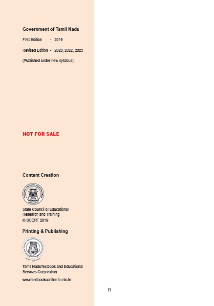
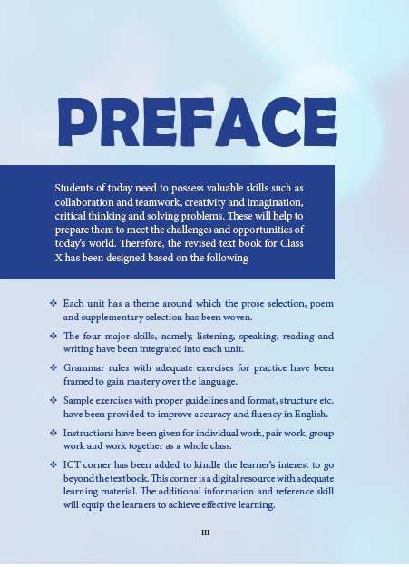
ContentsPage Number2 |
Month June |
|||
|
Poem* |
Page Number 17 |
Month June |
|
|
Page Number 21 |
Month June |
||
Page Number 30 |
Month July |
|||
|
Page Number 45 |
Month July |
||
|
Page Number 50 |
Month July |
||
Page Number 60 |
Month August |
|||
|
Poem* |
Page Number 84 |
Month August |
|
|
Page Number 88 |
Month August |
||
Page Number 94 |
Month September |
|||
|
Page Number 115 |
Month September |
||
|
Page Number 120 |
Month September |
||
Page Number 126 |
Month October |
|||
|
Poem* |
Page Number 148 |
Month October |
|
|
Page Number 153 |
Month October |
||
Page Number 162 |
Month November |
|||
|
Poem* |
Page Number 179 |
Month November |
|
|
Page Number 183 |
Month November |
||
Page Number 189 |
Month December |
|||
|
Page Number 202 |
Month December |
||
|
Page Number 205 |
Month December |
*Memoriter
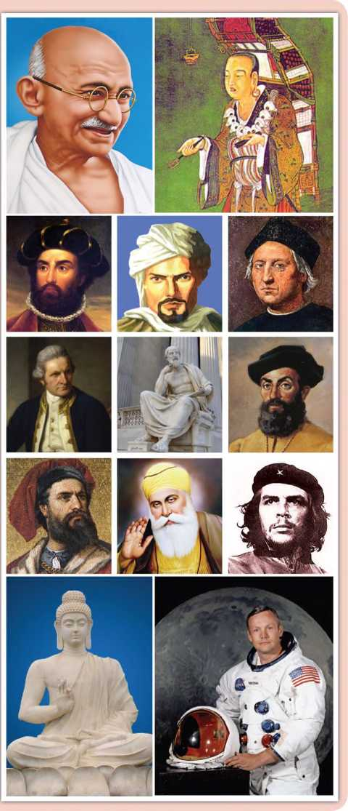
Author Liam O'Flaherty
The young seagull was alone on his ledge. His two brothers and his sister had already flown away the day before. He had been afraid to fly with them. Somehow, when he had taken a little run forward to the brink of the ledge and attempted to flap his wings, he became afraid. The great expanse of sea stretched down beneath, and it was such a long way down - miles down. He felt certain that his wings would never support him; so he bent his head and ran away back to the little hole under the ledge where he slept at night.
Even when each of his brothers and his little sister, whose wings were far shorter than his own, ran to the brink, flapped their wings, and flew away, he failed to muster up courage to take that plunge which appeared to him so desperate. His father and mother had come around calling to him shrilly, scolding him, threatening to let him starve on his ledge, unless he flew away. But for the life of him, he could not move.
Box Question begins.
(a) Why did the seagull fail to fly?
(b) What did the parents do, when the young seagull failed to fly?
Box Question ends.
That was twenty-four hours ago. Since then, nobody had come near him. The day before, all day long, he had watched his parents flying about with his brothers and sister, perfecting them in the art of flight, teaching them how to skim the waves and how to dive for fish. He had, in fact, seen his older brother catch his first herring and devour it, standing on a rock, while his parents circled around raising a proud cackle. And all the morning, the whole family had walked about on the big plateau midway down the opposite cliff, laughing at his cowardice.
The sun was now ascending the sky, blazing warmly on his ledge that faced the south. He felt the heat because he had not eaten since the previous nightfall. Then, he had found a dry piece of mackerel’s tail at the far end of his ledge. Now, there was not a single scap of food left. He had search every inch, rooting among the rough . dirt caked straw nest where he and his brothers and sisters had been hatched . He even gnawed at the dried pieces of egg shell . it was like eating a part of himself.
Box Questions begins.
(c) What was the first catch of the young seagulls older brother?
(d) What did the young seagull manage to find in his search for food on the ledge?
Box Questions ends.
He then trotted back and forth from one end of the ledge to the other, his long gray legs stepping daintily, trying to find some means of reaching his parents without having to fly. But on each side of him, the ledge ended in a sheer fall of precipice, with the sea beneath. And between him and his parents, there was a deep, wide crack.
Surely he could reach them without flying if he could only move northwards along the cliff face? But then, on what could he walk? There was no ledge, and he was not a fly. And above him, he could see nothing. The precipice was sheer, and the top of it was, perhaps, farther away than the sea beneath him.
He stepped slowly out to the brink of the ledge, and, standing on one leg with the other leg hidden under his wing, he closed one eye, then the other, and pretended to be falling asleep. Still, they took no notice of him. He saw his two brothers and his sister lying on the plateau dozing, with their heads sunk into their necks. His father was preening the feathers on his white back. Only his mother was looking at him.
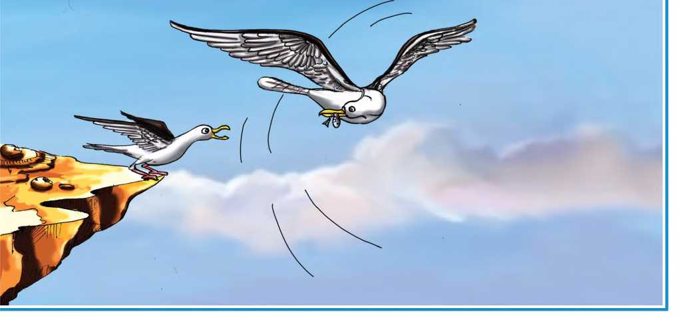
She was standing on a little high hump on the plateau, her white breast thrust forward. Now and again, she tore at a piece of fish that lay at her feet, and then scraped each side of her beak on the rock. The sight of the food maddened him. How he loved to tear food that way, scraping his beak now and again to whet it! He uttered a low cackle. His mother cackled too, and looked at him.
Box Questions begins.
(e) What did the young bird do to seek the attention of his parents?
(f) What made the young seagull go mad?
Box Questions ends.
'Gaah, gaah, gaah,’ he cried, begging her to bring him over some food. 'Gawl-ool-ah,' she screamed back mockingly. But he kept calling plaintively, and after a minute or so, he uttered a joyful scream. His mother had picked up a piece of fish and was flying across to him with it. He leaned out eagerly, tapping the rock with his feet, trying to get nearer to her as she flew across. But when she was just opposite to him, abreast of the ledge, she halted, her legs hanging limp, her wings motionless, the piece of fish in her beak almost within reach of his beak.
He waited a moment in surprise, wondering why she did not come nearer, and then maddened by hunger, he dived at the fish. With a loud scream, he fell outwards and downwards into space. His mother had swooped upwards. As he passed beneath her, he heard the swish of her wings.
Box Questions begins.
(g) Why did the young bird utter a joyful scream?
(h) Did the mother bird offer any food to the young bird?
Box Questions ends.
Then a monstrous terror seized him and his heart stood still. He could hear nothing. But it only lasted a moment. The next moment, he felt his wings spread outwards. The wind rushed against his breast feathers, then under his stomach and against his wings. He could feel the tips of his wings cutting through the air.
He was not falling headlong now. He was soaring gradually, downwards and outwards. He was no longer afraid. He just felt a bit dizzy. Then, he flapped his wings once and he soared upwards.
He uttered a delightful scream and flapped them again. He soared higher. He raised his breast and banked against the wind. 'Gaah, gaah, gaah. Gaah, gaah, gaah.' 'Gawloolah.' His mother swooped past him, her wings making a loud noise. He answered her with another scream. Then, his father flew over him screaming. Then, he saw his two brothers and sister flying around him, soaring and diving.
Then, he completely forgot that he had not always been able to fly, and commenced to dive and soar, shrieking shrilly.
Box Question begins.
(i) How did the bird feel when it started flying for the first time?
(j) What did the young bird's family do when he started flying?
Box Question ends.
He was near the sea now, flying straight over it, facing out over the ocean. He saw a vast green sea beneath him, with little ridges moving over it; he turned his beak sideways and crowed amusedly. His parents and his brothers and sister had landed on this green floor in front of him. They were beckoning to him, calling shrilly. He dropped his legs to stand on the green sea. His legs sank into it. He screamed with fright and attempted to rise again, flapping his wings. But he was tired and weak with hunger and he could not rise exhausted by the strange exercise. His feet sank into the green sea, and then his belly touched it and he sank no farther. He was floating on it. And around him, his family was screaming, praising him, and their beaks were offering him scraps of dog-fish.
He had made his first flight.
Box text about the author along with his picture follows.
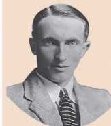
About the author.
Liam O'Flaherty (1896-1984) was an Irish novelist and short story writer and a major figure in the Irish literary renaissance. He was a founding member of the Communist Party of Ireland. A native Irish-speaker from the Gaeltacht, O'Flaherty wrote almost exclusively in English, except for a small number of short stories in the Irish language. He spent most of his time in travelling and lived comfortably and quietly outside the spotlight.
Box text ends.
Glossary
ledge (n)- a narrow shelf that juts out from a vertical surface
shrilly (adv.)- producing a high-pitched and piercing voice or sound
herring (n)- a long silver fish that swims in large groups in the sea
devour (v)- to eat something eagerly and in large amounts, so that nothing is left
cackle (n)- a sharp, broken noise or cry of a hen, goose or seagull
mackerel (n)- a sea fish with a strong taste, often used as food
gnaw (v)- to bite or chew something repeatedly
trot (v)- to run at a moderate pace with short steps
precipice (n)- a very steep side of a cliff or a mountain
preening (v)- cleaning feathers with beak
whet (v)- to sharpen
plaintively (adv.)- sadly, calling in a sad way
swoop (v)- to move very quickly and easily through the air
beckoning (v)- making a gesture with the hand or head to encourage someone to approach or follow.
A) Answer the following questions in a sentence or two.
1) How was the young seagull's first attempt to fly?
2) How did the parents support and encourage the young seagull's brothers and sister?
3) Give an instance that shows the pathetic condition of the young bird.
4) How did the bird try to reach its parents without having to fly?
5) Do you think that the young seagull's parents were harsh to him? Why?
6) What prompted the young seagull to fly finally?
7) What happened to the young seagull when it landed on the green sea?
B) Answer each of the following questions in a paragraph of about 100-150 words.
1) Describe the struggles underwent by the young seagull to overcome its fear of flying.
2) Your parents sometimes behave like the young bird's parents. They may seem cruel and unrelenting. Does it mean that they do not care for you? Explain your views about it with reference to the story.
Vocabulary
Parts of Speech
Read the following sentences.
Set 1
1) The young seagull uttered a joyful scream. (adjective)
2) The young seagull screamed with joy. (noun)
3) The young seagull screamed joyfully. (adverb)
Set 2
1) The young bird pretended to be falling asleep. (verb)
2) The young bird made a pretension of falling asleep. (noun)
3) The young bird made a pretentious posture of falling asleep. (adjective)
Note that in the Set 1, the adjective 'joyful' is changed to its noun form 'joy' and to its adverb form 'joyfully'.
In the Set 2, the verb 'pretend' has been transformed to its noun form 'pretension' and to its adjective form 'pretentious'.
We can transform a sentence by interchanging parts of speech without changing its meaning.
C) Change the parts of speech of the given words in the chart.
In this table parts of speech is given. We convert it into noun, verb, adjective, adverb.
Noun |
Verb |
Adjective |
Adverb |
The word given Under noun is Exhaution
|
|
|
|
|
The word given Under Verb is widen |
|
|
|
|
The word given Under Adjective is mad |
|
|
|
|
The word given Under Adverb is perfectly |
D) Read the following sentences and change the form of the underlined words as directed.
1. His family was screaming and offering him food. (underlined word screaming to adjective)
2. The young seagull gave out a loud call. (underlined word loud to adverb)
3. The bird cackled amusedly while flying. (underlined word amusedly to noun)
4. The depth of the sea from the ledge scared the seagull. (underlined word depth to adjective)
5. The successful flight of the bird was a proud moment for the seagull's family. (underlined word flight to verb)
E) Use the following words to construct meaningful sentences on your own.
1. coward – (dash)
2. gradual - (dash)
3. praise - (dash)
4. courageous - (dash)
5. starvation - (dash)
Listening
F) *Here is a travelogue by the students of Government Girls Higher Secondary School, Pattukkottai after their trip to Darjeeling. Listen to the travelogue and answer the following questions.
1) Fill in the blanks with suitable words.
1. The students visited (dash)city.
2. (dash)is the third highest mountain in the world.
3. (dash)hill is 13 km away from Darjeeling.
4. The drinking water is supplied by (dash)lake to the city.
5. After Senchal lake, they visited (dash).
ii) Do you think they had a memorable and enjoyable school trip?
iii) Name a few places that you wish to visit with your classmates on a school trip.
iv) State whether the following statements are True or False.
1. As the sky was cloudy, they could get the glimpse of the Mount Everest.
2. The toy train covers 14 km in three hours.
3. Tiger hill has earned international fame for the best sunset view.
*Listening text is on page 213
Speaking
Your family has planned for a two-day trip to a tourist spot nearby in a reserved forest. Your father has no idea about what safety measures and precautions to be taken before you start. Enact a role-play on the above situation.
Student 1: As a son / daughter
Student 2: As a father
These would help you.
❖ Important places to be visited
❖ Food and accommodation
❖ Mode of transport
❖ Necessary clothes for two days
❖ First-aid kit and medicines etc required if any.
G) Here is a dialogue between a father and his daughter. Continue the dialogue with at least five utterances and use all the clues given above.
Father: Hi Mary, it has been a very long time since we went on a trip. Let's plan one.
Mary: Yes,dad. I am also longing to go. Why don't we plan one for this weekend?
Father: Sure. Tell me, where shall we go?
Mary: Some place nearby but for at least two days.
Father: Hmmm… I think we should go to the reserved forest nearby.
Mary: Yeah. I've never been to a forest. I have seen a forest only on the TV and movies. The forest is a good choice!
Father: OK. If we are going to the forest, we must list out what we should carry with us for two days.
Mary: I think we should carry suitable clothes like (dash)
Father: What about the food? Do you have any idea,Mary?
Mary: Yeah. For food, I suggest (dash)
Father: (dash)
Mary: (dash)
Reading
H) Read the following passage and answer the questions that follow.
BUNGEE-JUMPING
Bungee jumping is an activity that involves jumping from a tall structure while connected to a long elastic cord. The tall structure is usually a fixed object, such as a building, bridge or crane; but it is also possible to jump from a movable object, such as a hot-air-balloon or helicopter, that has the ability to hover above the ground. The thrill comes from the freefalling and the rebound. When the person jumps, the cord stretches and the jumper flies upwards again as the cord recoils, and continues to oscillate up and down until all the kinetic energy is dissipated.
Jumping Heights, located in Mohan Chatti village, in Rishikesh has been rated as one of the most preferred bungee jumping destinations in India at a height of 83 meters. It is the only place in India where bungee jumping can be done from a fixed platform. This is also India's only fixed platform Bungee- performed from a professional cantilever, to separate it from entertainment parks, and create instead, an extreme adventure zone. The Bungee has been designed by David Allardice of New Zealand.
The Cantilever platform is built over a rocky cliff over-looking the river Hall, a tributary of River Ganges. Bungee-ing amidst the vastness of nature lends the experience an absolutely breathtaking experience. Jumping heights is well known for its safety measures and experienced staff. It costs around Rs 2500 per jump, a bit expensive, but totally worth the experience. The Bungee jumping experience has been set amidst the astoundingly stunning landscape of Rishikesh. To Bungee jump, one must be at least 12 years and should weigh between 40-110 kg.
Questions
1) What is Bungee Jumping?
2) Can Bungee be performed from a movable object? How?
3) When do you think Bungee becomes thrilling?
4) What is the experience when one falls off the platform?
5) Where is the Bungee jumping point located in India?
6) What is the minimum age to Bungee jump?
Writing
Advertisement
An advertisement is an audio or visual form of marketing communication to promote or sell a product, service or idea.
Box Text begins
An advertisement should include the following to make it attractive.
1. Name of the product / brand / outlet.
2. Address with contact information and websites.
3. Appealing Images (visuals) of the Product / Service / Idea to be advertised.
4. Target demographics / audience / customers.
5. Feel-Good discounts and offers.
6. Colourful Background.
7. Colourful and readable text.
8. Brief and catchy descriptions and benefits about the product.
9. Borders and lines to organize.
Box text ends.
Now look at the model advertisement given below
![A picture with a model advertisement is printed. Its an advertisement about RKP Bookshop (Book shop name is given). It gives information about the bookshop which has more than 2000 books. Product Description like A collection of rare books, story books for children, fiction and non fiction, Newspaper and magazines, Stationery products are mentioned. It gives10 percent Discount for student (Offers and Discounts and Target Audience is mentioned) Catchy Phrases like, You name it! We have it, “There is no friend a loyal as a book.” are given. Appealing visuals are given. Address of the shop, Main Road, Vallam, Thanjavur – 613 403 is given.](images/image-4.jpeg)
Roman letter one) Prepare attractive advertisements using the hints given below.
1) Home appliances hyphan Aadi Sale hyphan 20-50% hyphan Special Combo Offers hyphan Muthusamy & Co., Raja Street, Gingee.
2) Mobile Galaxy hyphan Smart phones hyphan accessories hyphan SIM cards hyphan Recharge hyphan Free Power banks on Mobile purchase hyphan Number l, Toll gate, Trichy.
Report Writing
A report is designed to lead people through the information in a structured way, and also to enable them to find the information that they want quickly and easily. It is a short, sharp, concise document which is written for a particular purpose and audience.
Format of a report.
❖ Title of the report
❖ Report Writer's name
❖ What... ? (name of the event)
❖ When...? (day and time of the event)
❖ Where...? (venue of the event)
❖ Why...? (the purpose of the event)
❖ Who...? (Chief guest,)
❖ How...? (the details of the event, its impact etc.)
❖ Use simple sentences in the Past Tense.
❖ Be brief.
❖ Do not exaggerate the event.
Here is a sample report on the Annual Sports Day of a school. Observe the format and the language used.
Box Text begins…
Annual Sports Day
By Charan, Tenth - C
Government Higher Secondary School, Hosur, organized the Annual Sports Day on August 29, 2018. The event was to inculcate the spirit of sportsmanship and fondness for sports in children. Approximately 1,000 students participated in the track and field events. The program began with a prayer rendered by the school choir. Following this, the Headmaster delivered the welcome speech. The Sports Day was inaugurated by the Chief Guest, followed by march past, led by the school captain with a placard bearing the School's name and motto. Then the much awaited track and field events began. As the events went by, the school campus reverberated with enthusiastic cheers from the spectators. Many new school level records were made in 50 metres, 100 metres, and 200 metres races. The merit and participation certificates were given away by the Chief Guest and Guests of Honour. In his speech, the Chief Guest praised the endeavours of the school. Then, the Headmaster proposed the vote of thanks. The event ended with the National Anthem.
Box text ends…
J) Write a report of the following events in about 100-120 words.
1. 'Educational Development Day' was organized in your school on 15th July. The District Collector was the Chief Guest of the event. As part of the event, many competitions were held and the prizes were distributed to the winners and participants. It was a grand and successful event. Now, as the member of the organizing committee, write a report on the event in about 120 words.
2. You are the School Pupil Leader. You have been asked to write a report on the Inaugural Ceremony of English Literary Association of your school which was held recently. Write a report on the same in not more than 120 words.
3. You are the Coordinator of the Science Forum of your school. An event had been organized on account of National Science Day for the members of the forum. Now, write a report on the observation of “National Science Day” at your school.
We have already learnt about Modals in Class IX. Now, let us revise.
A modal verb is used to indicate modality (that expresses a speaker's general intention) i.e. likelihood, ability, permission, request, capacity, suggestions, order, obligation, advice etc.
We use modals to show if we believe something is certain, probable or possible.
Modals are,
can, could, may, might, will, would, shall, should, must, have to
Semi / Quasi modals are
ought to, need, dare & used to
DO YOU KNOW?
Modals do not change with the person or number of the subject.
A) Complete these sentences using appropriate modals. The clues in the brackets will help you.
1. When I was a child, I (dash) climb trees easily but now I can't. (ability in the past)
2. I (dash) win this singing contest. (determination)
3. You (dash) buy this book. It is worth buying, (advice or suggestion)
4. Poongothai (dash) speak several languages. (ability in the present)
5. I swear I (dash) tell lies again. (promise)
6. My father (dash) play badminton in the evenings when he was at college. (past habit)
7. You (dash) do as I say! (command)
8. (dash) I have another glass of water? (request)
9. Sibi has not practised hard but he (dash) win the race. (possibility)
10. We (dash) preserve our natural resources. (duty)
B) Rewrite the following sentences by rectifying the errors in the use of modals.
1. Would I have your autograph?
2. I can be fifteen next April.
3. Take an umbrella. It should rain later.
4. The magistrate ordered that he might pay the fine.
5. Make me a cup of tea, shall you?
6. You may speak politely to the elders.
7. You will get your teeth cleaned at least once a year.
8. We could grow vegetables in our kitchen garden but we don't do it now.
9. Must I get your jacket? The weather is cold.
10. Could the train be on time?
C) Read the dialogue and fill in the blanks with suitable modals.
Dad: (dash) we go out for dinner tonight?
Charan: Yes, Dad. We (dash) go to a restaurant where I (dash) have some ice cream.
Dad: OK, Then, I (dash) be home by 7 p.m. Mom and you (dash) be ready by then.
Charan: Sure. We (dash). My friend told me that there is a magic show nearby. (dash) you please take us there?
Dad: We (dash) not have time to go for the magic show, I suppose. If we have enough time left, we (dash) plan.
Charan: By the way, (dash) we inform our gate keeper about our outing?
Dad: Yes, we (dash) so that he (dash) be aware we aren't at home.
Charan: (dash) I call up Mom and tell her about our plan today?
Dad: You (dash) to. Otherwise, we might be in trouble when she returns home.
Charan: Hmm... by the time you come home in the evening, we (dash) be waiting for you. Hope you (dash) be late. Bye.
D) Read the following dialogues and supply appropriate modals.
Student: Can we leave our bags in the class during the break?
Teacher: Yes, you (dash) but arrange them neatly.
Passenger: My child is 6 years old. Do I have to buy him a ticket?
Conductor: Yes, you (dash). It costs half of the price of an adult ticket.
Vani: Can we go for coffee after the meeting?
Yoga: No, I (dash). I have to go home.
Salesman: When (dash) I receive my order?
Customer: I (dash) assure you sir, the order (dash) be delivered tomorrow.
Neela: Do you think I should write about my education background in the resume?
Preethi: Yes, you (dash). You (dash) get a better job.
Imagine you have been to Thanjavur recently. Based on your experience and the data given below about Thanjavur, suggest and guide your friend who wishes to visit Thanjavur and places nearby, using modals in your sentences.
In this table trains to Thanjavur) places to visit in Thanjavur) places around Thanjavur) unique products of Thanjavur is given elaborately.
Table begins.
Trains towards Thanjaur |
•Places to visit in Thanjavur |
•Places around Thanjavur |
•Unique Products of Thanjavur |
•UzhavanExpress |
•Brihadeeswarar Temple (Big temple) |
•Thiruvaiyaru |
•Art Plates |
•Mannai Express |
•Museum |
•Kumbakonam |
• Paintings |
•Madurai Express |
•SaraswathiMahal (Library) |
• Kallanai Dam |
•Bronze Statues |
|
•Palace |
•Poondi (Church) |
Dancing Dolls |
|
|
•Manara Pattukkottai |
|
Table ends.
E) Here are a few sentences already done for you. The clues given would be helpful to make more sentences on your own.
1. I would suggest that you take the Uzhavan Express to Thanjavur from Chennai.
2. You will be more comfortable if you could book 3 tier A/C.
3. You could enjoy (dash) .
4. You should visit (dash).
5. You mustn't miss (dash).
6. You can buy (dash).
7. (dash).
8. (dash).
9. (dash).
10. (dash).
Active and Passive
In Class IX, we have already learnt about Active and Passive Voices. Now, we shall learn some more forms of the voice.
Let us recall
When we give importance to what people and things do, we use active verb forms. When we give importance to what happens to people and things, we often use passive verb forms. Transitive verbs are followed by objects . Intransitive verbs donot take objects
F. Change the following sentences to the other voice.
1. The manager appointed many office assistants.
2. You are making a cake now.
3. That portrait was painted by my grandmother.
4. Malini had bought a colourful hat for her daughter.
5. They have asked me to pay the fine.
6. The militants were being taken to prison by the police.
7. His behaviour vexes me.
8. Rosy will solve the problem.
9. Our army has defeated the enemy.
10. The salesman answered all the questions patiently.
Passive Voice - Request
In Active Voice, a request begins with 'Please'. When we change a request from Active to Passive Voice, we should begin the sentence with 'You are requested to' in place of 'Please'. If the request is in negative form, the request in passive voice should begin with 'You are requested not to'. (e.g.)
1. Please assemble in the ground. (Active)
You are requested to assemble in the ground. (Passive)
2. Please do not use mobile phones here. (Active)
You are requested not to use mobile phones here. (Passive)
Passive Voice - Advice
When we change an advice from active to passive voice, we should begin the sentence with 'You are advised to'. If the advice is in negative form, it should begin with 'You are advised not to'.
(e.g.) 1. Work hard (Active)
You are advised to work hard. (Passive)
2. Do not eat junk food. (Active) You are advised not to eat junk food. (Passive)
Similarly, you can also use the following for other imperatives.
❖ You are instructed to...
You are instructed not to...
❖ You are ordered to...
You are ordered not to...
Passive Voice - Omitting the agent
In the sentences beginning with someone/no one, omit the 'agent' (subject) in the passive voice.
(e.g.) 1. Somebody has taken away my book. (Active)
My book has been taken away. (Passive)
2. No one has bought the tickets. (Active)
The tickets have not been bought. (Passive)
(Add 'not' to the verb for nobody, none, no one)
Passive Voice - Interrogatives
When sentences are changed to Passive, they begin with a verb (in 'Yes/ No' questions) or with a question word followed by the verb (in 'Wh' questions).
a. Questions beginning with Auxiliary verbs
(e.g.) 1. Did he write a letter? (Active)
Was a letter written by him? (Passive)
2. Is he watching us? (Active)
Are we being watched by him? (Passive)
b. Questions beginning with 'wh' words
(e.g.) 1. Who will accept this? (Active)
By whom will this be accepted? (Passive)
2. Who has arranged this meeting? (Active)
By whom has this meeting been arranged? (Passive)
3. When will you finish the building? (Active)
When will the building be finished by you? (Passive) (the agent 'by you' is optional)
4. How did they do this? (Active)
How was this done by them? (Passive)
(the agent 'by them is optional)
G. Change the following into Passive voice.
1. Please call him at once.
2. How did you cross the river?
3. No one is borrowing the novels from the library.
4. Will you help me?
5. Go for a jog early in the morning.
6. Why have you left your brother at home?
7. Nobody should violate the rules.
8. Someone has to initiate it immediately.
9. Have you invited Raman to the party?
10. Please do not walk on the grass.
11. Cross the busy roads carefully.
12. When will you book the tickets to Bengaluru?
H. In the following sentences the verbs have two objects namely Direct and Indirect objects. Change each of the following sentences into two passives using direct object as the subject in one and indirect in the other.
1. John gave a bar of chocolate to Jill.
a: Jill was given (dash)
b: A bar of chocolate was given (dash)
2. Pragathi lent a pencil to Keerthana.
a. (dash)
b. (dash)
3. Sudha told the truth to her friend.
a. (dash)
b. (dash)
4. They offered the job to Venkat.
a. (dash)
b. (dash)
5. The boss showed the new computer to Kaviya.
a. (dash)
b. (dash)
I. Rewrite the following passage in Passive Voice.
A few days ago, someone stole Ambroses motorbike. Ambrose had left it outside his house. He reported the theft to the police. The police told him that they would try to find his motorbike. This morning, they found his motorbike. The police called Ambrose to the police station. The thieves had painted it and then sold it to someone else. The new owner had parked the motorbike outside a mall when the police found it. After an enquiry, the police arrested the thieves.
J. Write a recipe of your favourite dish in passive voice. Remember to list out the ingredients of the dish you have chosen and their quantity. Use Simple Present tense to write your recipe.
K. Write a report of an event held at your school using Passive voice. Use Simple Past Tense to narrate the event.
By Henry Van Dyke
Let me but live my life from year to year,
With forward face and unreluctant soul;
Not hurrying to, nor turning from the goal;
Not mourning for the things that disappear
In the dim past, nor holding back in fear
From what the future veils; but with a whole
And happy heart, that pays its toll
To Youth and Age, and travels on with cheer.
So let the way wind up the hill or down,
O'er rough or smooth, the journey will be joy:
Still seeking what I sought when but a boy,
New friendship, high adventure, and a crown,
My heart will keep the courage of the quest,
And hope the road's last turn will be the best.
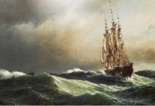
About the Poet
Henry Van Dyke (1852 - 1933) was an American author, poet, educator, and clergyman. He served
as a professor of English literature at Princeton University between 1899 and 1923. He was elected
to the American Academy of Arts and Letters and received many other honours.
Glossary
mourning (v) - feeling or expressing great sadness
veils (v) - to hide or cover something so that you cannot see it clearly or understand it
crown (n) - a prize or position offered for being the best
quest (n) - a long search for something that is difficult to find
unreluctant* (adj.) - willing to do something (*This form is generally not used but the poet
has coined it for emphasi
In a box a definition of sonnet is given. A sonnet is a little song with 14 lines is given.
Box text begins.
The word sonnet is derived from the Italian word “sonetto,” which means a 'little song' or 'small lyric'. In poetry, a sonnet has 14 lines, and is written in 'iambic pentameter'(A line with ten syllables, accented on every second beat). The first eight lines of a sonnet is known as “octave” and the last six lines is known as “sestet”. Sonnets can be categorized on the basis of their rhyme scheme.
Box text ends.
1. Let me but live my life from year to year,
With forward face and un reluctant soul;
a. Whom does the word 'me' refer to?
b. What kind of life does the poet want to lead?
2. Not hurrying to, nor turning from the goal;
Not mourning for the things that disappear
a. Why do you think the poet is not in a hurry?
b. What should one not mourn for?
3. In the dim past, nor holding back in fear
From what the future veils; but with a whole
And happy heart, that pays its toll
To Youth and Age, and travels on with cheer.
a. What does the poet mean by the phrase 'in the dim past'?
b. Is the poet afraid of future? c. How can one travel on with cheer?
4. So let the way wind up the hill or down,
O'er rough or smooth, the journey will be joy:
Still seeking what I sought when but a boy,
New friendship, high adventure, and a crown,
a. How is the way of life?
b. How should be the journey of life?
c. What did the poet seek as a boy?
5. My heart will keep the courage of the quest,
And hope the road's last turn will be the best.
a. What kind of quest does the poet seek here?
b. What is the poet's hope?
6. In the dim past, nor holding back in fear
From what the future veils; but with a whole
And happy heart, that pays its toll
To Youth and Age, and travels on with cheer.
a. Identify the rhyming words of the given lines.
7. Let me but live my life from year to year,
With forward face and unreluctant soul;
Not hurrying to, nor turning from the goal;
Not mourning for the things that disappear
a. Identify the rhyme scheme of the given lines.
B. Answer the following question in about 80 - 100 words
1. Describe the journey of life as depicted in the poem by Henry Van Dyke.
C. Based on your understanding of the poem, complete the following passage by the using the phrases given in the box.
A table is given with phrases to be used for Exercise fill in the blanks. The table has words like youth to old age, up or down the hill, high adventure, joyful, mourn, to hurry nor move away .The phrases is to be used for a passage with blanks given below.
youth to old age |
up or down the hill |
to hurry nor move away |
|
high adventure |
joyful |
mourn |
looking ahead |
The poet wants to live his life (dash), willing to do something. He neither wants (dash) from his goal. He does not want to (dash) the things he has lost, not hold back for fear of the future. He instead prefers to live his life with a whole and happy heart which cheerfully travels from (dash). Therefore, it does not matter to him whether the path goes (dash), rough or smooth, the journey will be (dash). He will continue to seek what he wanted as a boy - new friendship, (dash) and a crown (prize). His heart will remain courageous and pursue his desires. He hopes that every turn in his life's journey will be the best.
John Masefield
I must go down to the seas again, to the lonely sea and the sky,
And all I ask is a tall ship and a star to steer her by;
And the wheel's kick and the wind's song and the white sail's shaking,
And a grey mist on the sea's face, and a grey dawn breaking.
I must go down to the seas again, for the call of the running tide
Is a wild call and a clear call that may not be denied;
And all I ask is a windy day with the white clouds flying,
And the flung spray and the blown spume, and the sea-gulls crying.
I must go down to the seas again, to the vagrant gypsy life,
To the gull's way and the whale's way where the wind's like a whetted knife;
And all I ask is a merry yarn from a laughing fellow-rover,
And quiet sleep and a sweet dream when the long trick's over.
An Extract from Charles Lamb's
Tales From Shakespeare
There was an island in the sea, the only inhabitants of which were an old man, named Prospero, and his daughter Miranda, a very beautiful young lady. She came to this island so young, that she had no memory of having seen any other human face than her father's.
They lived in a cave made out of a rock; it was divided into several apartments, one of which Prospero called his study; there he kept his books, which chiefly treated of magic. By virtue of his art, he had released many good spirits from a witch called Sycorax who had them imprisoned in the bodies of large trees. These gentle spirits were ever after obedient to the will of Prospero. Of these Ariel was the chief.
Ariel took rather too much pleasure in tormenting an ugly monster called Caliban, because he was the son of his old enemy Sycorax. Caliban was employed like a slave, to fetch wood, and do the most laborious offices; and Ariel had the charge of compelling him to these services.
With the help of these spirits, Prospero could command the winds, and the waves of the sea. By his orders they raised a violent storm, in the midst of which, he showed his daughter a fine large ship, which he told her was full of living beings like themselves. “Oh my dear father,” said she, “if by your art you have raised this dreadful storm, have pity on their sad distress. See! the vessel will be dashed to pieces. Poor souls! they will all perish.”
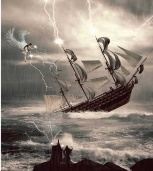
“Be not so amazed, daughter Miranda,” said Prospero; “there is no harm done. I have so ordered it, that no person in the ship shall receive any hurt. What I have done has been in care of you, my dear child. You are ignorant. Can you remember a time before you came to this cell? I think you cannot, for you were not then three years of age.”
“Twelve years ago, Miranda,” continued Prospero, “I was Duke of Milan, and you were a princess, and my only heir. I had a younger brother, whose name was Antonio, to whom I trusted everything; My brother Antonio being thus in possession of my power, began to think himself the duke indeed. The opportunity I gave him of making himself popular among my subjects awakened in his bad nature a proud ambition to deprive me of my dukedom: this he soon effected with the aid of the King of Naples, a powerful prince, who was my enemy.”
“Wherefore,” said Miranda, “did they not that hour destroy us?”
“My child,” answered her father, “they dared not, so dear was the love that my people bore me. Antonio carried us on board a ship, and when we were some leagues out at sea, he forced us into a small boat, without either tackle, sail, or mast: there he left us, as he thought, to perish. But a kind lord of my court, one Gonzalo, who loved me, had privately placed in the boat, water, provisions, apparel, and some books which I prize above my dukedom.”
“O my father,” said Miranda, “what a trouble must I have been to you then!”
“No, my love,” said Prospero, “you were a little angel that did preserve me. Your innocent smiles made me bear up against my misfortunes. Our food lasted till we landed on this desert island, since when my chief delight has been in teaching you, Miranda, and well have you profited by my instructions.”
“Heaven thank you, my dear father,” said Miranda. “Now tell me, sir, your reason for raising this sea-storm?”
“Know then,” said her father, “that by means of this storm, my enemies, the King of Naples, and my cruel brother, are cast ashore upon this island.”
Having so said, Prospero gently touched his daughter with his magic wand, and she fell fast asleep; for the spirit Ariel just then presented himself before his master, to give an account of the tempest, and how he had disposed of the ship's company, and though the spirits were always invisible to Miranda, Prospero did not choose she should hear him holding conversation (as would seem to her) with the empty air.
“Well, my brave spirit,” said Prospero to Ariel, “how have you performed your task?”
Ariel gave a lively description of the storm, and of the terrors of the mariners; and how the king's son, Ferdinand, was the first who leaped into the sea; and his father thought he saw his dear son swallowed up by the waves and lost. “But he is safe,” said Ariel, “in a corner of the isle, sadly lamenting the loss of the king, his father.
“That's my delicate Ariel,” said Prospero. “Bring him here: my daughter must see this young prince. Where is the king, and my brother?”
“I left them,” answered Ariel, “searching for Ferdinand, whom they have little hopes of finding, thinking they saw him perish. Of the ship's crew not one is missing; though each one thinks himself the only one saved: and the ship, though invisible to them, is safe in the harbour.”
Ariel then went to fetch Ferdinand.
“O my young gentleman,” said Ariel, when he saw him, “I will soon move you. You must be brought, I find, for the Lady Miranda to have a sight of your pretty person. Come, sir, follow me.”
He followed in amazement the sound of Ariel's voice, till it led him to Prospero and Miranda, who were sitting under the shade of a large tree. Now Miranda had never seen a man before, except her own father.
“Miranda,” said Prospero, “tell me what you are looking at yonder.”
“O father,” said Miranda, in a strange surprise, “surely that is a spirit. Lord! How it looks about! Believe me, it is a beautiful creature. Is it not a spirit?”
“No, girl,” answered her father; “it eats, and sleeps, and has senses such as we have. This young man you see was in the ship. He is somewhat altered by grief, or you might call him a handsome person. He has lost his companions, and is wandering about to find them.”
Miranda, who thought all men had grave faces and greybeards like her father, was delighted with the appearance of this beautiful young prince; and Ferdinand, seeing such a lovely lady in this desert place, and from the strange sounds he had heard, expecting nothing but wonders, thought he was upon an enchanted island, and that Miranda was the goddess of the place, and as such he began to address her.
She timidly answered, she was no goddess, but a simple maid, and was going to give him an account of herself, when Prospero interrupted her. He was well pleased to find they admired each other, but to try Ferdinand's constancy, he resolved to throw some difficulties in their way: therefore advancing forward, he addressed the prince with a stern air, telling him, he came to the island as a spy, to take it from him who was the lord of it. “Follow me,” said he, “I will tie your neck and feet together. You shall drink sea-water; shell-fish, withered roots, and husks of acorns shall be your food.” “No,” said Ferdinand, “I will resist this” and drew his sword; but Prospero, waving his magic wand, fixed him to the spot where he stood, so that he had no power to move.
Miranda hung upon her father, saying, “Why are you so ungentle? Have pity, sir; I will be his surety. This is the second man I ever saw, and to me he seems a true one.”
“Silence,” said the father: “one word more will make me chide you, girl! What! An advocate for an impostor! You think there are no more such fine men, having seen only him and Caliban.” This he said to prove his daughter's constancy; and she replied, “My affections are most humble. I have no wish to see a goodlier man.”
“Come on, young man,” said Prospero to the Prince; “you have no power to disobey me.”
Prospero had commanded Ferdinand to pile up some heavy logs of wood. Kings' sons not being much used to laborious work, Miranda soon after found him almost dying with fatigue. “Alas!” said she, “do not work so hard; my father is at his studies, he is safe for these three hours; pray rest yourself.”
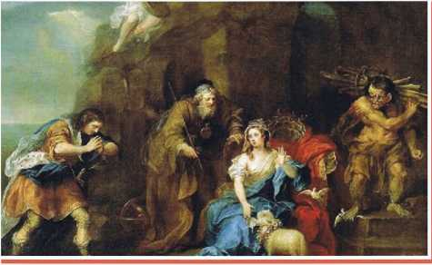
“O my dear lady,” said Ferdinand, “I dare not. I must finish my task before I take my rest.”
“If you will sit down,” said Miranda, “I will carry your logs the while.” But this Ferdinand would by no means agree to.
Prospero, who had enjoined Ferdinand this task merely as a trial of his love, was not at his books, as his daughter supposed, but was standing by them invisible, to overhear what they said.
Ferdinand inquired her name, which she told, saying it was against her father's express command she did so.
And then Ferdinand, in a fine long speech, told the innocent Miranda he was heir to the crown of Naples, and that she should be his queen.
Prospero then appeared before them.
“Fear nothing, my child,” said he; “I have overheard, and approve of all you have said. And, Ferdinand, if I have too severely used you, I will make you rich amends, by giving you my daughter. All your vexations were but trials of your love, and you have nobly stood the test.
When Prospero left them, he called his spirit Ariel, who quickly appeared before him, eager to relate what he had done with Prosperos brother and the King of Naples. Ariel said he had left them almost out of their senses with fear, at the strange things he had caused them to see and hear. When fatigued with wandering about, and famished for want of food, he had suddenly set before them a delicious banquet, and then, just as they were going to eat, he appeared visible before them in the shape of a harpy, a voracious monster with wings, and the feast vanished away. Then, to their utter amazement, this seeming harpy spoke to them, reminding them of their cruelty in driving Prospero from his dukedom, and leaving him and his infant daughter to perish in the sea; saying, that for this cause these terrors were suffered to afflict them.
The King of Naples, and Antonio the false brother, repented the injustice they had done to Prospero.
“Then bring them here, Ariel,” said Prospero.
Ariel soon returned with the king, Antonio, and old Gonzalo. This Gonzalo was the same who had so kindly provided Prospero formerly with books and provisions, when his wicked brother left him, as he thought, to perish in an open boat in the sea.
Grief and terror had so stupefied their senses, that they did not know Prospero. He first discovered himself to the good old Gonzalo, calling him the preserver of his life; and then his brother and the king knew that he was the injured Prospero.
Antonio with tears, and sad words of sorrow and true repentance, implored his brother's forgiveness and Prospero forgave them; and, upon their engaging to restore his dukedom, he said to the King of Naples, “I have a gift in store for you too;” and opening a door, showed him his son Ferdinand playing chess with Miranda.
Nothing could exceed the joy of the father and the son at this unexpected meeting, for they each thought the other drowned in the storm.
The King of Naples was almost as much astonished at the beauty and excellent graces of the young Miranda, as his son had been. “Who is this maid?” said he; “She is the daughter to this Prospero, who is the famous Duke of Milan, of whose renown I have heard so much, but never saw him till now: of him I have received a new life: he has made himself to me a second father, giving me this dear lady,” said Ferdinand
“No more of that,” said Prospero: “let us not remember our troubles past, since they so happily have ended.” And then Prospero embraced his brother, and again assured him of his forgiveness.
Prospero now told them that their ship was safe in the harbour, and the sailors all on board her, and that he and his daughter would accompany them home the next morning.
Before Prospero left the island, he dismissed Ariel from his service, to the great joy of that lively little spirit.
About the author
William Shakespeare
(1564-1616) was born in Stratford-upon-Avon, England. He was an English poet, playwright and actor. Widely regarded as both the greatest writer in the English language and the world's pre-eminent dramatist. His surviving body of work includes 37 plays, 154 sonnets and two narrative poems, the majority of which he penned between 1589 and 1613.
❖ The play 'The Tempest' was written between 1610 and 1611.
❖ Many critics and historians believe it to be one of the last plays of William Shakespeare.
❖ It is considered as one of Shakespeare's well-written plays.
❖ It is believed that the play 'The Tempest' was based on an actual wreck of a ship called Sea Venture off Bermuda that was headed to Virginia. There is a strong evidence that Shakespeare used elements of the story of the wreck.
Glossary
tormenting (v) - making someone suffer or worry a lot
dreadful (adj.) - extremely bad or unpleasant
duke (n) - a man of very high social rank in some European countries; a king
deprive (v) - to take something important or necessary away from someone
fatigue (n) - extreme tiredness
vexation (n) - worry or anger
famished (adj.) - extremely hungry
voracious (adj.) - very eager for something
repent (v) - to be very sorry for something bad you have done.
1. (dash) was the chief of all spirits.
a. Sycorax
b. Caliban
c. Ariel
d. Prospero
2. (dash) raised a dreadful storm.
a. Caliban
b. Prospero
c. Miranda
d. Sycorax
3. Miranda was brought to the island (dash) years ago.
a. fourteen
b. ten
c. twelve
d. five
4. Prospero ordered Ariel to bring (dash) to his place.
a. Gonzalo
b. Ferdinand
c. King of Naples
d. Antonio
5. (dash) had provided Prospero formerly with books and provisions.
a. Antonio
b. (dash) Ferdinand
c. Gonzalo
d. Antonio
6. The second human being that Miranda saw on the island was (dash).
a. Ariel
b. Prospero
c. Ferdinand
d. Gonzalo
B. Identify the character or speaker
1. He imprisoned the spirits in the bodies of large trees.
2. He was the chief of all spirits.
3. It seems to me like the recollection of a dream.
4. I was Duke of Milan, and you were a princess.
5. What a trouble must I have been to you then!
6. Now pray tell me, sir, your reason for raising this sea-storm?
7. I will soon move you.
8. I will tie you neck and feet together.
9. I must finish my task before I take my rest.”
10. He repented and implored his brother's forgiveness.
C. Answer the following questions in one or two sentences.
1. Who were the inhabitants of the island?
2. What powers did Prospero posses?
3. Who was Caliban? What was he employed for?
4. Who were on the ship? How were they related to Prospero?
5. Why had Prospero raised a violent storm in the sea?
6. How did Miranda feel when her father raised the storm to destroy the ship?
7. What was Ariel ordered to do with the people on the ship?
8. Give two reasons why Miranda was so concerned about Ferdinand.
9. Why did Prospero set Ferdinand a severe task to perform?
10. How was Gonzalo helpful to Prospero when he left Milan?
D. Answer the questions in a paragraph of about 100 - 150 words.
1. Write a detailed character sketch of Prospero.
2. Narrate how Prospero made his enemies repent to restore his dukedom.
E. Rearrange the following sentences in coherent order
He ordered Ariel to torment the inmates of the ship.
Miranda was attracted by Ferdinand and had more concern towards him.
Prospero and Miranda came to an island and lived in a cave.
Prospero forgave them and restored his dukedom, Milan.
He raised a violent storm in the sea to wreck the ship of his enemies.
Prospero wanted to test Ferdinand and gave a severe task to perform.
Using his powers, Prospero released the good spirits from large bodies of trees.
The King of Naples, and Antonio the false brother, repented the injustice they had done to Prospero.
Ariel was instructed to bring Ferdinand, the prince of Naples to his cave.
Ferdinand was the second human whom Miranda had seen after her father.
ICT CORNER
This page has ICT corner which has details on modal verbs,usage of verbs is given.
Grammar – Modals
Two objectives given. They are
❖ To use appropriate modals
Steps
1. Type the URL link given below in the browser or scan the QR code.
2. Enable flash to play the game
3. Click the correct modals by choosing right option
4. Roll the dice and play until you win the snake and ladder game.
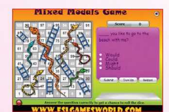
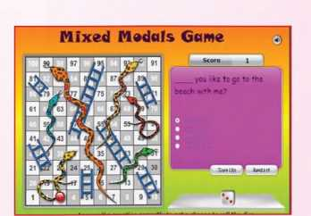
Download Link
Click the following link or scan the QR code to access the website. http://www.eslgamesworld.com/members/games/grammar/New __________ Snakes __________ %20I.adders/Mixed __________ Modals.html
** Images are indicatives only.
Box text begins.
Use the following tongue twisters in a 'Game of Telephone', where each student whispers the phrase to the next. The student who finishes the last says it aloud to the class. Let the students fill in the table given with what they listen to. They can get the help of their teacher.
10 Tongue Twisters given as follows.
1) Six sleek swans swam swiftly southwards.
2) Four furious friends fought for the phone.
3) Green glass globes glow greenly.
4) Six slimy snails sailed silently.
5) Scissors sizzle, thistles sizzle.
6) He threw three free throws.
7) Tommy Tucker tried to tie Tammy's Turtles tie.
8) I wish you were a fish in my dish.
9) Five frantic frogs fled from fifty fierce fishes.
10) Big black bugs bleed blue black blood but baby black bugs bleed blue blood.
Each student whispers the tongue twisters to the next student. Like that the last student has to tell what tongue twister he has listened to the whole class loudly. Then the students have to write the tongue twisters in the table given below.
|
|
|
|
|
|
|
|
|
|
Hope you ended with a delightfully tangled whole new tongue twisters.
Box text ends.
James Grover Thurber
Imagination of odd things always leads to absolute humour. Read the lesson and enjoy the narrator's experience with his grandfather who creates chaos and laughter with his imaginative stories.
The ghost that got into our house on the night of November 17, 1915, raised such a hullabaloo of misunderstandings that I am sorry I didn't just let it keep on walking, and go to bed. Its advent caused my mother to throw a shoe through a window of the house next door and ended up with my grandfather shooting a patrolman. I am sorry, therefore, as I have said, that I ever paid any attention to the footsteps.
They began about a quarter past one o'clock in the morning, a rhythmic, quickcadenced walking around the dining room table. My mother was asleep in one room upstairs, my brother-Herman in another, grandfather was in the attic, in the old walnut bed which, as you will remember, once fell on my father. I had just stepped out of the bathtub and was busily rubbing myself with a towel when I heard the steps. They were the steps of a man walking rapidly around the dining-table downstairs. The light from the bathroom shone down the back-steps, which dropped directly into the dining-room; I could see the faint shine of plates on the plate-rail; I couldn't see the table. The steps kept going round and round the table; at regular intervals a board creaked, when it was trod upon. I supposed at first that it was my father or my brother Roy, who had gone to Indianapolis but were expected home at any time. I suspected next that it was a burglar. It did not enter my mind until later that it was a ghost.
a. Where was the author when he heard the noise?
b. What did the narrator think the unusual sound was?
After the walking had gone on for perhaps three minutes, I tiptoed to Herman's room. 'Psst!' I hissed, in the dark, shaking him. Awp', he said, in the low, hopeless tone of a despondent beagle - he always half suspected that something would get him' in the night. I told him who I was. 'There's something downstairs!' I said. He got up and followed me to the head of the back staircase. The steps had ceased. Herman looked at me in some alarm: I had only the bath towel around my waist. He wanted to go back to bed, I gripped his arm.
There's something down there!' I said. Instantly the steps began again, circled the dining-room table like a man running, and started up the stairs towards us, heavily, two at a time. The light still shone palely down the stairs; we saw nothing coming; we only heard the steps. Herman rushed to his room and slammed the door. I slammed shut the door at the stairs top and held my knee against it.
After a long minute, I slowly opened it again. There was nothing there. There was no sound. None of us ever heard thghost again.
The slamming of the doors had aroused mother: she peered out of her room. 'What on earth are you boys doing?' she demanded. Herman ventured out of his room. 'Nothing,' he said, gruffly, but he was, in colour, a light green. 'What was all that running around downstairs?' said mother. So she had heard the steps, too! We just looked at her. 'Burglars!' she shouted, intuitively. I tried to quieten her by starting lightly downstairs.
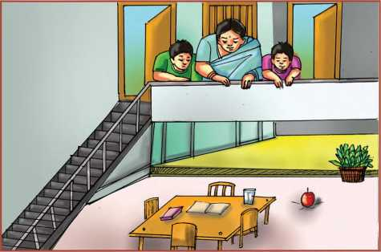
'Come on, Herman,' I said.
'I'll stay with mother,' he said. 'She's all excited.'
I stepped back onto the landing.
'Don't either of you go a step,' said mother. 'We'll call the police.' Since the phone was downstairs, I didn't see how we were going to call the police - nor did I want the police - but mother made one of her quick, incomparable decisions. She flung up a window of her bedroom which faced the bedroom windows of the house of a neighbour, picked up a shoe, and whammed it through a pane of glass across the narrow space that separated the two houses. Glass tinkled into the bedroom occupied by a retired engraver named Bodwell and his wife. Bodwell had been for some years in rather a bad way and was subject to mild 'attacks'. Almost everybody we knew or lived near had some kind of attacks.
c. What were the various sounds the brothers heard when they went downstairs?
d. Who were the narrator neighbours ?
It was now about two o'clock of a moonless night; clouds hung black and low. Bodwell was at the window in a minute, shouting frothing a little, shaking his fist. 'We'll sell the house and go back to Peoria,' we could hear Mrs. Bodwell saying. It was some time before mother 'got through' to Bodwell. 'Burglars!' she shouted. 'Burglars in the house!' Herman and I hadn't dared to tell her that it was not burglars but ghosts, for she was even more afraid of ghosts than of burglars. Bodwell at first thought that she meant there were burglars in his house, but finally he quieted down and called the police for us over an extension phone by his bed. After he had disappeared from the window, mother suddenly made as if to throw another shoe, not because there was further need of it but, as she later explained, because the thrill of heaving a shoe through a window glass had enormously taken her fancy. I prevented her.
The police were on hand in a commendably short time: a Ford sedan full of them, two on motorcycles, and a patrol wagon with about eight in it and a few reporters. They began banging at our front door. Flashlights shot streaks of gleam up and down the walls, across the yard, down the walk between our house and Bodwell's. 'Open up!' cried a hoarse voice. 'Were men from Headquarters!' I wanted to go down and let them in, since there they were, but mother wouldn't hear of it. 'You haven't a stitch on,' she pointed out. 'You'd catch your death.' I wound the towel around me again. Finally the cops put their shoulders to our big heavy front door with its thick bevelled glass and broke it in: I could hear a rending of wood and a splash of glass on the floor of the hall. Their lights played all over the livingroom and crisscrossed nervously in the dining-room, stabbed into hallways, shot up the front stairs and finally up the back. They caught me standing in my towel at the top. A heavy policeman bounded up the steps. 'Who are you?' he demanded. 'I live here,' I said.
Two questions are given from the lesson in box.
e) How did the Bodwells react, when a shoe was thrown into their house?
f) What did the Bodwells think when they heard the mother shout
The officer in charge reported to mother. 'No sign of nobody, lady,' he said. 'Musta got away - whatt'd he like?' 'There were two or three of them,' mother said, 'whooping and carrying on slamming doors.' 'Funny,' said the cop. 'All ya windows and door was locked on the inside tight as a tick.'
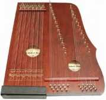
Downstairs, we could hear the tromping of the other police. Police were all over the place; doors were yanked open, drawers were yanked open, windows were shot up and pulled down, furniture fell with dull thumps. A half-dozen policemen emerged out of the darkness of the front hallway upstairs. They began to ransack the floor; pulled beds away from walls, tore clothes off hooks in the closets, pulled suitcase and boxes off shelves. One of them found an old zither that Roy had won in a pool tournament. 'Looky here, Joe,' he said, strumming it with a big paw. The cop named Joe took it and turned it over. 'What is it?' he asked me. 'It's an old zither our guinea pig used to sleep on,' I said. It was true that a pet guinea pig we once had would never sleep anywhere except on the zither, but I should never have said so. Joe and the other cop looked at me a long time. They put the zither back on a shelf.
'No sign o' nothing', said the cop who had first spoken to mother, 'The lady seems hysterical.' They all nodded, but said nothing; just looked at me. In the small silence we all heard a creaking in the attic. Grandfather was turning over in bed. 'What's that?' snapped Joe. Five or six cops sprang for the attic door before I could intervene or explain. I realized that it would be bad if they burst in on grandfather unannounced, or even announced. He was going through a phase in which he believed that General Meade's men, under steady hammering by Stonewall Jackson, were beginning to retreat and even desert.
When I got to the attic, things were pretty confused. Grandfather had evidently jumped to the conclusion that the police were deserters from Meade's army, trying to hide away in his attic. He bounded out of bed wearing a long flannel nightgown over long woolen pants, a nightcap, and a leather jacket around his chest. The cops must have realized at once that the indignant white-haired old man belonged to the house, but they had no chance to say so. 'Back, ye cowardly dog!' roared grandfather. 'Back t' the lines ye goodaam Lily-livered cattle!' With that, he fetched the officer who found the zither a flat - handed smack alongside his head that sent him sprawling. The others beat a retreat, but not enough; grandfather grabbed zither's gun from its holster and let fly. The report seemed to crack the rafters; smoke filled the attic. A cop cursed and shot his hand to his shoulder. Somehow, we all finally got downstairs again and locked the door against the old gentleman. He fired once or twice more in the darkness and then went back to bed. 'That was grandfather', I explained to Joe, out of breath. 'He thinks you're deserter.' 'I'll say he does,' said Joe.
g. What was the grandfather wearing?
h. What conclusions did grandfather jump to when he saw the cops?
The cops were reluctant to leave without getting their hand on somebody besides grandfather; the night had been distinctly a defeat for them. Furthermore, they obviously didn't like the 'layout'; something looked - and I can see their viewpoint - phony. They began to poke into things again. A reporter, a thin-faced, wispy man, came up to me. I had put on one of mother's dress, not being able to find anything else. The reporter looked at me with mingled suspicion and interest. 'Just what the hell is the real lowdown here, Bud?' he asked. I decided to be frank with him. 'We had ghosts,' I said. He gazed at me a long time as if I were a slot machine into which he had, without results, dropped a coin. Then he walked away. The cops followed him, the one grandfather shot holding his nowbandaged arm, cursing and blaspheming. 'I'm gonna get my gun back from that old bird,' said the zither-cop. 'Yeh,' said Joe, 'You - and who else?' I told them I would bring it to the station house the next day.
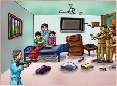
'What was the matter with that one policeman?' mother asked, after they had gone. 'Grandfather shot him,' I said. 'What for?' she demanded. I told her he was a deserter. 'Of all things!' said mother. 'He was such a nice-looking young man'.
'Grandfather was fresh as a daisy and full of jokes at breakfast next morning. We thought at first he had forgotten all about what had happened, but he hadn't. Over his third cup of coffee, he glared at Herman and me. 'What was the idee of all them cops tarryhootin' round the house last night?' he demanded. 'None of you bothered to leave a bottle of water beside my bed. Do you ever realize what it cost for a thirsty man to look for water in the dining room last night? he complained He had us there.
i. Were the policemen willing to leave the house?
j. What made the reporter gaze at the author?
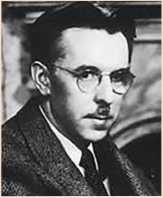
James Grover Thurber
(1894-1961) was an American cartoonist, author, humourist, journalist, playwright, and celebrated wit. He was best known for his cartoons and short stories published mainly in The New Yorker magazine, such as “The Catbird Seat”, and collected in his numerous books. He was one of the most popular humourists of his time, as he celebrated the comic frustrations and eccentricities of ordinary people.
hullabaloo (v) - lot of loud noise made by people who are excited.
patrolman(n) - a patrolling police officer. attic(n) - a space or room inside or partly inside the roof of a building slamming(v) - shutting a door or window forcefully and loudly.
gruffly(adv.) - sadly
intuitively (adv.) - without conscious reasoning, instinctively
whammed(v) - struck something forcefully
bevelled(v) - reduced to a slopping edge
rending(v) - tearing to pieces
yanked(v) - pulled with a jerk
zither(n) - a musical instrument
consisting of a flat wooden sound box with numerous strings stretched across it, placed horizontally and played with fingers
guinea pig(n) - a domesticated tailless South American rodent originally raised for food
hysterical(adj.) - affected by wildly uncontrolled emotion
creaking(v) - making a squeaking sound when being moved
indignant(adj.) - feeling or showing anger or annoyance at what is perceived as unfair treatment
holster(n) - a holder made of leather for carrying handgun
rafter(n) - a beam forming part of the internal framework of a roof deserter(n) - a person who leaves the armed force without permission.
A. Answer the following questions in a sentence or two.
1. Why was the narrator sorry to have paid attention to the footsteps?
2. Why did Herman and the author slam the doors?
3. What woke up the mother?
4. What do you understand by the mother's act of throwing the shoe?
5. Why do you think Mrs. Bodwell wanted to sell the house?
6. How did the cops manage to enter the locked house?
7. Why were the policeman prevented from entering grandfather's room?
8. Who used the zither and how?
9. Mention the things that the grandfather imagined.
B. Answer the following questions in about 100-150 words.
1. Describe the funny incident that caused the confusion in the house.
2. Narrate the extensive search operation
made by the policemen in the house.
DO YOU KNOW?
Box text begins.
George Maede was an Army officer who served during the American civil war. Stonewall Jackso was a Confederate General, who fought against Maede.
Box text ends.
Slang is a type of language consisting of words and phrases that are regarded as very informal and more common in speech than writing. They are typically restricted to a particular context or group of people.
C. Look at the following expressions from the text. With the help of your teacher rewrite them in standard English. One has been done for you.
A box item is given where they have to give plural forms.
1. 'Musta got away ― whatt'd he like? |
Must got away - what was he like?' |
2. 'Looky here, Joe |
|
3. 'No sign o' nothing' |
|
4. 'Back t' the lines ye goodaam' |
|
5. 'What was the idee of all them cops tarryhootin' round the house last night.' |
|
In this lesson, we find plural forms such as furniture, houses, windows, burglars, boxes, shelves, policemen. You may notice that these words have taken up different suffixes to form plurals. This is because English words have different origins.
D. Complete the given tabular column with the suitable plural forms.
chair - |
|
box - |
|
eskimo - |
|
lady - |
|
radius - |
|
formula - |
|
child - |
|
deer - |
|
loaf - |
|
hero - |
|
E. Listen to the story and answer the following.
1. The rich man was from....
a Nagaland
b Thailand
c Finland
2. Where did Chulong catch the bird?
3. Why did Chulong catch the bird?
4. What will happen to the bird in imprisonment?
5. What did the bird suggest Chulong, in exchange for its freedom?
6. Does Chulong want to earn money honestly?
7. What were Chulongs plans for the the bird?
8. Who is wise according to you?
9. Is the bird a crow?
10. What are the three rules given by the bird?
F. Quiz: Who am I?
Let us play this game in class
❖Who Am I? is a guessing game where players use 'yes' or 'no' questions to guess the identity of a famous person.
Questions are based upon the traits and characteristics of a person everyone will be able to identify.
❖Divide the class into groups. One group should decide the personality while the other group should ask 'yes' or 'no' type questions. To win the game, a team needs to find out the person within 10 clues.
Sample questions to ask. Answers must be 'yes' or 'no' only.
❖ Are you a male (female)?
❖ Are you a famous personality?
❖ Are you a singer (dancer, actor)?
❖ Are you a historical figure?
❖ Are you young (old)?
❖ Are you alive now?
❖ Does your name start with ' (dash)
❖ Is he/she (dash)?
G. Use this passage to play the game. You can collect information on other famous personalities and play too.
Charlie Chaplin was born on April 16, 1889, in London England. His birth name was Charles Spencer Chaplin, though he had many nicknames growing up such as Charlie, Charlot, and The Little Tramp. His father, Charles Chaplin, and his mother, Hannah Chaplin, were inducted into the music hall of fame, leading the way to his exposure even as a young boy. His first onstage moment was when he was 5 years old; he sang a song that was intended to be sung by his own mother; she had become ill at the
Listening text is on page 213
time of the performance, so little Charlie Chaplin stood instead and performed for his mother.
Charlie Chaplin came to the United States in 1910, at the age of 21. He was brought to New York, which was known to be a great place to start out for anyone trying to become a professional actor. Two years later, in 1913, Chaplin signed his very first contract at Keystone and it was no time before he headed to Hollywood. His first movie premiered in 1914, “Making a Living,” and went on to make over 35 movies total in that year alone. Charlie Chaplin grew to become one of the most popular and successful actors of all time. The moment that really kicked off his long career was in 1921 when he starred in, and produced, his first full length film called “The Kid.” From then on, most people all over the world knew Charlie Chaplin and loved his movies. He had a great career and life, dying on December 25, 1977, in Vevey, Switzerland. He had apparently died of natural causes in his sleep from old age.
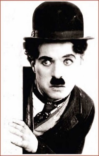
Read the following incident carefully to answer the questions that follow
The tie that does not bind
“Oh, so you're going abroad? Can you bring me back ?” I've been asked to bring back a vaccine for a course. Once I searched the suburbs of Paris for two days for a special brand of ceramic paint. Having spent a lot of money for Cartier lighter refills, I had them confiscated at the airport just before boarding because the gas might be dangerous in the air.
Now, two months before a trip, I stop talking to people so they won't suspect I'm about to travel. But someone always catches me.” I've heard you're going to New York, and I want you to get something for me. It's just a little thing you can find anywhere. I don't know exactly how much it costs, but it shouldn't be much. We'll settle up when you get back”.
What Gilson asked me to buy was, in fact a little thing: a tie. But not just any tie. He wanted a tie with a small embroidered G. Any colour would do, as long as it had his initial. Look , this is a special flight, I explained. We are only staying Saturday through Tuesday. On the day we arrived I didn't have time to think about the tie, but strolling around on Sunday I did see ties bearing various letters in more than one shop window. They were cheap, just a dollar, but all the shops were closed.
On Monday, lunch lasted the whole afternoon. Then it was Tuesday morning, time to leave. It was only when I saw our airport bus waiting outside the hotel that I remembered the tie.
I told the group to go on. I would get a taxi to the airport. And so I went in search of a nearby shop where I had seen ties.
But I couldn't find it. I walked further down the street-one, two, three blocks - all in vain. Back at the hotel, a bit anxious now, I took my suitcase, got a taxi and asked the driver to rush to the street where I had seen them.
The driver stopped at each shop we passed so I could look from the window. The stores had all sorts of ties, but not the kind I was looking for.
When I finally thought I had located the right shop, I decided to go in and check. The driver refused to wait. Parking was prohibited, he said. I promised to double the fare, jumped out and ran into the shop. Was I going to miss the plane just for a damned tie?
The salesman was unbearably slow. When I realized that the smallest change I had was a ten dollar note , I grabbed ten ties of different colours so I wouldn't have to wait for change. I rushed out with the ties in a paper bag.
On the street I looked around. The taxi had vanished, taking my suitcase. What is more, I was going to miss the plane.
I ran to the corner, and hope flared up again: the taxi was waiting in the next street. Quick to the airport! As I settled down inside the taxi. I sighed with relief. Gilson was going to have enough initialized ties to last him a lifetime.
When I reached the airport, I paid the taxi driver the double fare and grabbed my suitcase. Panting, I boarded the plane under the reproachful gaze of the other passengers, all primly seated with their seat belts fastened. Ready to take off. Departure had been delayed because of me.
“At least I hope you found your tie”, said one who knew the story.
“I did”, I answered triumphantly.
After making myself comfortable, I reached for the paper bag to show the ties.
I had left it behind; in the taxi.
Fernando Sabino.
H. Read the incident again and answer the following questions.
1. What was the writer always asked to do whenever he planned to go abroad?
2. What did Gilson want the writer to bring for him?
3. When did the writer remember the fact that he had to buy something for Mr. Gilson?
4. Why were the other passengers in the flight gazing at the writer?
5. What is the humour element in the above incident?
I. Suggesting titles:
Title summarises the story. Each paragraph is a part of the story. Look at the following expressions and find out the paragraphs that best suit these expressions.
1. Oh, No! But it happens!
2. Don't let out your travelling dates
3. Anyway, people will be people
4. Search begins
5. Things are not that easy
6. Hurry invites worry
J. Look at the following situations the writer was in. He could have avoided the situation and saved himself. Glance through the write up again and comment on what the writer should have done in the following situations.
❖ Gilson asked the writer to bring a tie.
❖ On the day of arrival, the writer had no time to think about the tie.
❖ The writer remembered about the tie when the bus was leaving for the airport.
❖ The writer walked down in search of the shop.
❖ The writer rushed out with the tie in a paper bag.
K. State whether the following statements are true or false.
1. The narrator searched for three days to buy ceramic paint.
2. The author was going to New York.
3. Gilson asked the narrator to buy a tie.
4. The taxi driver took away the narrator's suitcase.
5. Departure was delayed because of the author.
6. The author left the ties in the taxi.
How to Write a Good Speech
1. Have an inspiring OPENING and ENDING.
2. Appropriate(suitable)TONE of VOICE. (e.g.) sincere for a serious issue, humour for comedy etc
3. Adapt speech for PURPOSE and AUDIENCE. (e.g.) teenagers, mixed audience, teachers, children etc
4. Organise IDEAS logically and do not confuse the audience.
5. Use EMOTIVE language to CONVINCE your audience that what you are saying should be listened to.
(e.g.) Even if they put us in chains, torture us and leave us to bleed we will not move. Blood will be our victory!
6. Use RHETORICAL QUESTIONS - asking a question for persuasive effect with out expecting are play (because the answer is obvious) Eg: Was he not a good man? (knowing that the audience agree anyway)
7. Make sure you are writing in the CORRECT PERSON
(e.g.) I believe that... I knew him well...
8. Use interesting facts and figures (e.g.) 200000 people... with diagrams or charts to help your audience visualize it.
A box item on Do You Know is giving description on RHETORIC.
It is a way of public speaking which was taught in medieval universities.
DO YOU KNOW?
Box text begins.
RHETORIC is the art of using eloquence (grand, effective speech) for persuasive effect in public speaking.
It was taught in medieval universities and included techniques such as elaborate figures of speech (e.g. simile, metaphor), memorisation and delivery (how it was said). The Romantics said it was in sincere and far too grand. Today we use it to describe writing that PERSUADES the reader.
A table is given for a speech to be given for Literary Association.
The steps for speech is opening, purpose, audience, language, ending is Found in the table.
M. Write a speech for your school Literary Association celebration with the given lead.
1) Opening |
2) Purpose |
3) Audience |
4) Language - Some Good Describing Words (Adverbs And Adjectives), Emotive Words, Imagery etc. |
5) Ending |
A, An and The are called Articles.
We use a or an with singular nouns only.
(e.g.) A girl, An orange
We use a with singular nouns and adjectives which begin with a consonant sound.
(e.g.) A computer, A unit (yu+nit),A wonderful artist
We use an with singular nouns and adjectives which begin with a vowel sound.
(e.g.) An artist, An M.L.A. (em.el.a),An honest shopkeeper
NOTE
Words beginning with consonant letters do not always begin with consonant sounds.
Similarly words beginning with vowel letters do not always begin with vowel sounds.
(e.g.) Honour (sounds like - onour) European (sounds like yu-ropean)
We use the when a person, an animal, a plant, a place, a thing is mentioned for a second time.
(e.g.) I bought a book this morning. I am reading the book now.
We use the when it is clear to the listener or reader which person, animal, place, or thing we are referring to.
(e.g.) The judge found him not guilty.
We use the when there is only one such thing.
(e.g.) The earth goes round the sun.
We usually use the before ordinal numbers.
(e.g.) I live on the third floor.
We use the before some proper nouns such as :
(e.g.) The Indian Ocean, The Arabian Sea
We use the before names of most buildings, landmarks, monuments and natural wonders.
(e.g.) The Park Hotel, The Taj Mahal
We use the before names of places containing of
(e.g.) The Republic of China.
The names of places ending in plurals.
(e.g.) The Andaman and Nicobar Islands, The Netherlands.
Some proper nouns are not preceded by an article.
♦ the names of continents - Africa, Asia
♦ the names of countries - Belgium, India
♦ the names of towns and cities. - Tokyo, Chennai
♦ the names of streets - Ritchie Street.
Some nouns can be counted and they are called as countable nouns; some cannot be counted and they are called uncountable nouns.
We use a or an only before countable nouns.
(e.g.) A leaf fell off the tree. (countable)
Rain can cause flooding (uncountable)
We use the with uncountable nouns, when it is clear to the reader which things we are referring to. We do not use the with uncountable nouns when we are talking in general. (Uncountable nouns do not take the plural forms).
(e.g.) The rice in this super market is good. Rice is the staple food of Asians.
The word some can be used with both countable and uncountable nouns in the following ways.
(e.g.) I want some apples.
I want some papers.
Nagarajan and Dhanalakshmi want to buy a new house. They have come to see a house for sale. Complete the conversation below by adding a, an or the.
Nagarajan : Well, here we are, No.8, Kaveri Street. I think this is (dash) house we saw online. What do you think of (dash)location?
Dhanalakshmi : It is in (dash)nice neighbourhood. And it's close to the railway station.
Nagarajan : And (dash)bus stop is not too far away.
Dhanalakshmi : How many rooms are there?
Nagarajan : There are three rooms, (dash)kitchen and (dash)balcony.
Dhanalakshmi : There is (dash)lawn behind (dash)house, right?
Nagarajan : That's right (dash)lawn is actually quite large. Did you see any photos of (dash)living room, online? What does it look like?
Dhanalakshmi : (dash)living room looks great. It looks bright and airy. It has (dash)nice view of (dash)hills. But (dash)kitchen looks (dash)little small.
Nagarajan : And, I remember you said there isn't (dash)store room, right?
Dhanalakshmi : No, but there is (dash)attic, where we can store things.
Nagarajan : I hope this house is (dash)better option.
Dhanalakshmi : Lets wait for (dash)real estate agent. She said, she would be here at three o'clock.
Nagarajan : Look there she is!
Few articles are missing in the given passage. Edit the passage given below by adding suitable articles where ever necessary.
My neighbourhood is very interesting place. My house is located in apartment building downtown near many stores and offices. There is small supermarket across street, where my family likes to go shopping. There is also post office and bank near our home. In our neighbourhood there is small, Green Park where my friends and I like to play on weekends and holidays. There is small pond near park and there are many ducks in park. We always have great time. In addition there is elementary school close to our home where my little brother studies in third grade. There are so many things to see and do in my neighbourhood that's why I like it. It's really great place.
These prepositions are formed by two-word or a three-word combination such as according to, along with, at the time of, because of, owing to, instead of etc. These kinds of prepositions are used frequently in our day to day life.
A table for using prepositional phrase is given in 3 columns with preposition ,meaning ,usage example .According to ,Along to ,Because of, instead of, owing to.
Examples
Table begins.
Preposition |
Meaning |
Example |
according to |
as stated by, on the authority of |
According to the weatherman, we can expect more cold weather this week. |
along with |
together with |
We have to give importance to Physical Education along with all the academic subjects. |
because of |
on account of |
We stayed at home because of the bad weather. |
owing to |
because of |
I can't accept your invitation owing to a previous engagement. |
instead of |
in place of, substituting for |
I wish I were going to the party instead of my brother. |
in the event of |
in case of |
The match will be stopped in the event of heavy rain. |
Table ends.
A table is found with 2 columns where the students have to match the prepositions and their meanings by using a dictionary.Eg;Due to,Except for,Inspite of,in place of.
Table begins.
Preposition |
Meaning |
due to |
as a substitute for |
except for |
in the interest of |
with reference to |
irrespective of |
in spite of |
added to |
in addition to |
because of |
in place of |
referring to |
regardless of |
with the exception of |
for the sake of |
disregarding the difficulty |
D. Fill in the blanks by choosing the most appropriate prepositional phrase from the given options.
1. Everything falls to the ground (dash)earth's gravitational pull.
a. in addition to b. because of c. cause of
2. The trial was conducted (dash)the procedure of law.
a. in accordance with b. due to c. despite of
3. There is a temple right (dash)my house.
a. in back of
b. apart from
c. in front of
4. As a (dash)of his hard work, he achieved the target.
a. instead of
b. result of
c. apart from
5. Failure is often the (dash)negligence.
a. effect of
b. consequence of
c. reason of
6. Children are given toys (dash)sweets on Children's day.
a. on top of
b. in addition to
c. due to
7. The parents must be informed (dash)any indiscipline conduct of their wards.
a. because of
b. in case of
c. in spite of
8. He didn't turn up (dash)his busy schedule.
a. consequence of
b. due to
c. except for
9. Global warming is (dash)the green house emission.
a. an effect of
b. in spite of
c. in addition to
10. (dash)several warnings, he continued to swim.
a. due to
b. in spite of
c. because of
E. Edit the following passage by replacing the underlined incorrect words with correct prepositional phrases.
Janu is studying in class X. In the event of the teachers (dash)she is a disciplined student. In addition to poverty, she (dash)is always neat. Many students like her in case of (dash)her simplicity. According to her studies, she also (dash)participates in sports. She gets on with everyone in case of (dash)age and gender in the school. In opposition to taking leave, she ensures (dash)that she completes the work given before she goes to school next day.
Lucy Maud Montgomery
The poet gives a vivid picture of neighbourhood scenes. Read to know how we should mend our ways.
There's a family nobody likes to meet;
They live, it is said, on Complaining Street
In the city of Never-Are-Satisfied,
The River of Discontent beside.
They growl at that and they growl at this;
Whatever comes, there is something amiss;
And whether their station be high or humble,
They are all known by the name of Grumble.
The weather is always too hot or cold;
Summer and winter alike they scold.
Nothing goes right with the folks you meet
Down on that gloomy Complaining Street.
They growl at the rain and they growl at the sun;
In fact, their growling is never done.
And if everything pleased them, there isn't a doubt
They'd growl that they'd nothing to grumble about!
But the queerest thing is that not one of the same
Can be brought to acknowledge his family name;
For never a Grumbler will own that he
Is connected with it at all, you see.
The worst thing is that if anyone stays
Among them too long, he will learn their ways;
And before he dreams of the terrible jumble
He's adopted into the family of Grumble.
And so it were wisest to keep our feet
From wandering into Complaining Street;
And never to growl, whatever we do,
Lest we be mistaken for Grumblers, too.
Let us learn to walk with a smile and a song,
No matter if things do sometimes go wrong;
And then, be our station high or humble,
We'll never belong to the family of Grumble!
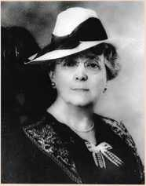
BOX TEXT BEGINS
L. M. Montgomery, (1874-1942) was a Canadian author best known for a series of novels beginning in 1908 with Anne of Green Gables. Montgomery went on to publish 20 novels as well as 530 short stories, 500 poems, and 30 essays. A prolific writer, Montgomery published over 100 stories between 1897 and 1907. Montgomery's work, diaries and letters have been read and studied by scholars and readers worldwide.
BOX TEXT ENDS.
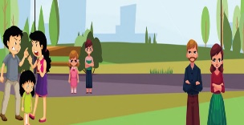
discontent (adj.) - dissatisfaction with one's circumstances
amiss (adj.) - not quite right
growl (v) - make a low guttural sound in the throat
grumble (n) - a complaint about something in a bad-tempered way
gloomy (adj.) - to appear depressing or frightening
queerest (adj.) - the strangest or the most unusual
acknowledge - accept or admit the existence or truth of
terrible (adj.) - extremely bad or serious
wandering (v) - walking or moving in a leisurely or aimless way
A. Read the following lines from the poem and answer the questions given below.
1. There's a family nobody likes to meet;
They live, it is said, on Complaining Street
a. Where does the family live?
b. Why do you think the street is named as 'Complaining Street'?
2. They growl at that and they growl at this;
Whatever comes, there is something amiss;
a. What does the word 'growl' mean here?
b. Why do they find everything amiss?
3.Nothing goes right with the folks you meet
Down on that gloomy Complaining Street.
a. What is the opinion about the folks you meet down the street?
b. What does the word 'gloomy' mean here?
4. The worst thing is that if anyone stays
Among them too long, he will learn their ways;
a. What is the worst thing that can happen if anyone stays with them?
b. What are the ways of the Grumble family?
5. And so it were wisest to keep our feet
From wandering into Complaining Street;
a. What is the wisest thing that the poet suggests?
b. What does the phrase 'to keep our feet from wandering' refer to?
6. Let us learn to walk with a smile and a song,
No matter if things do sometimes go wrong;
a. What does the poet expect everyone to learn?
b. What should we do when things go wrong sometimes?
B. Answer the following question in about 80-120 words.
1. Write a paragraph on 'The Grumble Family' and their attitude towards other folks.
2. If you were to live in the Complaining Street, how would you deal with the people who grumble?
3. From the poem 'The Grumble Family' what kind of behaviour does the poet want the readers to possess?
An anaphora is a technique where several phrases (or verses in a poem) begin with the same word or words.
e.g. They growl at the rain and they growl at the sun;
An epithet is an adjective or phrase expressing a quality or attribute regarded as characteristic of the person or the thing mentioned.
e.g. grumble family
complaining street
C. Answer the following:
1. And whether their station be high or humble,...
Pick out the alliteration from the above line.
2. Pick out the other examples for alliteration from the poem.
3. The weather is always too hot or cold;
Summer and winter alike they scold.
Nothing goes right with the folks you meet
Down on that gloomy Complaining Street.
Pick out the rhyming words and identify the rhyme scheme of the above lines.
The English language is quite odd.
It must've been a different sort of sod,
Who thought this mess all out.
He really didn't know what talking was all about!
After all more than one mouse is mice,
But on my block we have houses not hice!
A goose can fly with a bunch of geese,
But in Canada I have not seen a herd of meese.
One man and a male friend make men,
Then you know as well as I that pan ain't ever pen.
I put a foot down and stand on both feet,
But I wear some boots and definitely not beet!
I pull a tooth and have a gap in my teeth,
But at the fair they have booths not beeth.
This is one and two or more are these,
And I get one kiss but I don't get several kese!
How about a brother or a group of brethren?
Where as a lovely mother won't meet methren.
Then there's pronouns he, his, and him,
But you shan't say she, shis, and shim!
As you know it's tough with words like bough,
Whooping cough, and cookie dough,
And another thing you can start to hate,
Is how people take boats straight down the strait!
And why doesn't nose sound like lose?
Why, tell me, is it goose and moose, then choose?
I still haven't got a single, solitary clue,
And they tell me I've been talking since two!
- Adam Schmidt
Asha Nehemiah
The family that shelters a new pet is totally taken up by the commotions it creates at home. Read on the story to find out there is a turn of events when the get to know the reality
Dr. Ashok T. Krishnan's clinic usually sounded more like an ancient Chinese torture chamber than a child specialist's clinic. This was because the tiny children who were his patients left out a variety of blood -curdling yells and ear-splitting sobs.
'It's all because my patients were making so much noise and crying so loudly, he apologized to his wife one evening, 'that Somu couldn't hear me properly. He rang me in the clinic to ask whether we could keep zigzag with us when he leaves for Alaska. And now Somu thinks I said “yes”, even though I clearly said “no” ! I know you are busy getting your painting ready for your exhibition next w...'
'Zigzag!' interrupted their nine-yearold daughter Maya.
Isn't that Uncle Somu's prized giant green-and -gold fighting beetle. The one that spits deadly poison straight into its opponent's eye?'
'No , no,' corrected her older brother Arvind, eyes shining in pure delight. 'The beetle is called Spitfire. Zigzag must be Uncle Somu's pet snake. The African sidewinder! You know, the one that slithers zigzag all over his house!'
'You're both quite mistaken,' their father hastened to explain, seeing his wife's horrified expression. 'Zigzag is a most harmless, unusual and lovable bird. Apparently, it was bred by a genuine African witch doctor, who gifted it to Somu when he ......... being a child specialist like
me ....... cured the witch doctor's son
while he was touring the deepest jungles of equatorial Africa last month. Somu says the bird is an absolute treasure and a real help. It's his favourite pet, you know'.
Somu might be your best friend, but most of these so called “favourite” possessions that he has given us were absolute nuisances!' countered Mrs. Krishnan angrily. A talented artist, she applied a dab of yellow-ochre paint onto her painting titled Sunset at Marina, paused for a moment to survey the effect and then continued, 'Remember the rare insect-eating plant he brought back from the wettest corner of the Amazonian rainforest! He insisted that we keep it because it would eat the mosquitoes in the house and now that wretched plant requires a room heater to keep it alive in Chennai!'
'Ma!' protested Arvind, 'That's not really true. Uncle Somu's given us some really fabulous gifts.'
'Right! Remember the tiny penknife he gave me last year, the one with a genuine shark's tooth blade. That's been really useful,' Maya joined the protest.
'No one but you, Maya,' Mrs.Krishnan told her daughter sternly,'would describe a penknife that has cut open the pockets of three skirts and two pairs of jeans as really useful.'
'And what about the aboriginal boomerang Uncle Somu brought us all the way from Australia?' demanded Arvind. 'You can't deny that it was a great hit with everyone.'
'Great hit indeed!' Mrs.Krishnan didn't bother to hide her sarcasm and continued, 'Considering that the boomerang sliced through all the TV aerials in the neighbourhood, caused permanent damage to several cars in the parking lot, and knocked out our watchman cold, with the force you threw it.'
'But Zigzag is different. Somu says we are sure to love Zigzag,' soothed Dr.Krishnan, 'because the bird can talk and sing in about twenty-one different language - mostly African languages, of course. When it sings, it moves the listeners to tears.'
'It's Somu's thoughtless ways that reduce me to tears!' Mrs.Krishnan said irritably. 'What a time to dump this multilingual, talking-singing bird on us. Here I'm tied up in knots trying to get my paintings together for the exhibition next week.'
'May I take Zigzag to school, Papa?' Arvind, as always, was planning ahead. 'I want to display him in the science exhibition.'
'When is Zigzag coming, Papa?' Maya was jumping up and down, all excited.
'Uncle Somu said he would send Zigzag with his old cook, Visu, sometime today. I'll have to leave for my clinic now. There,' he added as the doorbell rang, 'that's probably them!'
And indeed it was!
'Come in, Zigzag, come in, dear! coazed Visu, and in tottered the strangest, weirdest-looking bird the Krishnan family had ever seen.
About a foot and a half tall, its bald head was fringed with a crown of shocking pink feathers while the rest of its plumage was in various shades of the muddiest sludgiest brown. Its curved beak was sunflower-yellow and its eyes were the colour of cola held to sunlight.
'This is Zigzag! Announced Visu with a flourish. 'His full name is Ziggy-Zagga-king-of-the-Tonga. How I'm going to miss him! So beautifully he talks! He can even recite French Poetry!'
The object of all this praise was standing cool and unmoved, with an expression of almost-human grumpiness in his cola-coloured eyes.
Arvind, finding that Zigzag was sulkily refusing to say a word despite all their efforts at striking a conversation, dashed into the kitchen to return with a plate heaped hurriedly with juicy fruit slices and some nuts.
Bored eyes brightened momentarily as Zigzag picked up a walnut. But refusing to speak, he dropped one wrinkled eyelid in a solemn wink and flew clumsily to deposit the nut on the enormous chandelier hanging from the ceiling. Bit by bit, and in total silence, all the fruit on the plate was transferred to the chandelier and on to the blades of the ceiling fan (now switched off).
Then perching comfortably on a curtain rod, Zigzag dropped one wizened eyelid in another solemn wink as he sank his beak into a plump guava.
'Don't worry, children,' Visu comforted as he left, noticing how disappointed they looked when Zig zag stubbornly refused to say a single word to them even though they tried speaking to him in English, Hindi, Tamil and French. 'Just wait till Zigzag settles down in this new home, they you can have a great time listening to him.'
As it happened, the children didn't have to wait more than ten minutes to have a great time listening to Zigzag. For as soon as Visu left, Zigzag, still perched on the curtain rod, went off to sleep. And the moment he fell asleep, he began to SNORE!
And what a snore it was Kngrrwheeze!!! It began as a soft grumbly sort of rumble, much like that which the stomach of a mildly hungry dinosaur might have made. Then it grew louder, and louder, and LOUDER until it sounded as if a herd of elephants with cold was trumpeting angrily in the room. KNGRRDRRWHEEZE!!!
Zigzag's snore pounded their eardrums till their heads ached.
In vain did they try to wake the snoring bird. 'Twenty-one languages, he's supposed to know!' snorted Mrs.Krishnan. 'Yet this bird chooses to communicate only in snorish, snorese, snorian, snorihili, snoralu...'
'I thought it was scientific fact that birds couldn't snore,' said Maya, trying to squirt water from a small water pistol at Zigzag to wake him and wetting most of the curtains, the walls and a sofa instead.
'African witch doctor's birds don't obey scientific rules.' Arvind was annoyed that his best imitations of a raging lion, a hungry hyena and a ferocious dog had failed to draw Zigzag out of his deep slumber. Now he tried his loudest, most frightening coyote call.
But Zigzag slept on undisturbed. And snored on.
In total despair at their failure to wake Zigzag, or at least stop him snoring, they shut themselves in the bedroom that was furthest away from Mrs.Krishnan's studio where Zigzag was creating the terrible din. Mrs.Krishnan was just unraveling a roll of cotton wool to stuff in her ears, when they heard their maid, Lakshmi, shrieking as if she had been electrocuted.
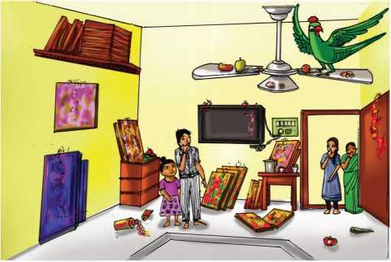
Hearts hammering, they rushed to the studio to find Lakshmi dancing and clapping her hands excitedly as she yelled, 'We' ve been blessed! We've been truly blessed! It's raining papayas and bananas in this room!'
They froze in horror. Lakshmi had apparently switched on the fan on which Zigzag had left some fruit and nuts. Half-pecked fruit streamed off the fan, dampening even Lakshmi's enthusiasm as a guava landed on her cheek with a soft squish and one walnut hit her forehead with a loud smack. One slice of overripe papaya came whizzing off the fan and, as they watched it helplessly, it oh horrors splattered all over Mrs.Krishnan's unfinished masterpiece, sunset at Marina, spreading streaks of gooey orange pulp and shiny black seeds all over it.
Mrs. Krishnan groaned tragically and looked ready to shoot Zigzag, but he was saved by the bell. The telephone bell! They answered one call after another as all the neighbours rang upto demand what the awful kngrrwheeze… sound was and if they could please have some peace.
And through all this commotion, Zigzag slept on unconcerned. And snored on.
Finally, an exhausted Mrs. Krishnan rang up her husband. I'am going crazy with the sound of Zigzag snoring, plus all these angry telephone calls. And my beautiful painting...' Here her voice cracked. 'You know Mrs.Jhunjhunwala, the art critic who lives upstairs, well, she heard Zigzag snoring and had the cheek to telephone and ask me whether I could sing a little softly when I took my singing lessons. Please contact Somu and find out what we should do.'
Dr.Krishnan came home as fast as he could after he had left an e-mail message for Somu, asking him for clear instructions on how to stop Zigzag from snoring.'
'Don't worry,' he reassured his downcast family. 'Somu will reply soon and we'll discover there's some ridiculously simple way to stop Zigzag from snoring.
Six days passed. Six frantic days of checking their e-mail day and night. Six torturous days of having the deafeningly loud KNGRRDRRWHEEZE resound in their home, most nerve wrackingly. Maya complained that she heard a permanent rumbling sound in her ears even when she was miles away from home and that her ears ached all the time. Arvind confessed that, for the first time in his life, he was actually looking forward to going to school considering it was as calm as a monastery compared to their house. Mrs. Krishnan had lost interest in painting. Zigzag would sometimes wake up briefly when he wanted to eat some fruit, and sometimes he would sit on the veranda looking sulky and bored as he stared at the sunset at Marina beach- the real view, not the painting lying forlorn in one corner, ruined by streaks of hardening papaya. Zigzag never spoke to anyone, though everyone tried several times, and in several languages, to speak to him kindly. He only slept. And snored.
On the seventh day, Dr.Somu's e-mail arrived. It was, as Dr.Krishnan predicted, ridiculously simple. It read:
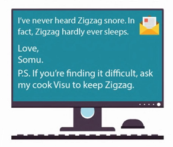
I never heard Zigzag snore . In fact Zigzag hardly ever sleeps.
Love,
Somu.
P.S if you‘re finding a difficult ,ask my cook Visu to keeps Zigzag
does it,'said Mrs. Krishnan. 'Find Visu! I will not keep Zigzag here another minute!'
'Calm down, dear, I'm leaving for my clinic now. Can't it wait till...'
'No, it's now!' Mrs.Krishnan was adamant. 'I've invited some friends and are experts to come home and choose my paintings for the exhibition. This feathered, snoring monster will drive us all mad!'
'Come on then, Zigzag,' called Dr.Krishnan nervously, wondering how he would locate Somu's cook, Visu.
'Er, why don't you wait in the car, Zigzag?' he suggested. When they reached his clinic, his heart sinking at the thought of Zigzag's ear-shatteringly loud snore adding to the din of the sobs and shrieks produced by the tiny patients waiting for him.
But Ziggy-Zagga-King-of-the-Tonga was not accustomed to being kept waiting and was already making his way to the clinic where he perched himself on the nurse's reception table.
'Don't you dare sleep!' Dr.Krishnan warned Zigzag fiercely as he went towards his room.
He had hardly walked through the swinging half-door that separated his clinic from the waiting room when he heard a strange voice say, 'You there in the blue T-shirt, don't jump on the sofa. And you in the red dress, don't swing on the curtain.'
It was Zigzag's voice, clear and commanding. There was pin-drop silence in the room as everyone waited, openmouthed, for Zigzag's next sentence.
Dr.Krishnan was amazed! Gone was Zigzag's bored and grumpy expression. Instead the bird looked happy and alert as it went about the job it had been trained for, first with the African witch doctor and then with Dr.Somu. Dr.Krishnan's clinic, usually a noisy sea of tears and tantrums, was transformed into a calm, orderly place as Zigzag efficiently soothed the frightened patients, scolded the naughty ones and made the crying ones smile. And if his yam-digging song and recitation of French poetry reduced the children to helpless laughter instead of tears, he didn't look as though he minded. And best of all, Zigzag never slept. Or snored. Even for a second!
Never had a morning passed so quietly and peacefully for Dr.Krishnan. When the last patient had left, he called Zigzag to his room. Zigzag flew in and sat on the table. Scratching the bird under its beak, Dr.Krishnan sighed and said, 'Somu was right, after all. You are an absolute treasure. I never realized what he meant when he called you a great help. Why didn't you tell me you'd prefer to be at my clinic instead of snoring like that to show you were bored? What do we do now? No one wants you back at home now; they want me to leave you with Visu.'
Just then the telephone rang. It was Mrs.Krishnan, sounding very pleased with herself. 'You know Mrs.Jhunjhunwula, the art critic?' she chuckled. 'She doesn't want me to exhibit sunset at marina. She's bought it for herself, for Rupee 5,000!'
Isn't that the painting the papaya fell on ?
'Yes.' Mrs.Krishnan was laughing heartily now. I had left it in one corner and she chose to buy it, saying she loved my new technique of painting! She simply adored those streaky orangey bits! She launched into fresh gales of laughter. 'By the way,' she said when she sobered down, 'I don't think we were fair to Zigzag. Shall we keep him with us at home, just on trial for another week?'
'Sure!', agreed a delighted Dr.Krishnan before he cleverly added. 'And I could always take him to the clinic every morning so that you can paint in peace at home.'
'My boy!' he confided to Zigzag after matters were satisfactorily settled, giving the bird a toffee from his desk. 'You have your own strange way of showing your genius. A Zigzag way, I'd call it, wouldn't you?'
But Ziggy - Zagga - King - of - the - Tonga, brought up on compliments as he was, didn't bother to reply. He just ate the toffee, paper wrapper and all, and then lowered one crinkly eyelid in a knowing wink.
![Picture, A photo of the author Asha Nehemi is given.She was born in Chennai.Very interested in writing humour,fantasy,mystery,adventure is found in her stories. Asha Nehemiah born in 1958 at Chennai has lived, studied and worked in 8 different cities and small towns and is now a resident of Bangalore. She has always been interested in writing.Her love for reading , led her to study Literature in college. If she had not been a writer, she would have been a teacher. Humour, fantasy mystery and adventure are the strong elements in her work. She loves baking, walking, reading and travelling.](images/image-25.jpeg)
BOX TEXT BEGINS.
Asha Nehemiah born in 1958 at Chennai has lived , studied and worked in 8 different cities and small towns and is now a resident of Bangalore . she has always been interested in writing . her love for reading ,led her to study literature in college . if she has not been a writer, she would have been a teacher .Humour, Fantasy , mystery and adventure are the strong elements in her work . se loves baking, walking, reading, and travelling
BOX TEXT ENDS.
aboriginal (adj.) - native, local
sarcasm (n) - use of irony to mock or convey contempt
fringed (v) - bordered
plumage (n) - a bird's feather collectively
sludgiest (adj.) - wet mud
grumpiness (adj.) - bad tempered
squirt (n) - spray
coyote (n) - a wolf like wild dog native to North America.
streaks (n) - line, strap.
tantrum (n) - outburst, flare-up.
crinkly (adj.) - wrinkly.
A. Identify the speaker / character.
1. 'Even though I clearly said no!'
2. 'The one that spits deadly poison straight into its opponent's eyes.'
3. 'Remember the tiny penknife he gave me last year'.
4. 'It's Somu's thoughtless ways that reduce me to tears'
5. 'Come in, Zigzag, come in dear!'
B. Read the story again and write how these characters reacted in these situations:
1. You're both quite mistaken.
Dr. Krishnan (dash)
Mrs. Krishnan (dash)
2. It's Somu's thoughtless ways that reduce me to tears.
Mrs. Krishnan (dash)
Dr. Krishnan (dash)
3. Just wait till zigzag settles down in this new home.
Visu (dash)
Aravind and Maya (dash)
4. Zigzag hardly never sleeps.
Somu (dash)
Dr.Krishnan (dash)
5. You are an absolute treasure (dash)
Dr.Krishnan (dash)
Zigzag (dash)
Exercise :C complete the tabular column is given below. It has 4 columns with arrival of ZigZag, ZIgZag life at Dr.Krishnans residence are given The students have to give responses of other characters.
Arrival of Zigzag |
Somu requested Dr. Krishnan to take care of his pet. |
Mrs.Krishnan was not (dash) |
She was worried about her (dash) |
Life of Zigzag at Dr. Krishnan's residence |
Zigzag perched on the curtain rod and (dash) |
When their maid switched on the fan (dash) |
Mrs. Krishnan was annoyed and called Mr. Krishnan to (dash) |
The email about Zigzag |
Dr. Krishnan |
Somu's reply surprised the Krishnans. |
The reply was (dash) |
Zigzag at the clinic |
When Zigzag entered the clinic he (dash) |
Gone was Zigzag's bored and grumpy (dash)expression. The bird looked happy and alert. |
After the family knew that zigzag must be kept busy they (dash) |
D. Answer the following question in one or two sentences:
1. Why did Dr. Ashok's cousin call him?
2. Mention atleast two expressions which shows that Mrs. Krishnan was not willing to have Zigzag at home?
3. What pets did Somu have?
4. What was Mrs.Krishnan busy with?
5. What commotion did the boomerang cause in the neighborhood?
6. What happened when Somu left Zigzag with the Krishnans?
7. How did Zigzag communicate with the Krishnans?
8. What was the e-mail message sent to Somu by Dr.Krishnan?
9. What did Aravind confess?
10. Why did Mrs. Jhunjhunwalla buy the painting?
E. Answer the following questions in about 100 - 150 words:
1. Write in your own words the various commotions caused by zigzag at Dr. Krishnan's residence.
2. What happened when Zigzag was taken to the clinic.
3. Narrate the story Zigzag in a own words.
where students can scan ,browse the QR code,learn the usage of prepositional phrases.
❖ To learn the usage of prepositional phrases
❖ To practise prepositional phrases
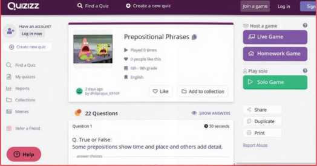
Steps
1. Type the URL link given below in the browser or scan the QR code.
2. Select solo , live or homework game.
3. Click Start Game then read the questions and select the correct option.
4. This Quiz can be played in teams or used as homework game.
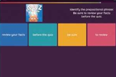
Download Link
Click the following link or scan the QR code to access the website. https://https://quizizz.com/admin/quiz/5c6d6beda26635001acac238/ prepositional-phrases
** Images are indicatives only.
Read the statements given below and match the issues accordingly.
1. The marriage of a young girl below 18.
2. A transfer of durable goods / property that the bride's family gives to the bridegroom as a condition of the marriage.
3. The intentional killing of a baby girl due to the preference for male babies in the family.
4. Repeated and unwelcome sexual comments, looks, or physical contact at work place made by men that could offend women.
5. A women deciding to remarry despite opposition from relatives /society.
6. Women excelling in many fields overcoming many hurdles.
SOME statements are given and it has to be matched with the issues.
1] The marriage age of a young girl below 18.
2) Atransfer of durable goods/property that the bride’s family gives to the bridegroom as a condition of the marriage.
3) The intentional killing of a baby girl due to the preference for male babies in the family.
4) Repeated and unwelcome sexual comments, looks, or physical contact at work place made by men that could offend women.
5) A woman deciding to remarry despite opposition from relatives/society.
6) Women excelling in many fields overcoming many hurdles.
The statements like this should be matched with issues such as dowry system, sexual harassement, child marriage, remarriage, female infanticides, Women Empowerment.
Table begins.
Dowry System |
Sexual Harrassment |
Child Marriage |
Remarriage |
Female Infanticide |
Women Empowerment |
|
|
|
|
|
|
Table ends
❖ Discuss with your friend the role of a women in building a family. What are the roles played by her.
❖ What do you think of the status of women in the modern society.
❖ Compare the status of women in the past with the present.
❖ What is the role of women in the modern society discuss.
❖ Divide the class into small groups, choose any one eminent women personality of the world. List out her characters, achievements, etc and speak a minute about her
Photos of mother Teresa, Malala, Indra nooyi, rowling, aung san suki are given .
The students have to speak about these personalities For one minute.
Gone are the days, where women in India remained indoors unless permitted to go out with an escort. Conditions today have changed, thanks to all those women who have fought for their freedom and set a very good example for others. The real power of women though realized earlier, is currently being projected to the world by the advancement of technology and media.
Women occupy almost all the major positions in society. Currently, women's accomplishments are tremendous in many fields. One such achievement is the All-women Indian Navy crew who circumnavigated the world for 254 days all alone, in a sailboat called INSV Tarini.
What is INSV Tarini?
INSV stands for Indian Naval Ship Vessel. Tara-Tarini is the patron deity for sailors and is worshipped for safety and success at sea.
INSV Tarini is the second sailboat of the Indian Navy (The first being the INSV Mhadei). It is a 55 foot sailing vessel built indigenously in India by M/s Aquarius Shipyard Pvt. Ltd, located in Goa. After undergoing extensive sea trials, she was commissioned to the Indian Navy service on 18 February 2017. The boat was named after the famous 'Tara-Tarini' temple in Ganjam district of Odisha. The word 'Tarini' means 'boat' and in Sanskrit it means 'Saviour'.
INSV Tarini has advance Raymarine navigation suite and an array of satellite communication systems for perfect navigation anywhere in world.
a. What does INSV stand for?
b. When was INSV Tarini commissioned to Indian Navy service?
c. Who is Tara-Tarini? After whom was the sailboat named?
Navika Sagar Parikrama was a project undertaken in consonance with the National policy to empower women to attain their full potential. “The Project is considered essential towards promoting ocean sailing activities in the Navy while depicting Government of India's thrust for Nari Shakti (women power),” said Chief of the Naval Staff, Admiral Sunil Lanba in his welcome speech.
The voyage was aimed to show case 'Make in India' initiative by sailing onboard indigenously built INSV Tarini. The special feature of this sailboat is that it encouraged use of environment friendly non-conventional renewable energy resources such as the wind; collected and updated meteorological, ocean and wave data on regular basis for accurate weather forecast by India Meteorological Department (IMD) and also collected data for monitoring marine pollution on high seas.
Indian Navy's Six Women Crew
Indian Navy's all-women crew was the first-ever to circumnavigate the globe skippered by Lt. Commander Vartika Joshi. The all-women team has also Lt. Cdr. Pratibh Jamwal, Lt. Cdr. Swathi Patarapalli, Lt. Aishwarya Boddapati, Lt. Sh. Vijaya Devi and Lt. Payal Gupta as its crew members.
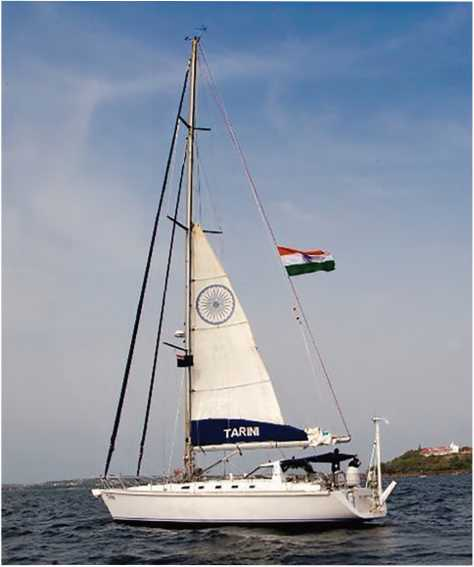
The crew started their voyage on 10 September 2017 from Goa, flagged off by the Defence Minister of India. It was a historic day, which would be marked in navigation history and globally. It covered the expedition in five legs with stopovers at four ports (Fremantle, Australia; Lyttleton, New Zealand; Port Stanley, the Falklands and Cape Town, South Africa) for replenishment of ration and repair as necessary, before returning to Goa in April 2018. They went around the globe within 254-days and reached Goa port on 21 May 2018. The six member women crew broke many stereotypes during their record-setting sail.
The first Indian circumnavigation was undertaken by Capt.Dhilip Dnde ,SC(Retd)is given in a box item,Do you know?
DO YOU KNOW
The first Indian solo
circumnavigation was undertaken by
Capt. Dilip Donde, (Retd.) from
August 19, 2009 to May 19, 2010 on board another India-built vessel INSV
Mhadei.
The first Indian non-stop solo circumnavigation was undertaken by Cdr. Abhilash Tomy, K.C. from November 1, 2012 to March 31, 2013.
An Interview with the crew members
India's all-women navy crew who went around the world in 254-days have shared their experiences about their great voyage in an interview. Through their personal experiences, we really come to know their hardships and unpredictable challenges they have faced all through their expeditions.
Interviewer: How well were you acquainted with the sail boat before you took up the task?
Vartika Joshi: None of us was acquainted with a sail boat or ocean-going boat; none of us had sailed before, nor are woman officers allowed entry in combat platforms as yet. At first, it was difficult to take the boat out to sea, from one point to another. But we slowly built upon it through three years of training.
Interviewer: Can you tell us about the training you had undergone before this expedition?
Vartika Joshi: We started with some theoretical courses on navigation, communication and weather prediction. Classroom courses are different from sailing outside. So, we were given handson training, like, how to repair things and how to deal with emergencies, when the weather gets rough, if there is a medical emergency, and training was needed in tactical aspects as well.
Aishwarya: We underwent our basic sail training courses in Mumbai at the Indian Naval Waterman ship Training Centre (INWTC), and at various schools in the southern naval base in Kochi. We even sailed on INSV Mhadei to Mauritius (in 2016 and 2017) and back and also to Cape Town in December 2016. We were trained for almost three years to prepare for the voyage. Since the boat was old, it had minor leaks and repairs. Also, we ran out of water and food soon. So the trip was a tutorial for us on how to manage food, water and even electricity during the big voyage.
Interviewer: What was the selection process?
Aishwarya: Out of the thirty women who had applied, six of us were shortlisted, based on the little survival skills we showcased. The crew was mentored by Commander Dilip Donde. But after I was told about the flare-ups at sea, I even had second thoughts about joining the team.
Interviewer: How did your family members react when you told them about this expedition?
Vartika Joshi: Our families did have a hard time, but that was because most of them had never even seen the sea! Four of us are from the mountains. The first time my parents saw the ocean was when I invited them to visit. But once they saw that were doing well and looking after ourselves, they were quite supportive. They were apprehensive and supportive too.
d. Where did the crew undergo their basic training?
e. How long were they trained to undertake this voyage?
f. Which skill was considered important in the selection process?
g. Who mentored the crew?
Interviewer: What were your aims and how did you work to achieve them?
Vartika Joshoi: I wanted to make sure that I complete this journey with ultimate honesty I didn't set out for a destination; it was the journey that mattered to me the most. So my contention was to make sure that we go by the rules of circumnavigation which say that you don't have to use any auxiliary means of repulsion and you don't have to take anybody else's assistance. I grasped that completely.
Interviewer: Name that one quality of yours that enabled you to complete this expedition successfully?
Vartika Joshi: Whenever the winds dropped, it wouldn't have taken me even a fraction of second to switch on the engine and say let's go one mile ahead. But inside of me something poked me and said that you have to be honest with yourself and this expedition has to be done with honesty. I am glad that we were able to finish it successfully without the use of the engine at all.
Interviewer: As the head of the crew, how did you involve the team?
Vartika Joshi: We've all sailed and trained the same amount, and everybody has their own way of dealing with situations, but that was a good thing, because we could discuss different ways of solving a problem and choose the best one. In fact, I'd say it was easier for us to collaborate and work together.
Payal Gupta: When you are out at sea, teamwork is the most important in the middle of the crisis. Even during the storm when three people would be out on watch, the other three who would be inside wouldn't be able to rest. Somebody would heat the water, the other person would heat the gloves because it was raining also. So team effort actually helped in navigating through the 20 hours long storm. I feel that if I had been alone then it would have been a nightmare to deal with the challenges that the sea throws at you.
Interviewer: Share your experience about the most challenging task while sailing.
Vartika Joshi: The Sea can get really tough when winds are picking up. Those are the times we have to be active and need to anticipate what could be there ahead. In the South Pacific, we encountered a storm where the seas were almost nine to ten meters high and the winds were picking up to 60-70 knots(a unit of speed equal to one nautical mile per hour exactly 1.852km/h), which is about a hurricane force of wind on land. It is normal on sea where there is hardly any land mass to stop the winds.
It was also a blissful experience when something broke down and after a lot of hard work and effort, we were able to fix it together. We will remember these incidents as well because it gave us the strength to move on and if something went bad, we were able to overcome those challenges.
Interviewer: what were the exciting moments during the trip
Vartika Joshi: When we were crossing the Tasman Sea, we witnessed the brilliant Southern Lights from sea. It was rare to watch that in those months, that too from sea. We were absolutely awestruck as we were not expecting it, to see the entire sky lit up in green light. There was bio-luminescence, dolphins swimming in the wake of the boat like our neighbours and a variety of sea creatures. We spotted a dead sperm whale once and we thought it was an island from a distance, it was so huge. We are not specialists, so whenever we spotted something in the sea, we had to Google it to learn more about the species.
Interviewer: How did your crew spend time deep in the sea?
Swathi P: During circumnavigation, we picked up some hobbies and kept posting pictures of delicacies like golgappas and cakes. We also read books when the weather was pleasant and did some quilling and craft work. While team leader Joshi read comics and the Ramayana during her journey, I loved cooking as well so I indulged in baking. I also liked crafting a lot, so I used to make lampshades. I love it when people appreciate the food that I cook, so I gave my crew members the best dishes that was possible on land with the limited resources that we had on the boat.
Vartika Joshi: Six is a great number, we were always entertained. We watched movies, listened to music, and you won't believe some of the goodies the crew rustled up in our tiny pantry, even while sailing in rough seas. We made parathas, baked cakes and breads, and even made halwa and rasgullas!
We celebrated festivals at sea. When we think about it now on land, we remember the Diwali we spent at sea. We celebrated three birthdays including the first birthday of the boat; also specific occasions like crossing the equator, the International Date Line and such.
Interviewer: What motivated you to fulfil the country's expectations?
Swathi P: We knew that the entire country was watching us and praying for us, so we never wanted them to have a single day thinking that we are in trouble. We knew that it is going to happen but the people out there did not know what kind of challenges we were facing. So, one of the motives that we kept in mind was that we did not want to frighten them. We decided that once the circumnavigating was over, we are going to show what we have actually gone through.
Interviewer: As a woman, how would you consider this expedition?
Vartika Joshi: It is a matter of great honour and we couldn't have imagined anything better for our cast-off. Of course we being an all-woman team, it is a great boost to women in the country. But, as we are going as sailors, and we as sailors have seen that the sea does not discriminate between genders. It is always genderneutral and we have realised that gender does not play a role in sailing. But to boost the morale in the country and for more women to take in adventures like sailing, I feel it is great that an all-woman team had been formed to undergo this expedition.
h. Which quality of the skipper helped to bring out a successful expedition?
i. Who among the crew mentioned about teamwork?
j. When did they witness the brilliant southern lights from the sea? How did the sky appear there?
k. What festival did they celebrate during their expedition?
circumnavigate (v) - to travel all the way around something, especially the earth
indigenously (adv.) - naturally; innately; inherently
consonance (n) - agreement or compatibility between opinions or actions
skippered (v) - to act as a master or captain of a vessel especially a small boat
expedition (n) - a journey or voyage made for some specific purpose, such as of war or exploration
replenishment (n) - restoration of a stock or supply to a former level or condition
apprehensive (adj.) - anxious or fearful that something bad or unpleasant will happen
contention (n) - strenuous effort; struggling together in opposition
auxiliary (adj.) - additional; used as a reserve or substitute in case of need
anticipate (v) - to foresee; to realize beforehand; to expect; be sure of
bio-luminescence (n) - the production of light by living organisms
golgappas (n) - the other term for pani puri
morale (n) - emotional or mental condition with respect to confidence especially in the face of hardships
A)Read the statements given below and state whether they are true or false. If false , then write the correct answer in the space given.
1. Indian Navy's all-women crew was the first-ever to circumnavigate the globe. (dash)
2. The crew consists of six members of men and women Indian Navy service. (dash)
3. Vartika Joshi skippered the crew to circumnavigate the globe. (dash)
4. The crew started their expedition on 10 July 2017 from Mumbai. (dash)
5. Dilip Donde was the first person to go on a non-stop solo circumnavigation. (dash)
B. Answer the following questions briefly.
1. Mention the special features of INSV Tarini.
2. What does the term circumnavigation mean?
3. How did the all-women Indian Navy crew go about their voyage?
4. When did the crew start their voyage? When did they return back to India? How many days did it take to complete the expedition?
5. What sort of training did the crew undergo before their expedition?
6. How did the crew members work as a team to make their expedition successful?
7. What challenging tasks did the team face during their voyage?
8. What sort of activities did the crew engage in during their long voyage?
9. Mention the celebrations which the crew enjoyed during their expeditions.
10. Which factor motivated the crew to undertake this expedition?
C. Answer the following in about 100-150 words:
1. Highlight the factors responsible for the all-women Indian Navy crew to carry out their expedition.
2. Write in detail about the selection and training process which the crew underwent.
Idioms are groups of words put together as a unit with a particular meaning. The meaning of the word is not literal. For example, if one says that the cat is out of the bag then it does not literally mean the cat is out of the bag but it has a figurative meaning which means the secret is out. That's why the meaning of idioms cannot be assumed based on the individual meaning of the words but by studying the words as a unit.
Examples:
1. Lalitha takes a late night walk in the beach once in a blue moon.
In the above sentence 'once in a blue moon' is an idiom which means an event that happens rarely.
2. The women cricketers were on the ball in their last over of the match.
In the above sentence 'on the ball' is an idiom which means when someone understands the situations well.
A Phrase, on the other hand, is a small group of words put together as a conceptual unit. It does not take a figurative meaning. The meaning of the word is literal. It can be long or short but it does not include the subject-verb pairing, necessary to make a clause. For example, 'looking stunning'; to live and breathe'; comfortable bed'.
Example:
1. Next-week, Prasanth has planned to visit the countryside. In the above sentence, to visit the countryside is a phrase with the conceptual meaning of going on a visit to the countryside.
2. The child hid under the stairs when the mother called her for a bath. In the above sentence, under the stairs is a phrase.
A Phrasal verb is an idiomatic phrase consisting of a verb and another element, typically an adverb or a preposition or both, the meaning of which is different from the meaning of its separate parts. For
example see to, or a combination of both, such as look down on.
Example:
1. The crew ran out of water and food before they could complete their expedition.
In the above sentence, ran out is a phrasal verb which means to use completely.
2. The Police personnel instructed the mob to go away from the place during the strike.
In the above sentence, go away is a phrasal verb which means to leave from the place.
D. Pick out the idioms and phrases from the box and write them in the blanks equivalent to their meanings. One is done for you.
Bring it on , find ones voice , lend an ear , come across , on the ball , get along , hang on , over the moon , workout ,sharp as a tack
A box item is given for idioms and phrases .Some blanks are given where the students have to chose the correct idioms for the given meanings.
IDIOMS
1. Competent - on the ball (underlined)
2. Become more confident in expressing oneself (dash)
3. Extremely happy (dash)
4. Mentally agile (dash)
5. Listen (dash)
PHRASES
1. to meet or find by chance (dash)
2. to exercise (dash)
3. To accept a challenge with confidence (dash)
4. To have a friendly relationship (dash)
5. To keep something (dash)
E. Read the given sentences carefully and fill in with appropriate phrasal verbs. Choose them from the help box.
Help box begins.
get along with, take off, shut down, look after, warm up
help box ends.
1. The airhostess instructed the passengers to wear the seat belts during the (dash).
2. Venkat felt happy to (dash)the neighbours in the new locality.
3. There will be a (dash)next week in the office.
4. Doing (dash)every day in the morning keeps one healthy.
5. The mother instructed the maid to (dash)the child carefully.
F. Read the given passage carefully and fill in the blanks with suitable phrasal verbs from the help box.
A box item is given where phrasal verbs is to be written by the students for the passage.
burn off |
keep up |
build up |
tire out |
warms up |
put on |
work out |
stretch out |
|
Riya is a young dancer who feels contented and satisfied with herself. Let's hear from her.
Hi, everyone! I am Riya. I suppose I'm really lucky because I don't (dash)weight easily. I never (dash)in the gym and the only time I (dash)is when I need something from the top shelf. I tried aerobics several times but I couldn't (dash)with the others. I take my pet for a walk thrice a day though, and that helps to (dash)the calories. I usually watch what I eat but I sometimes binge on icecream.
My sister Diya, is a real fitness fanatic. Before she works out she (dash)every day with push ups, sit ups, stretches and a jog around the park. She says it's important to (dash)good levels of strength and stamina. I don't want to overdo it though. A fitness regime like hers would (dash)me (dash)!
G. * Listen to the passage read by the teacher and say whether the given statement is true or false.
1. Preethi Srinivasan is a former cricketer from Tamil Nadu. (dash)
2. At the age of seventeen, she captained the Indian Women's cricket team.(dash)
3. Preethi Srinivasan was not only a cricketer but also a runner. (dash)
4. Preethi's own trauma inspired her to create Soul Free, a foundation for those suffering from mental illness. (dash)
5. Preethi received the Kalpana Chawla Award for Courage and Daring Enterprise. (dash)
Story Telling
Storytelling is an art which involves planning, research and skill. A good storyteller makes decisions ahead that drive their stories forward, engage their audience and relate information important to the telling of the story.
* Listening text is on Page - 215
There are certain techniques that help narrate a story perfectly.
❖ Remember and recall the plot.
❖ Create story frame to remember the key events
❖ Self-narrate the story as a rehearsal
❖ Change the volume, pitch and tempo of your voice to make the narration effective.
❖ Use appropriate facial expressions and gestures.
❖ Include questions and answer them during the narration.
❖ Retain focus and maintain concentration on what you are narrating
❖ Sustain eye contact and grab attention of the audience.
Storytelling is a good exercise to practise in the classroom as it enhances the creativity of students and also brings out their potential in narrating a story interestingly.
H. Read the clues given below and develop your story. Narrate your story to the class.
Robert Bruce - King - lying on the ground in a dejected mood - failed to defeat his enemies - was thinking of giving up the attempt - saw a spider falling down from the ceiling - the ceiling far away - wondered how it would get there - the spider fell back again - again it tried - again it fell - it made nine such attempts - no success - climbed up once more - at last succeeded in reaching the roof - Bruce imitated its example - he too tried once again - was successful.
Discovering the reason behind the ship wreck.
I. Develop a story with the given pictures and narrate it to your class. Your story must have a plot and vivid details.
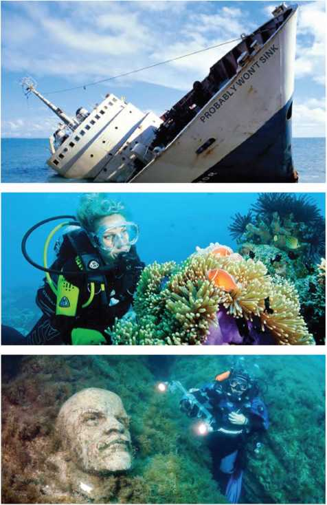
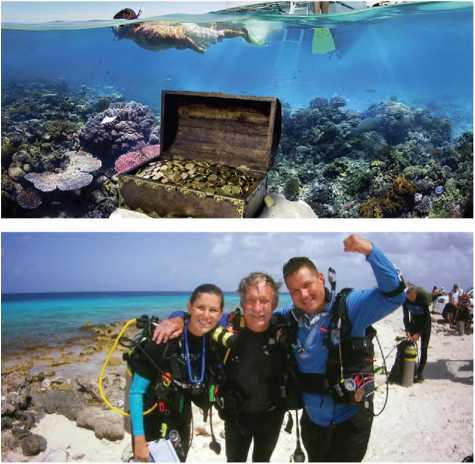
I. Read the data below and answer the following questions.
Percentage Of Women At Work
TOPIC EMPOWERED WOMEN
Percentage mentioned along with a specific colour
Home maker 46 percentage (light blue)
Logistics 8 percentage (orange)
Information Technology 3 percentage (dark brown)
Administration/ Human Resources 11 percentage (yellow)
Finance 11 percentage (pink)
Earthmoving Workshop 2 percentage (green)
Environmental 3 percentage (dark blue)
Medicine 13 percentage (light brown)
Technical Field 3 percentage (red)
Choose the correct answer.
1. What is the Chart about?
a. women empowerment
b. women power
c. women at work
d. women at home
2. Identify the three jobs where the same percentage of women work. (only colours given to identify)
a. red, light brown, dark blue
b. dark brown, dark blue, red
c. yellow, green, orange
d. dark blue, red, green
3. In which field of work is women's involvement the second highest?
a. Logistics
b. Home maker
c. Medicine
d. Administration/Human resource
4. Percentage of women working in finance is the same as __________ .
a. Home maker
b. Information Technology
c. Technical Field
d. Administration/Human Resources
5. What is the difference between the percentage of women working in logistics and Medicine?
a. 8
b. 11
c. 13
d. 5
Slogan
A slogan is usually a short phrase that is easy and catchy to remember. They are often used in advertisements and by political parties or organizations who expect people to remember what they are selling. The words used in a slogan are simple, relevant, attractive and brief.
Example:
J. Read the given slogans and match them appropriately with their theme.
1. One for all and all for one |
- Junk food |
2. Limit your fast food otherwise it would be your last food |
- Save water |
3. Restricting a woman restricts the growth of the family |
- Cleanliness |
4. Clean and green makes perfect scene |
- Woman empowerment |
5. It takes a lot of blue to stay green |
- Unity |
K. Look at the images of familiar advertisements given below. Identify the products and try to frame your own slogans for each one of them.
A table is given where the students match the slogans and theme.
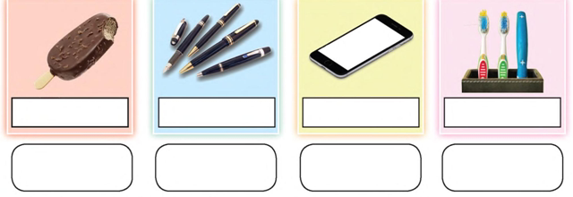
L. Look at the pictures given below and frame your own slogans:
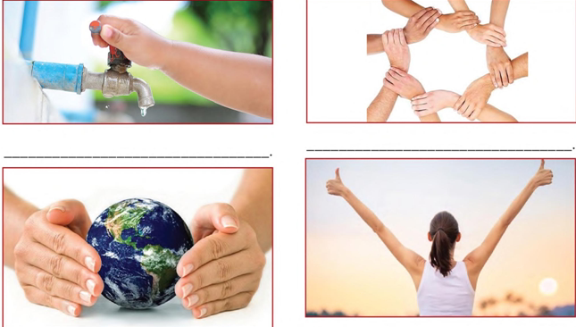
A letter is an important means of communication which could be personal or official. Letters are broadly classified into two types: Formal and Informal letter. In Class IX you have studied both the types - formal and informal.
Now let us learn to write a letter ordering goods and how to write a complaint for any damage or any other problem noticed after receiving the goods.
A box item for writing a letter is given such as senders address, date, receivers address, salutation, body of the letter, closure .
Format of the letter
Sender's address : (Include email and phone number, if required).
Date : (leave one space line and write the date as, 10 July 2019)
Receiver's address : (correct address)
Subject of the letter:
Salutation (Sir / Respected Sir / Madam),
Body of the letter
(Introduce yourself and write the purpose of the letter Mention the details of the enquiry Conclusion)
Closure(Yours,)
Sender's signature and designation (if any)
Model of the letter:
Letter ordering things.
Ms. Deepa an NGO writes a letter to the wholesale book shop dealer, placing order for 100 copies of medium size English Oxford Dictionary.
Ms. Deepa,
NGO (Nallam Trust),
Kalapet village,
Nagappattinam District.
bdeepa04@gmail.com
13 May 2019
The Proprietor,
NIZHAL BOOK SHOP,
Chennai - 600 001.
Sir / Madam,
Subject: Order for English Oxford Dictionaries - Reg.
On reading the discount provided by your shop in the advertisement of yesterday's newspaper, I would like to place an order for 100 copies of medium sized English Oxford Dictionary in your shop. I need the copies within a week. So, let me know the estimation for the bulk order placed, as early as possible.
Thank you,
Yours faithfully,
Deepa.B
Letter of complaint 1
After receiving the order, Deepa finds that some of the dictionaries are damaged. So, she writes the following letter of complaint.
Ms. Deepa,
NGO (Nallam Trust),
Kalapet village,
Nagappattinam District.
bdeepa04@gmail.com
20 May 2019
The Proprietor,
NIZHAL BOOK SHOP,
Chennai - 600 001.
Sir / Madam,
Subject: Complaint about damaged dictionaries - Reg.
On receiving the order of 100 copies of English Oxford Dictionary from your shop, I found that around 25 copies of them were damaged. In some copies the pages are missing and in some more copies the pages are not in order. So, duly accept my complaint and replace the damaged copies. Kindly, check the returned copies and replace them accordingly.
Thank you,
Yours faithfully,
Deepa.B
Letter of complaint 2
Mr. Srinath lost his bag in an over crowed train. The following is the letter of complaint which he writes to the railway police force.
Srinath B,
No. 24, I cross, Pon Nagar,
Chengalpettu-10.
bsrinathl6@gmail.com
25 July 2019
The Commissioner of Railway Police,
A-2 Police station, D-Nagar,
Chengalpettu-02.
Respected Madam,
Subject: Complaint about status of the lost certificates - Reg.
I am a graduate seeking employment, residing in the above mentioned address. I lost my certificates on 15th July 2019, while I was returning home in a local train from Chengalpattu. As the train was over crowded, I placed my bag on the rack above. When I was about to get off, I noticed that my bag was missing. I was helpless and filed a complaint with the Railway Police. I have given all the details in the complaint letter on the same day. So far I have not received any further response. I request you to take immediate action in this regard.
Thank you,
Yours faithfully,
Srinath B.
M. Exercise:
1. Imagine that you have parked your vehicle (two-wheeler)/ bicycle inside the school premises. You find it missing in the evening. Write a complaint to the head of the school regarding this issue.
2. Write a complaint to the officer of the PWD department to take immediate actions of maintaining cleanliness in the Children's Park in your locality.
3. Write a letter to the manager of a famous daily, ordering subscription for your school library.
The term, 'Tense' denotes the time of action. They show when the work is done.
The English Tenses are :
1. Past
2. Present
3. Future
Present Tense
Forms and Uses of the Simple Present Tense
A table for simple present tense for first, second, third person for affirmative, negative, interrogative sentences are given.
|
First person |
Second person |
Third person |
Affirmative *Singular |
I sing. |
You sing. |
She/He/It sings. |
We sing. |
You sing. |
They sing. |
|
*Plural |
|||
Negative |
I don't sing. |
You don't sing. |
She/He/It doesn't sing. |
Interrogative |
Do I sing? Don't I sing? |
Do you sing? Don't you sing? |
Does she/he/it sing? Doesn't she/he/it sing? |
Note: Except for third person plural affirmative, the structure does not change for negative forms.
Now try framing plural negative and interrogative negative sentences.
Uses
❖ to express universal truths, facts, customs
❖ to express habitual, routine actions
❖ to express a permanent state
❖ in exclamatory sentences
❖ in subordinate clauses beginning with if and when
❖ in imperative sentences
❖ to indicate a planned future action or series of actions when they refer to a journey
❖ in running commentaries
❖ to introduce quotations
e.g. Mahatma Gandhi says, “Be the change you want to see in the world.”
Forms and Uses of Present Continuous Tense
A table for present continuous tense for first, second, third person for affirmative, negative sentences are given.
|
First person |
Second person |
Third person |
Affirmative *Singular |
I am singing now |
You are singing now. |
She/He/It is singing now. |
We are singing now. |
You are singing now. |
They are singing now. |
|
*Plural |
|||
Negative |
I am not singing now. |
You aren't singing now. |
She/He/It isn't singing now. |
Note: The contracted form of 'am not' is aren't and the contracted form of are not is also aren't.
Uses
❖ The Present Continuous Tense is used for an action that is in progress at the time of speaking.
❖ It is used for an action that is in progress and will continue in future.
e.g. Paul is learning English.
❖ It is used to denote an action that is planned to take place in the near future e.g. Yazhini is meeting the Prime Minister tomorrow.
❖It is used along with adverbs such as 'always, constantly, repeatedly' etc. to express an action that has become a habit by doing it over and over again.
e.g. Sumithra is always asking questions.
Note: Verbs of perception and some other verbs are not generally used in the present continuous tense, for example see, smell, hear, taste, know, understand, hate, like, want, wish, etc.
Forms and Uses of Present Perfect Tense
A table for present perfect tense for first, second, third person for affirmative, negative sentence are given.
|
First person |
Second person |
Third person |
Affirmative *Singular |
I have already sung. |
You have already sung. |
She/He/It has already sung. |
We have already sung. |
You have already sung. |
They have already sung. |
|
*Plural |
|||
Negative |
I haven't recently sung. |
You haven't recently sung. |
She/He/It hasn't recently sung. |
❖For an action which began in the past and is in progress now.
e.g. Bharani has called the fire man and they are on their way.
❖ To express an action that has been recently completed
❖With adverbs like already, recently, yet,
❖ To express an action that began in past and is still continues up to the present
e.g. She has lived in this house for five years.
Note: We do not use adverbs of time denoting the past tense in Present Perfect Tense.
e.g. Father has returned from Vellore yesterday. (This sentence is wrong.) Father has returned from Vellore.
Forms and Uses of Present Perfect Continuous Tense
A table for present perfect continuous tense for first, second, third person for affirmative, negative sentences is given.
|
First person |
Second person |
Third person |
Affirmative *Singular
|
I have been singing since morning. |
You have been singing for two hours |
She/He/It has been singing since morning. |
*Plural |
We have been singing since morning. |
You have been singing for two hours. |
They have been singing since morning. |
Note: Since is used for a point of time; For is used for a period of time
Uses
❖ To express an action which began at some time in the past and is still continuing and may extend into the future.
e.g. She has been studying since morning.
❖ To express an action in a sentence which begins with for how long or since when
❖ To express an action that began sometime in the past and has been just completed. However, its result is visible in the present.
e.g. I have been working on this project for five hours and I am tired now.
A. Complete the sentences in present tense forms.
1. Saravanan always (dash) (go) for a walk in the morning.
2. We (dash) (gather) here for a meeting and the chair person is yet to arrive.
3. Arun a (dash)eagerly (dash) (wait) to meet her friend since morning.
4. Sheeba (dash) (move) to a new house next week.
5. Naseera (dash) (attend) music classes regularly.
6. Ilakiya and Adhira (dash) (enjoy) each other's company very much.
7. Mani (dash) (work) in this school for five years.
8. It (dash) (pour) outside now.
A table for past tense for first , second. third person For affirmative. negative, interrogative sentences is given.
Past Tense
Affirmative *Singular |
First person |
Second person |
Third person |
I sang yesterday. |
You sang yesterday. |
She/He/It sang last week. |
|
*Plural |
We sang yesterday. |
You sang yesterday. |
|
Negative |
I didn't sing yesterday. |
You didn't sing yesterday. |
She/He/It didn't sing last week. |
Interrogative |
|||
Did/ Didn't I sing yesterday? |
Did/ Didn't you sing yesterday? |
Did/ Didn't she/he/it sing last week? |
Forms and uses of the Simple Past Tense
Uses
❖ To indicate an action that was completed in the past. Generally the adverbials of past time are used; sometimes without adverbials of time for an activity done in the past
❖ To express a habitual or regular action only in the past; It can also be expressed by using 'used to'
Forms and Uses of Past Continuous Tense
❖ In conditional clauses
❖ In the indirect form of speech
❖ To express two actions, where the first action leads instantly to the second action
e.g. When the meeting ended, the staff members came out.
A table for past continuous tense for first, second, third person for affirmative, negative, sentences are given.
|
First person |
Second person |
Third person |
Affirmative *Singular *Plural |
I was singing. yesterday by this time. We were singing yesterday by this time. |
You were singing when I was playing. You were singing. when I was playing. |
They were singing when I was playing. |
Negative |
I wasn't singing |
You weren't singing |
She/He/It wasn't singing |
Uses
❖ To express a state or an action that was continuing at a certain point of time in the past. It had begun before that point and was probably continuing after it. We use adverbials of time.
e.g. We were decorating the house for the birthday party in the morning.
❖To express an action that was in progress in the past
❖ To express an action in progress at some point of time in the past when another event took place
e.g. She was cooking when the guests arrived.
❖To describe two or more actions continuing at the same time
e.g. While I was watching T.V., he was sleeping.
❖To indicate a frequently repeated action or persistent habit in the past
e.g. Nithish was constantly complaining about something or the other.
Forms and Uses of Past Perfect Tense
A table for past perfect tense for first, second, third Person for affirmative sentences is given.
Affirmative *Singular |
First person |
Second person |
Third person |
I had already sung. |
You had already sung |
She/He/It had already sung |
|
*Plural |
We had already sung |
||
You had already sung |
They had already sung |
Uses
❖ For an action that had been completed before another action began in the past
e.g. He had appealed to the manager for a week's leave before I reached.
❖ To describe an action or event which has been completed before some point of time.
e.g. By 11 a.m. all the students had left the school campus after the Independence Day celebration.
❖ To describe an action in the past which became the cause of another action❖ To describe an action in the past using the time adverbials such as already, since, before, etc.
❖ To express an unfulfilled action in the past and unfulfilled wish in the past.
e.g. If he had informed her, she would have waited for him.
I wish I had accepted the job.
Forms and Uses of Past Perfect Continuous Tense
A Table for past perfect continuous tense for first, second, third person is for affirmative sentences is given.
Affirmative *Singular |
First person |
Second person |
Third person |
I had been singing for two hours yesterday. |
You had been singing for two hours yesterday. |
She/He/It had been singing for two hours yesterday. |
|
*Plural |
|||
We had been singing for two hours yesterday. |
|||
You had been singing for two hours yesterday. |
They had been singing for two hours yesterday. |
Uses
❖ to describe an action in the past that had begun and had been going on for sometime before another action took place in the past
e.g. Mahi and Ragav had been arguing with each other when their mom arrived.
❖ to describe an action that had been going on for some time in the past
e.g. The students had been practicing for the last couple of weeks.
B. Complete the sentences in past tense forms.
1. I (dash) (go) to her place on foot.
2. The children (dash)play) in the ground when the teacher arrived.
3. They (request) him when the manager arrived.
4. If you (dash) (work) hard, you would have won the relay match
5. Joanna and Joy (dash)already (dash) (leave) for Ooty, when the others reached the station.
6. We all (dash)sing)in the choir last week.
7. Nancy (dash) (ask) for help.
8. The office goers (dash) (wait) for the train.
Future Tense
Future time in English can be expressed in the following ways:
(i) Simple Present Tense
e.g. She leaves this evening.
(ii) Present Continuous Tense
e.g. We are meeting the Prime Minister tomorrow.
(iii) be about to
e.g. The train is about to leave the station.
(iv) be going to.
e.g. Prices are going to rise.
(v) by denoting the Principal clause of a conditional sentence.
e.g. If she works hard, she will get a scholarship.
Forms and Uses of Simple Future Tense.
A table for future tense for first, second, third person for affirmative sentence is given.
Affirmative |
First person |
Second person |
Third person |
Negative |
I/we shall sing tomorrow. |
You will sing tomorrow. |
She/He/It/ They will sing tomorrow. |
I won't sing tomorrow . |
You won't sing tomorrow... |
||
She/He/It won't sing tomorrow.... |
Uses
❖Shall is used with the second and the third persons to express determination, promise, intention, etc.
❖ Shall is used with the first person to express an offer or suggestion
❖ Will is used with the first person to express willingness, determination, etc
❖ The simple future is used to express the speaker's opinion, for something
to be done in the future. We use verbs such believe, know, suppose, think, etc. We also use adverbs such as perhaps, possibly, surely, etc.
❖It is used for an action that is yet to take placeForms and Uses of Future Continuous Tense
A table for future continuous tense for first , second, third person for affirmative, negative sentence are given.
Affirmative |
First person |
Second person |
Third person |
Negative |
I/we will be singing by this time tomorrow. |
You will be singing by this time tomorrow. |
She/He/It they will be singing by this time tomorrow. |
I won't be singing by this time tomorrow. |
You won't be singing by this time tomorrow. |
She/He/It won't be singing by this time tomorrow. |
Uses
❖ The Future Continuous Tense is used to express an action that will be in progress at a given time in future or in the normal course
e.g. We will be playing from 5 p.m. to 6 p.m The lift will be running in the month of May
The Future Perfect Tense.
Uses
❖ The Future Perfect expresses an action that is expected to be completed by a certain time in the future.
e.g. We will have completed our work by the time our sisters arrive.
❖ It is used to express the speaker's belief that something has taken place. In such sentences it does not express the future.
“You will have discussed the plans how to celebrate the function”, said my mother.
❖ It is also used for an action which at a given future time will be in the past.
e.g. In two years' time, I shall have earned my degree.
The Future Perfect Continuous Tense.
Uses
❖ The Future Perfect Continuous Tense is used to express an action that will have been going on at or before some point of time in the future.
By next June, I shall have been completing my studies.
Note: The less frequently used tense forms are Past Perfect Continuous Tense and Future Perfect Continuous Tense.
C. Fill in the blanks using the verbs in the brackets in the future form.
1. We (dash)not (dash)to the market, in case it rains. (go)
2. Keerthi (dash)his work by next week.(do)
3. The peon (dash)the bell by the time I reach the school.(ring)
4. I (dash)my sister's house next April if I go to Uttarkhand. (visit)
5. If you listen carefully, you (dash)my point. (understand)
6. By next year, I (dash)in Chennai for fifteen years. (live)
7. The new edition of this book (dash)out shortly. (come)
8. She hopes you (dash)her. (help)
D. Underline the verbs and identify the tense forms.
1. I am working hard day and night. (dash)
2. The Moon revolves around the Earth (dash)
3. Were the milk men milking the cow? (dash)
4. He received your messages last night (dash)
5. I have been ill for a couple of days (dash)
E In the following passage, some words are missing. Choose the correct words from the given options to complete the passage.
Raghav (a) (dash)in a middle class family. He is a (b) (dash)boy of 8.
His mother (c) (dash)as a software engineer in an MNC. (d) (dash)is his favourite hobby. He (e) (dash)the first prize in school level competition for drawing last week. He (f) (dash)drawing at the age of 3. His mother (g) (dash) he (h) (dash)a great painter in future.
A box with a passage with missing words is given.The students have to select the words from the given choice of words.
(a) (i) will be born (b) (i) school-going (c) (i) working (d) (i) drawn (e) (i) win (f) (i) was starting (g) (i) hoped (h) (i) will become |
(ii) is born (ii) going to school (ii) works (ii) had drawn (ii) was winning (ii) starting (ii) hoping (ii) becomes |
(iii) born (iii) school coming (iii) has worked (iii) drawing (iii) wins (iii) started (iii) hopes (iii)would become |
(iv) has born (iv) school gone (iv) will work (iv) having drawn (iv) won (iv) is starting (iv) has hoped (iv)willbe becoming |
F. The following passage has not been edited. There is one error in the tense of the verb in each line. Write the wrong word as well as the correct word in the given place. One is done for you.
A passage has been given where the passage is not edited. The students have to change the tense, and write the correct word as well as the wrong word.
When Anand reach Arun's place, his friends have arrived already. Arun introduces Anand to them. Arun's brother buy some snacks from the market. Arun serving it to all his friends. Then they all sat together to planning their holidays. Arun have a cottage in Ooty, so they all plan to go to Ooty during the holidays. “Would we have a good time?, asked Arun. They all cheerfully say, “Yes!” |
Wrong words |
Correct words |
reach |
reached |
G. Read the story and rewrite it using the simple past tense.
Juno the elephant is lonely and tries to make friends with the other animals in the forest. But, the other animals refuse to play with Juno because of his size. One day, all the animals are running away from Dera the tiger who is eating everyone he finds. Juno goes and gives Dera a swift kick. Dera immediately runs away. Juno is now everyone's friend.
H. Read the situations given and frame two suitable sentences in the appropriate form of the tenses.
Give two instructions to your classmates.
1. (dash)
2. (dash)
Make any two requests to your classmates
or friends.
1. (dash)
2. (dash)
Mention any two of your discontinued habits in the correct tense form.
1. (dash)
2. (dash)
1. (dash)
2. (dash)
Mention any of your two dreams in the correct tense form.
1. (dash)
2. (dash)
This poem talks about the multifaceted nature of women. Today's women are empowered, brave, strong and resolute. They are always ready to take up new ventures. They are persistent and work tirelessly to prove what they are capable of. Women have to be treated respectfully for the growth of a nation.
A woman is beauty innate,
A symbol of power and strength.
She puts her life at stake,
She's real, she's not fake!
The summer of life she's ready to see in spring.
She says, “Spring will come again, my dear.
Let me care for the ones who're near.”
She's The Woman - she has no fear!
Strong is she in her faith and beliefs.
“Persistence is the key to everything,”
says she. Despite the sighs and groans and moans,
She's strong in her faith, firm in her belief!
She's a lioness; don't mess with her.
She'll not spare you if you're a prankster.
Don't ever try to saw her pride, her self-respect.
She knows how to thaw you, saw you - so beware!
She's today's woman. Today's woman, dear.
Love her, respect her, keep her near...
About the poet
Rakhi Nariani Shire is an academician with a passion for writing poems as a medium of self- expression .she is a poet graduate,with a Bachelors Degree in education
innate (adj) - inborn and natural
stake (n) - risk
persistence (n) - determination
sigh (v) - emit a long deep audible breath expressing sadness, relief or tiredness
mess with (p) - to tease or play a joke
prankster (n) - a person who acts mischievously
groans (v) - complaints and grumbles
moans (v) - grieves
A. Read the lines and answer the questions.
1. The summer of life she's ready to see in spring.
She says, “Spring will come again, my dear
Let me care for the ones who're near.”
a) What does the word summer mean here?
b) How does she take life?
c) What does she mean by “spring will come again”?
2. Strong is she in her faith and belief.
“Persistence is the key to everything,” says she.
a) What is she strong about?
c) How does she deal with the adversities in life?
3. Despite the sighs and groans and moans,
She's strong in her faith, firm in her belief!
a) Is she complaining about the problems of life?
b) Pick out the words that show her grit.
4. Don't ever try to saw her pride, her self-respect.
She knows how to thaw you, saw you - so beware!
a) What do the words thaw and saw mean here?
b) What is the tone of the author?
5. She's today's woman. Today's woman dear.
Love her, respect her, keep her near...
a) Describe today's woman according to the poet.
b) How should a woman be treated?
A box with lines taken from the poem,questions such as figure of speech,rhyming words,metaphor found in the poem is asked.
B. Read the lines and identify the figure of speech.
1. A woman is beauty innate,
A symbol of power and strength.
She puts her life at stake,
She's real, she's not fake
a) Pick out the rhyming words from the above lines.
b) Add another word that rhymes with strength.
c) Give the rhyme scheme for the above lines.
2. She's a lioness; don't mess with her.
She'll not spare you if you're a prankster.
a) Pick out the line that has a metaphor in it.
b) Give your examples of metaphor to describe the qualities of a woman.
3. She's strong in her faith, firm in her belief.
a) Pick out the alliterated words from the above.
b) Pick out other alliterated words from the poem.
Exercise) A box is given a passage with blanks has to be filled with the words given in the help box.When the students fill the blanks the summary of the poem is evolved.
C.Fill in with a word in each blanks to complete the summary of the poem. Use the help box given below.
Box words begins
dignified ,healthier ,today's persistent care symbol innate fake adversity hope life disgrace prankster woman near faith optimistic quitter thaw respect lioness fear beliefs self respect saw strength.
Box words ends
Paragraph begins.
Every woman is beautiful (dash)She is the (dash)of power and (dash)She is prone to put her (dash)at risk. Every woman is true in expressing her love and she is never (dash). She is very (dash)in her approach even at times of (dash)she finds a ray of (dash)and she continues to (dash)for her (dash)ones. She is the (dash)and she has no (dash). She is forceful in her (dash)and (dash)She is never a (dash)and she is (dash)She is ferocious like a (dash)it's better for the (dash)to stay away from her. Never should one try to bring (dash)to her pride and (dash)for she knows how to (dash)and (dash)them. She is (dash)woman. It is (dash)to love her (dash)her and to keep her (dash).
Paragraph ends.
D. Answer the following in a paragraph of about 80 to 100 words.
1. How are today's women portrayed by the poet?
2. What qualities have made women powerful?
Think like a Queen...
To all the little girls who are watching this, never doubt that you are valuable and powerful, and deserving of every chance and opportunity in the world to pursue and achieve your own dreams."
Hillary Clinton
"Feminism isn't about making women stronger.
Women are already strong,
it's about changing the way the world perceives that strength.
G.D. Anderson
I raise up my voice--not so that I can shout, but so that those without a voice can be heard. ...
We cannot all succeed when half of us are held back.
Malala Yousafzai
A woman with a voice is, by definition,
a strong woman.
Melinda Gates
"A feminist is anyone who recognizes
the equality and full humanity of women and men."
Gloria Steinem
"Each time a woman stands up for herself, without knowing it possibly, without claiming it, she stands up for all women."
-Maya Angelou
"There is no limit to what we, as women, can accomplish."
Michelle Obama
"There is no tool for development more effective than the empowerment of women."
Kofi Annan
"Educate a man and you educate an individual.
Educate a woman and you educate a family."
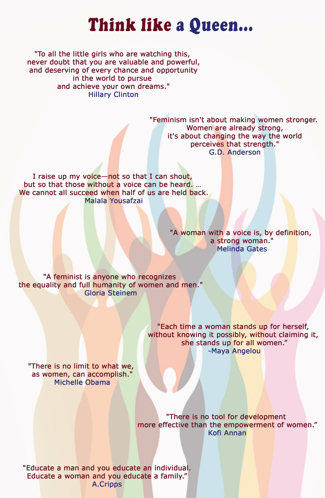
This is the classic story of Mulan based on the legend of Hua Mulan A legend is a story from long ago that is believed to be true, or mostly true.
Many years ago, China was in the middle of a great war. The Emperor said that one man from each Chinese family must leave his family to join the army. Mulan, a teenage girl who lived in a faraway village of China, heard the news when she was outside, washing clothes.
Mulan ran into the house. Her father was sitting in a chair, carving a piece of wood. “Father!” she said. “Did you hear what the Emperor says each family must do?”
“Yes,” said her old father, “I heard about it in town. Well, I may as well go pack up.” He put down his carving, stood up and walked very slowly to his room.
“Wait!” said Mulan, “Father, you have not been well. If I may say so, why at your age must you keep up with all those young men?”
“What else can be done?” said her father. “Your brother is a child. He cannot go”.
“Of course that's true,” said Mulan. “He is too little. But I have an idea.” She poured her father a cup of tea and handed it to him. “Father, have some tea. Please sit for a minute. I will be right back.”
“Very well, dear,” said the father.
Mulan went into her room. With her sword, she cut off her long, black hair. She put on her father's robe. Going back to her father, Mulan said, “Look at me. I am your son now. I will go in your place. I will do my part for China.”
“No, my daughter!” said the old man. “You cannot do this!”
“Father, listen please,” said Mulan. “For years, you trained me in Kung Fu. You showed me how to use a sword.” Mulan swung the sword back and forth with might.
“Only so that you could stay safe!” said her father. “I never meant for you to go to war. If they find out you are a woman, you know as well as I do that you will die!”
“No one will find out, Father,” said Mulan. She picked up her sword.
“Mulan!” said the Father. He tried to get up but had to hold on to his chair.
The daughter kissed him goodbye. “I love you, Father,” she said. “Take care of yourself. Tell my brother I said goodbye.” She climbed on a family horse. And off she went to join the Emperor's army.
In the army, Mulan proved to be a brave soldier. In time, she was put in charge of other soldiers. Her battles went so well that she was put in charge of more soldiers. Her battles kept on going well. After a few years Mulan was given the top job - she would be General of the entire army.
Not long after that, a very bad fever swept through the army. Many soldiers were sick. And Mulan, the General of the army, became sick, too.
When the doctor came out of Mulan's tent, he knew the truth.
“The General is a woman?” yelled the soldiers. “How can this be?” Some called out, “She tricked us!” and “We will not fight for a woman!” They said, “Punish her! Make her pay! The cost is for her to die!” But others called out, in voices just as loud, “With Mulan, we win every battle!” They said, “Stay away from our General!”
Just then, a soldier ran up. “Everyone!” he called. “A surprise attack is coming!”
Mulan heard this from inside her tent. She got dressed and went outside. She was not yet strong, but stood tall. She told the soldiers where they must go to hide so they could attack when the enemy came. But they must get there fast! The soldiers, even those who did not like that their General was a woman, could tell that Mulan knew what she was talking about.
It worked! The battle was won. It was such a big victory that the enemy gave up, at last. The war was over, and China was saved! You can be sure that after that last battle, no one cared anymore that Mulan was a woman.
The Emperor was so glad that Mulan had ended the long war, he set aside the rule about being a woman. “Mulan, stay with me in the palace,” he said. “Someone as smart as you would be a fine royal adviser.”
Mulan bowed deeply. “You are too kind, Sire,” she said. “But if you please, what I wish most of all is to return home to my family.”
“Then at least take these fine gifts,” said the Emperor. “So everyone at your home and village will know how much the Emperor of China thinks of you.”
Mulan returned to her village with six fine horses and six fine swords. Everyone cheered that she was safe. The person who had saved China was their very own Mulan!
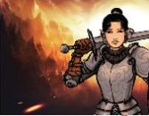
carving (v) : an act of cutting a shape or pattern into wood or stone.
robe (n) : a long, loose outer garment reaching the ankles
kung fu (n): a chinese method of fighting that involves using your hands and feet and not using weapons
might (n): great and impressive power or strength, especially of a nation, large organization, or natural force
bowed(v) : bending the body forwards from the waist, especially to show respect for someone
A. Choose the best answers.
1. Mulan goes to the battle instead of her father because (dash)
a. she wants to be a soldier.
b. she was asked to join the army.
c. her father is old.
d. her brother is sick.
2. What did Mulan do before leaving the house?
a. took leave from her mother
b. cut off her hair
c. prayed
d. made a dress for war
3. What is the story about?
a. winning
b. friendship
c. women empowerment
d. patriotism
4. The emperor asked Mulan to stay with him in the palace as his (dash)
a. wife.
b. royal advisor.
c. army general.
d. friend.
5. The emperor gave Mulan (dash)
a. six horses and six swords.
b. a death sentence.
c. gold.
d. six camels
6. How did people of the village react to Mulan after her return from the battle?
a. cheered her
b. mocked her
c. punished her
d. scolded her
B. Identify the character or speaker of the following lines.
1.I heard about it in town.
2. I am your son now.
3. The General is a woman?
4. Mulan, stay with me in the palace.
5. You are too kind sire.
C. Answer the following questions in a sentence or two.
1. What was the emperors order?
2. Where did Mulan's father hear about the Emperor’s order?
3. Why couldn't Mulan's brother go to war?
4. Why did Mulan disguise herself as a man?
5. How did the soldiers become sick?
6. How would she be punished if found guilty?
7. Why did the emperor give her fine gifts?
8. How did the soldiers come to know about Mulan's real identity?
D. Answer the following questions in a paragraph.
1. Sketch the character of Mulan.
2. Do you agree with Mulan's decision to go to war? Justify.
DO YOU KNOW?
Box text begins.
» Break dancing is a style of street dance consisting of improvised acrobatic moves. The pioneers of this dance credit kung fu as one of its influences. Moves such as the crouching low leg sweep and “up rocking” (standing combat moves) are influenced by choreographed kung-fu fights.
» Many people have a misconception that Chinese Kung Fu is about fighting and killing. It is actually based on Chinese philosophy and is about improving wisdom and intelligence. Taoist philosophy is deeply rooted in and had a profound influence on the culture of Chinese martial arts.
» The five traditional animal styles of Shaolin Kung Fu are the dragon, the snake, the tiger, the leopard and the crane. The union of the five animal forms clearly displayed the efficacy of both hard and soft movements, of both internal and external energy - this form of Chinese martial arts was known as Shaolin Kung Fu, named after the temple in which it was developed.
» Kung fu - 'kung' meaning 'energy' and 'fu' meaning 'time' - is a Chinese martial art whose recorded history dates back to around 525 CE, during the Liang dynasty. The man credited with introducing martial arts to China is said to be an Indian monk known as Bodhidarma.
» Hua Mulan is a legendary Chinese warrior from the Northern and Southern dynasties (420-589) period of Chinese history, originally described in the Ballad of Mulan. In the ballad, Hua Mulan, disguised as a man, takes her aged father's place in the army. Mulan fought for twelve years and gained high merit, but she refused any reward and retired to her hometown.
Box text ends.
❖ To learn the usage of tenses
❖ To practise all types of tenses
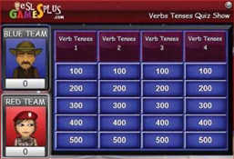
Steps
1. Type the URL link given below in the browser or scan the QR code.
2. Enable 'flash' to play the game.
3. Select 2 to 10 teams and start selecting the number tiles to play.
4. After the completion of all the tiles, the winning team will be displayed.
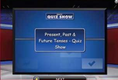
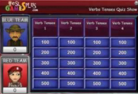
Download Link
Click the following link or scan the QR code to access the website
https://www.eslgamespkis.com/verb-tenses-interactive-grammargame-for-esl-jeopardy-quiz-game/
** Images are indicatives only.
Look at the image given below.
❖ Pick out the qualities that you possess and qualities that you expect from your siblings / friends.
❖ Working in pairs, find out the mutual qualities that you and your friends share. Justify your top priority with his / hers.
❖ Discuss in groups the need for human values.
Satyajit Ray
It is natural for human beings to make mistakes. When we realise our mistakes, we should try to rectify them. If you get a chance to rectify your mistake or pay back for it ..... what would you do and how would you correct it?
Aditya and I were returning from the site of our new factory at Deodarganj. We were driving along National Highway 40. We had reached a point where the road bifurcated. If we drove ten kilometres along the road that branched off to the right, we would reach Bramhapur. I asked Aditya whether he was interested in revisiting the place of his birth, which he had left after he had passed the matriculation examination from the local school to continue his studies in Calcutta.
'When I left our ancestral house, twentynine years ago, the house was almost two hundred years old,' recollected Aditya. 'I doubt if even the school building, which may have undergone many changes, will be recognisable any more. Trying to revive old childhood memories may prove disappointing!'
But he said he wished to visit the tea shop of Nagen Uncle, if it still existed, and have a cup of tea there.
So we took the turning to the right and decided to drive to Bramhapur, of which Aditya's ancestors were once the zamindars.
a. When did Aditya leave the local school?
b. Why did Aditya think that the school would not be recognisable?
Aditya's father had left the ancestral home and moved to Kolkata, where he had set up his own business. After his death, Aditya was looking after it, and I was his friend and business partner.
It was the month of Magha, that is January - February by the English calendar - the middle of winter. By my watch, it was 3:30 in the afternoon. The sun was soothing. On either side of the road were paddy fields, as far as the eye could see. Harvest was over and there had been a good crop that year.
After about ten minutes, we came to the local school. Beyond the iron gates were the playing field and the two-storeyed school building. We got down from the car and stood in front of the gate.
c. Who were Aditya's ancestors?
d. How was the landscape through which they travelled.
e. What did Aditya visit?
I asked Aditya whether everything was still the same. He replied that everything had changed.
'Our school used to be one-storeyed, and a new building has come up, which wasn't there.'
'Were you not a good student?' I asked.
'Yes, but my position was always second,' he replied. We decided to go and have tea at Nagen uncle's tea shop, which stood next to a grocery shop and opposite a temple dedicated to Lord Shiva. Soon, we caught sight of 'Nagen's Tea Cabin' written on a signboard over the shop.
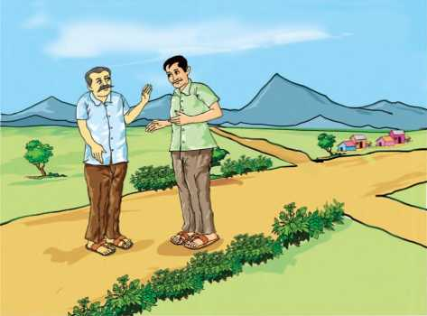
The owner of the tea shop, now over sixty, a little rustic in appearance, with his white neatly-combed hair and clean look, was the same as before. He was wearing a dhoti and a blue striped shirt that could be seen from under a green shawl.
Not recognising Aditya, he asked us where we had come from.
'Deodarganj,' Aditya replied. 'We are on our way to Kolkata.'
A little surprised, Nagen uncle asked why we were there.
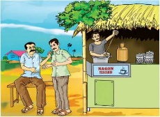
To have tea at your shop,' said Aditya. 'Certainly, besides tea, I have biscuits and savouries.' Give us two nankhatai each
f. Where was nagen uncle's shop?
g. Besides tea, what did Nagen uncle have in his shop?
We sat on two tin chairs. There was only one other customer sitting at a corner table, neither eating nor drinking tea, but sitting with his head bent, as though he were sleeping.
Addressing him as Mr Sanyal, Nagen uncle reminded him to go home, as it was already 4 p.m. Other customers would soon be coming. Addressing us he said, with a wink in his eye, A little hard of hearing. Cannot see well either. But has no money to buy spectacles.'
From his reaction to this speech, I began to wonder whether Mr Sanyal was not a little crazy as well, because suddenly he stood up, stretched himself and, raising his lean right arm, and with eyes dilated, began to recite a poem by Tagore - Panraksha ('Keeping of a Promise'). Having recited the poem, he left the place, making the gesture of Namaste with his hands, to nobody in particular.
h. What did Nagen uncle tell about Sanyal?
i. In what way was Mr. Sanyal's behaviour strange?
I noticed a sudden change in Aditya's expression and I asked him the reason for it. Without answering me, he asked Nagen uncle who the gentleman was and what he did.
Nagen uncle replied, 'Sasanka Sanyal. What can be done? He leads a cursed life - gone crazy, I think, but has not forgotten any incident of the past. Sold his lands to get his only daughter married. He lost his wife and only son last year. Since then he is somewhat changed - not really normal.' 'Where does he stay?'
'He stays with a friend of his father's - Jogesh Kabiraj. Sasanka comes here, has tea and biscuits and always remembers to pay - having an acute sense of self-respect. But how long things will remain like this, I don't know'.
j. What did Nagen uncle tell aboutSanyal's past life?
k. How did Sanyal show that he had a sense of self-respect?
Having paid our bill and ascertained the location of Jogesh Kabiraj's house, we got into the car. Aditya was at the wheel. He expressed the wish to visit his house. 'So you do want to see your house after all?' I said.
'It has become essential to do so,' Aditya replied. His nerves seemed overwrought for some reason. We soon reached the house, which was surrounded by high walls. Even from the ruins, one could easily imagine how grand it must have been once upon a time.
We entered the building, climbed up the stairs and reached the attic on the second floor of the house.
'This was my favourite room,' said Aditya. The attic has always been a favourite with children. It is in the attic that the child seems to be in a world of its own.
A portion of a wall of the attic had crumbled down, and through the 'window' that had been created, we could see the sky, the fields, a part of the rice mill, the spire of the old temple. In the whole house, the attic had probably been the worst hit by wind and weather. The floor was strewn with twigs and straw and pigeon droppings. Among other things, there was a broken cricket bat, the remains of an armchair and a wooden packing case.
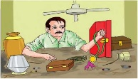
Aditya got on top of the packing case and pushed his hand inside the ventilator, thus upsetting a sparrow's nest, a part of which fell to the ground. However, he heaved a sigh of relief when he had got what he had been looking for. When I asked him what it was, he said, 'You'll get to know very soon.'
l. Why was the attic 'a favourite place' for the children?
m. What did Aditya do on reaching the attic?
We next went to a jeweller's to find out the weight of the article. The jeweller remarked that it was an antique. Our next stop was the house of Jogesh Kabiraj. Though I was a little curious, I didn't ask Aditya anything.
We entered the house and went to the room where Sasanka Sanyal stayed. Sasanka uncle was busy reciting verses from Tagore. When he had finished, Aditya asked, 'May we come in?' He turned and faced us.
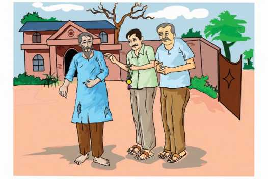
'No one visits me,' he said in an unperturbed manner.
'Would you mind if we come in?'
'Come in.'
Except for a charpoy there was nothing else to sit on, so we remained standing.
'Do you remember Aditya Narayan Chowdhury?' Aditya asked him.
'Of course,' said the gentleman. “The spoilt child of affluent parents! Was a fairly good student but could never beat me. He was extremely jealous of me. And he used to tell lies.'
'I know,' said Aditya. He then took out a packet from his pocket and handing it over to him, said, 'This is for you, from Aditya.'
n. What did the jeweller say about the article?
o. Was Sanyal happy about his visitors?
'What is it?' he asked.
'Money'.
'Money?How much money?'
'One hundred and fifty rupees. He has said that he will be happy if you accept it.'
'Shall I laugh or cry? Aditya has given me money! Why this sudden generosity?'
'Man does change with time. Perhaps Aditya is not the same Aditya as before?'
'A change? I got the prize. He could not bear it. He took it from me to show his father and never returned it to me. Said that there was a hole in his pocket and it had fallen through it.'
'This is the price of the medal. It is yours.'
Sasanka Sanyal was amazed. He stared at Aditya and said, 'The price of the medal? That could not be more than five rupees. It was a silver medal.'
'Silver is now thirty times costlier than before.'
'Really? I had no news of that. But
Sasanka uncle looked at the fifteen ten-rupee notes in his hand and then looked at Aditya. There was a completely new expression on his face. He said, 'Aditya, this smacks too much of charity. Doesn't it?'
We remained silent. Peering intently at Aditya, Sasanka Sanyal smiled and said, 'I had recognised you at Nagen uncles tea shop by that mole on your right cheek. I could see you had not recognised me. So I recited the same poem that I had recited on the prize-giving day, on purpose, so that you may remember. Then, when you came to visit me, I couldn't help venting my anger on you.'
'You have done the right thing. Your grievances are absolutely justified. But I will be happy if you accept the money,' said Aditya.
Sasanka Sanyal shook his head and said, 'No. Money will soon be spent. I would have preferred to have the medal if it were possible. I would have forgotten that unpleasant incident of my childhood if I could get the medal back.'
So, the medal that had been hidden in the attic for twenty-nine long years was eventually restored to its owner.
'Sriman Sasanka Sanyal - Special Prize for Recitation - 1948' was still clearly engraved on it (Translated from the Bengali story Chilekotha)
p. Why did Sanyal recite the poem in the tea shop earlier?
q. What was engraved on the medal?
About the Author:
BOX TEXT BEGINS.
Satyajit Ray (1921 - 1992) was an Indian film maker, screen writer, graphic artist, music composer and author. He was born in Kolkatta. He authored several short stories and novels meant primarily for young children and teenagers. He revived the childrens magazine 'Sandesh' (which his grandfather had started in 1913) and edited it until his death in 1992. Ray was more interested in writing, rather than film making. His stories have been translated in Europe, the United States and many other countries. Ray received many awards including 32 national film awards by the Government of India, notably the Padma Bhushan in 1965 and the highest civilian honour 'Bharat Ratna' shortly before his death.
BOX TEXT ENDS.
DO YOU KNOW?
bifurcated (v) - divided into two
revive (v) - to bring something back to life
soothing(v) - making someone feel calm
rustic (adj.) - typical of the countryside
dilated (v) - widened than usual
ascertained (v) - confirmed
overwrought (adj.) - state of being upset
attic (n) - the space or room at the top of a building, under the roof
crumbled (v) – broken
spire (n) - a tall, pointed structure on top of a building, especially on top of a church tower
unperturbed (adj.) - undisturbed
affluent (adj.) - wealthy
smacks (v) - drive or put forcefully into or on to something
A)Answer the following questions in two or three sentences.
1. Write a few lines about the owner of the shop.
2. What was the daily routine of Sanyal?
3. Why was there a sudden change in Adityas expression?
4. Why did Aditya decide to visit his ancestral home?
5. What was the condition of the attic?
6. When did Aditya heave a sigh of relief? Why?
7. Why did Aditya and his friend go to the jeweller?
8. What did Aditya offer Sanyal?
9. “Your grievances are absolutely justified.” Who says this to whom? Why?
B. Answer in detail the following questions in about 100-150 words.
1. Give a detailed account of all thoughts and questions in the narrator's mind while accompanying Aditya from the tea shop to Sanyal's house?
2. 'Man does change with time'-What were the various changes that came about in Aditya?
3. Give a brief character sketch of Sasanka Sanyal.
Read these sentences:
1. Beyond the iron gates were the playing field and the two-storeyed school building.
2. The owner of the tea shop, now over sixty, a little rustic in appearance, with his white neatly-combed hair and clean look, was the same as before.
3. His nerves seemed overwrought for some reason.
The words in italics are Compound words. A compound word is a combination of two or more words that function as a single unit of meaning.
C. Complete the following table with two more compound words.
A table with compound words to be filled by the students is given, One example is given and students should write one example for each example.
❖Noun + Noun |
kitchen garden, (dash) (dash) |
❖Noun + Verb |
Mouthwash (dash) (dash) |
❖Verb + Noun |
Watchman (dash) (dash) |
❖ Preposition + Noun |
Overcoat (dash) (dash) |
❖ Gerund + Noun |
bleachingpowder (dash) (dash) |
❖Noun + Gerund |
Housekeeping (dash) (dash) |
❖Adjective + Preposition + Noun |
good for nothing (dash) (dash) |
❖ Noun + Preposition + Noun |
mother-in-law (dash) (dash) |
D. Combine the words in column A with those in column B to form compound words as many as you can.
A table with column A and column B is given. The students have to match the words in column A with column B and form as many compound words as possible.
Column A |
Column B |
rain |
light |
snow |
thing |
star |
fall |
draw |
ball |
play |
back |
lottery |
ticket |
under |
walk |
man |
note |
side |
world |
foot |
hole |
E. Form compound words from the boxes given below and fill in the blanks in the sentences that follow with the appropriate compound words.
A table with three columns is given.The students have to form compound words and fill the blanks given below.
waiting |
out |
income |
green |
sun |
room |
tax |
alarm |
dry |
traffic |
wall |
house |
clock |
jam |
glasses |
hair |
cleaning |
cut |
put |
paper |
|
1. Siva visited the hair stylist to have a clean(dash).
2. Tharani had given the sarees for (dash)
3. The (dash)is a natural process
that warms the earth's surface.
4. Never wait for an (dash)to wake you up.
5. The children were late to school as there was a (dash)near the toll plaza.
6. The government expects every individual to promptly pay the (dash).
7. People usually wear (dash)during summer.
8. The patients were asked to sit in the (dash)until the doctor arrived.
9. With teamwork we are able to multiply our (dash).
10. The room was looking bright with the colourful (dash).
AFFIXES
Read the following line taken from the text:
In the English language, new words can be formed by a process called affixation. Affixation means adding affixes to the root word to form a new word. Affixes can be classified into prefix and suffix. If an affix is attached to the beginning of a word, it is called a Prefix. If an affix is attached to the end of the word, it is called a Suffix.
Examples:
Prefixes:
illiterate, disqualify, supernatural, suburban, malnutrition.
Suffixes:
childhood, ability, examination, establishment, slavish.
F (i) Form new words by adding appropriate prefix/suffix:
1. accurate (dash)
2. understand (dash)
3. practice (dash)
4. technology (dash)
5. fashion (dash)
6. different (dash)
7. child (dash)
8. national (dash)
9. origin (dash)
10. enjoy (dash)
(ii) Frame sentences of your own using any five newly formed words.
G Fill in the blanks by adding appropriate prefix/suffix to the words given in brackets.
1. He was sleeping (dash)in his couch. (comfort)
2. Kavya rides a (dash)to school.
(cycle)
3. There was only a (dash)of people in the theatre.(hand)
4. It is (dash)to cut sandalwood trees.(legai)
5. The (dash)of the President has been expected for the last half an hour. (arrive)
6. The man behaved (dash)in front of the crowd. (normal)
7. Swathy had no (dash)of visiting the doctor. (intend)
8. The bacteria are so small that you need a (dash)to see them. (scope)
❖ Conjunctions are also known as connectors or linkers or link words.
❖ We use Conjunctions to join words, a group of words or sentences.
❖ There are three types of Conjunctions
Coordinating Conjunctions link two groups of words that independently make sense.
Examples: and, or, for, otherwise, so, but, yet, still, as well as, etc.
FAN BOYS :-F-For, A- And, N- Nor, B-But, O_-Or, Y-Yet, S-So
These Conjunctions help us to introduce Subordinate Clauses. They are also used to join Subordinate or dependent Clauses to Main clauses.
Examples: when, though, although, since, until, till, after, as, before, if, unless, whereas, while, in case, as long as, as soon as, as much as, therefore, so that, because, as if, however, etc.
These Conjunctions are always used in pairs. The two Connectors in each sentence that are related to each other are known as Correlative Conjunctions'.
Examples: neither. nor, either or, not only. but also, scarcely when, both and, no sooner. than , such that, etc.
A table is given with conjunctions in one column and their functions in another column.
Conjunctions |
Functions |
and, not only, but also, as well as, moreover, furthermore, besides, in addition to |
to add information |
to indicate cause/reason |
|
Since, as, for, because, since then, before that, after that |
to express contrast |
to show result or purpose |
|
but, yet, still, nevertheless, on the other hand, though, although, even though, however, on the contrary |
to indicate time |
to add condition |
|
to express choice |
|
therefore, consequently, then, so, so that, hence, thus |
to denote comparison |
to denote place |
|
when, while, after, before, till, until, as soon as, as long as |
|
if, unless, whether, in case, provided that or, either or, neither, nor, otherwise, or else |
|
Likewise, similarly |
|
where, wherever |
Now, let us see various types of Conjunctions and practise how to use them in sentences.
I. Coordinating Conjunctions:
1. I rang up but he didn't speak to me.
2. Slow and steady wins the race.
3. Finish your work or you will not be sent home.
4. The child was ill so he was admitted in the hospital.
5. He is rich for he is hard-working.
II. Subordinating Conjunctions:
1. Unless you work hard, you cannot secure good marks.
2. Wait till I return.
3. He is honest, though he is poor.
4. As John is very weak, he is not able to walk fast.
5. I will return home after sunset.
6. My uncle entered my house, while I was doing my homework.
III. Correlative Conjunctions:
1. Sheeba is both a singer and a dancer.
2. Neither Jane nor Ram has attended the function.
3. No sooner did the teacher enter the class than the boys stood up.
4. Scarcely had they gone out when it started raining.
5. The car is not only economical but also feels good to drive.
EXERCISE:
A. Complete the sentences given below choosing the right connectors given in brackets.
1. Call me (dash)you need money. (so that, in order that, in case)
2. I forgot (dash)I had to meet the Principal. (whether, that, if)
3. (dash)he is ninety years old, he is in the pink of health. (when, since, though)
4. It is raining. Take an umbrella you will get drenched. (or else, and, but)
5. They faced many hardships (dash)
they are always cheerful. (although, nevertheless, otherwise)
B. Fill in the blanks with the connector that goes with the underlined words.
1. Both the minister (dash)the officers visited the affected areas.
2. Jaya teaches not only English (dash)Science.
3. Either Raghu (dash)Bala will have to buy vegetables from the market.
4. No sooner did I enter the house it started drizzling.
C. Combine the pairs of sentences using appropriate connectors.
1. We came late. We did not miss the train.
2. They checked the packet twice. Then they sealed it.
3. Sita saw a snake. At once she ran away.
4. Robert completed the project. He submitted it to the teacher.
5. Yusuf was running high temperature. He could not take part in the competition.
D. Tick the correct linker.
1. (dash)he was honest, he was punished.
Though, but
2. Walk carefully (dash)you will fall down.
Unless, otherwise
3. My mother called me (dash)I was playing football.
Or, while
4. My salary is low (dash)I find the work interesting.
Nevertheless, similarly
5. The passengers rushed to board the bus it arrived.
as soon as, as long as
E. Supply suitable linkers.
1.” (dash)I was alive and had a human heart,” answered the statue, “I did not know what tears were, (dash)I lived in the palace (dash)sorrow was not allowed to enter. My courtiers called me the Happy Prince (dash)Happy Indeed I was. So I lived and (dash)I died.
2. Many writers make incorrect sentences (dash)they try to put sentences together. They may make grammatical errors (dash)leave out important punctuation marks. Making such mistakes is quite common (dash)preparing the first draft. (dash)he must carefully edit his final draft.
3. In most large cities (dash)towns of our country, there are special schools for girls. (dash), there are many coeducational schools (dash)girls (dash)boys study together. Most parents allow their daughters to attend these schools, (dash)there are some parents (dash)are against such schools for girls (dash)the age of 14 or 15.
F. Rearrange the words in the correct order to make meaningful sentences.
1. as /I / healthy / are / you / am / as
2. your / today / put on / new / since / is / birthday /dress / the
3. allergic / dogs / Rani / though / is / to / of / six / she / them / has
4. speaks / Ruben / besides / German / languages / two
5. loan/apply/you/if/for/you/a/get/will/ immediately/it/
Nominalisation
❖ The term “nominalisation” refers to he process of producing a noun from another part of speech by adding a derivational affix.
❖ A grammatical expression is turned into a noun phrase when we nominalise a sentence. For example,
(A) After 1885, trade with Europe grew. (Verb)
(B) After 1885, there was a growth in trade with Europe. (Noun)
In sentence B, we have used the word growth' which is the noun form of the verb grow' by adding the suffix 'th'.
Nominalisation can be done in three different ways.
1. We can add suffixes like -ment, -ion, -sion, -ness, -ation, -ity, -al to verbs and adjectives.
Examples:
admire -admiration
arrive -arrival
careless -carelessness
fail -failure
include -inclusion
intense -intensity
punish -punishment
2. Some words are turned into nouns without any adding suffix.
Examples:
bleed - blood
lose - loss
prove - proof
sell - sale
speak - speech
3. Some words do not undergo any change when they are used as nouns.
Examples:
attempt - attempt
change - change
control - control
desire - desire
escape - escape
G. Write the noun forms of the following words.
1. beautiful 2. breathe 3. enter 4. know 5. deafen 6. zealous 7. familiar 8. accept 9. dangerous
More examples:
We have learnt how we derive noun forms from verbs and adjectives. Now, let us transform complete sentences by converting verbs and adjectives into nouns. In this process, we nominalise them, without changing the meaning of the given sentences.
1. He decided to turn down her request.
He made a decision to turn down her request.
2. The team members reviewed the matter. It helped them solve the problem.
The review of the matter by the team members helped them solve the problem.
H. Complete the following sentences using the noun form of the words given in brackets
1. The boy had to give a proper for being late. (explain)
2. They could make about the future.(predict)
3. At one point in life, he had no but to trust his friend. (dash) (choose)
4. The monuments are to be preserved
because of their historical . (significant)
5. It is very difficult to work with so many (dash). (distract)
I. Rewrite the sentences nominalising the underlined words. The first one has been done for you.
Ex: Students work diligently to score well in exams.
Students work with diligence to score well in exams.
1. We succeeded in our attempt.
2. Nalini leads a happy life.
3. She failed and it disappointed her.
4. India became an independent country in the year 1947.
5. The child resembles her father.
J. Combine the pairs of sentences given below into a single sentence using the noun form of the highlighted words.
1. He is an honest person. Everyone likes him.
2. Sathya gave an explanation. The police wanted her to prove it.
3. He speaks well. It attracts all.
4. Suresh is always punctual and regular. It has earned him a good job.
5. The policeman arrived quickly. It made us happy.
K. Complete the sentences in the paragraph using the appropriate form of words given in brackets.
1. My sister wanted to go to Mumbai last week. She made a (dash) (decide) to buy a ticket at once. As (dash) (reserve) could be done online, she gave (dash) (prefer) to book a ticket that way. First, she collected (dash) (inform) about the (dash) (arrive) and (dash) (depart) of trains and airplanes.
2. A few days later, Androcles was captured by his master. He had to suffer all kinds of (dash) (punish). At last, he was thrown to a lion which was in great (dash) (hungry).It had been kept in an (dash) (enclose) and had not been fed for several days. His friends stood there with (dash) (tear) eyes as the lion rushed towards him. The lion stopped near him and stood for a while (dash) (look) at him. Then it lay down by his side like a pet dog. (dash) (obvious), the lion recognized Androcles and the (dash) (help) he had given it.
Phrases And Clauses
Finite And Non-Finite Verbs:
Words which denote an action are known as verbs. We classify verbs into two types. They are 1. Finite verbs:
a. My brother goes to temple daily.
b. We have already finished the project.
The words printed in bold letters are finite verbs.
1. Finite verbs indicate the tense and time of actions.
2. Finite verbs undergo a change as and when the Subject (number or person) changes.
2. Non-Finite Verbs:
1. Non-finite verbs do not indicate the tense and time of actions.
2. Non-finite verbs do not change even when the Subject (number or person) changes.
There are three kinds of non-finite verbs.
1. An infinitive (to + verb)
2. A gerund (verb + ing )
3. A participle
Example:
a. My son likes to watch cricket matches. (Infinitive)
b. Playing chess is my hobby. (Gerund)
c. Driven out of the kingdom, the king hid himself in a forest. (Participle)
PHRASE:
Example 1:
an intelligent boy
a costly pen
an interesting story
The above group of words are known as phrases. It doesn't contain a finite verb.
A Phrase is a group of words without a finite verb
CLAUSE:
Example 1:
a boy who is intelligent
a pen which is costly
a story which is interesting
The groups of words given above are clauses
A Clause is a group of words which consists of a finite verb.
More Examples:
Example 1:
Having completed the work, the boy went out to play.
The underlined part of the sentence, doesn't contain a Finite verb. This group of words is a Phrase.
Example 1:
After the boy had completed the work, he went out to play.
The underlined part of the sentence contains a finite verb. Hence, we call it a clause.
Kinds Of Phrases:
We have three kinds of phrases according to their functions in sentences.
1. Adjective Phrase: It is a group of words that does the work of an adjective. It describes the noun.
Example
We bought chairs made of wood for our auditorium.
2. Adverb Phrase: It is a phrase which functions as an adverb. This Phrase supplies some information about the action.
Example:
When the patient was taken to the Emergency ward, the doctors rushed there in a hurried manner.
3. Noun Phrase: This is a phrase which acts as a noun.
Example
A boy of class X became the house captain.
L. Identify the phrases in the following sentences and classify them as Adjective, Adverb or Noun phrases.
1. The girl in blue saree is my sister.
2. Kohli hopes to win the trophy.
3. The train halts at every junction.
4. I have never seen such a picture.
5. She worked in an enthusiastic manner.
Kinds Of Clauses
1. Adverb Clause: It modifies the verb, that is, it tells something about the action. This Clause gives details about the action.
Example:
The students were sitting quietly in the classroom until the teacher arrived.
(The highlighted part of the sentence speaks about the time of the action)
2. Noun Clause: This clause functions as a noun.
Example:
Whoever wins the contest will get a prize.
(The highlighted portion acts as a noun here)
2. Adjective Clause: It acts as an adjective and describes a noun.
Example:
I went to the place where I was born.
(The highlighted words describes the place)
M. Identify the clauses and classify them accordingly.
1. Ram bought a pen that doesn't write well.
2. Come back as soon as possible.
3. Most of her friends whom she had invited attended her wedding.
4. My brother visits my father whenever he comes to Chennai.
5. Call me in case there is an emergency.
6. Until the sun sets, the old woman cannot step out of her house.
7. She knows where I go.
8. You can go wherever you want.
Listening
Listen to the procedure to book on-line tickets carefully and fill in the blanks that follow. Listen to the recording twice.
N. Fill in the blanks :
1. (dash)into your IRCTC account.
2. Fill in the information asked to you in section.
3. The (dash)and (dash)of your journey must also be selected.
4. List of (dash)trains will appear.
5. You must check on the (dash)and (dash)for the train of your choice.
6. Your personal details like (dash)and (dash)are a must.
7. After filling information and captcha click (dash)booking.
8. You can make the payment either by (dash)or (dash)
Listening text is on Page - 215
Speaking
Mock Press Conference:
Mock press Conference is an event wherein the participants would pose as public figures ranging from writers to scientists, politicians to singers, sports personalities to film stars. They speak, hear and raise questions. It is a tool used to generate news, specially news that appear in print or electronic media which is prominent and relevant.
With the help of your teacher organise a mock press conference. The following steps will help you in organizing a Mock Press Conference.
1. Decide on who is going to hold the press conference.
2. Plan the date, time and venue.
3. Select and train the participants.
While addressing the conference
* Be clear and concise
* Avoid using rhetoric, or non verbal expressions like 'hmmm' ah' etc.
* You can use expressions like
To comment: |
Don't you think Have you considered Yes that's true. I agree. |
To describe a view point: |
I feel strongly that My own view is that I'm sure you will agree with |
To contradict argument |
But that's not the point... Frankly, I doubt... The problem with your point of view is that... |
To defend your viewpoint: |
Look at the facts.... I believe that... It's clear that... My reasons are that.... |
To express reservations: |
I don't think I'd say that... I doubt it/whether... Are you sure... |
To paraphrase: I get it... |
I understand that you are saying... Let me see if I understand you correctly... So, what you are saying is... |
O. Given below are the various personalities from different fields. The topic of discussions is also given. Take roles and conduct a Mock Press Conference.
i. Mr. Anand Tony, director of the award winning movie 'Poo', is meeting the press. Take turns to be the director and media persons. Conduct a perfect discussion.
ii. Ms. Pavithra Rao, the squash player who won the gold medal at the recent Asian Games, is holding a press conference. Let the discussion focus more on the strategies that helped her to win.
iii. GL Home Appliances have introduced a product to purify salt water. The CEO of the company has agreed to meet the press to launch their new product.
Reading
Read the following letter from a parent to her son's coach and answer the questions given below:
Dear coach,
Thanks for the special gifts that you have given to my child. You learned his name and spoke it often. You taught him the basics of the sport as well as special ways to improve and excel. Although you had a whole team of kids to mentor, you took time for individual instruction where needed.
Under your care, I have watched him transform from a timid, doubting child to a strong, happy player willing to give all for the team. Throughout the season when he gave his best, even though it was not quite enough to gain that extra point, you recognised his contribution with a pat on the back and encouraging words.
Your wise approach showed him that, although winning is a goal, there are other goals just as worthy. He learned the value of finishing what he started and joy of personal accomplishment. These attributes carried him through a season that was full of hard work and fun, discouragement and resolve, defeat and victory.
And at the very end, at the championship meet when he brought home his first place medal, you were among those who were so very proud of how far he had come. It is a victory to all of us. What amazes me is you've taught them skills that will last a lifetime. You've kindled in them a desire to excel. The medals, trophies and ribbons are all symbols of real gifts. These most certainly have had to come straight from your heart.
With appreciation,
A parent.
P. Answer the following questions:
1. What did the coach teach the child?
2. What values did the child learn?
3. The parents noticed some changes in the child. What were they?
4. Read the letter again and write a few lines on each of the following:
a) things that the coach taught...
b) transformation in the child...
c) things that amazed the writer...
5. Find sentences /words from the text
which express the following:
a) The parent's earlier view of the child-
b) One of the qualities of the teacher-
c) Words related to prize-
Writing
NOTICE: A notice is a formal means of communication. The purpose of a notice is to announce or display information to a specific group of people. Notices are generally meant to be pinned up on specific display boards in schools or in public places.
How to write a notice:
1. The name of the school or the institution must be prominent It should be clear, legible and in CAPITAL letters.
2. The name of the program for which the notice is drafted should be highlighted.
3. The date of drafting the notice, must be written on the top left/right corner of the box.
4. You can start the notice by using expressions like...
♦ This is to inform all the students...
♦ All the students are informed...
5. You must include details such as...
♦ What/when/why/where/for whom is the programme...
♦ Date of registration, last date....
6. The final sentence can be...
♦ For further information, details contact...
♦ For further details contact...
♦ Contact the undersigned person....
Sample 1.
You are Nikil/Nikitha, school pupil leader of GHSS, Trichy. Prepare a notice on behalf of your school inviting the grandparents of the students to celebrate World Elders' Day in your school auditorium on the 20th of next month.
A box item contains a notice about the celebration of World Elders Day being celebrated in Govt Higher Secondary school, Tiruchy on November 15.
Notice
GOVERNMENT HIGHER SECONDARY SCHOOL, TRICHY
World Elder's Day
15 November 20 __________
All the students are informed that our school is celebrating World Elders' Day on the 20th of December at 3.30 p.m. in our school auditorium. Interested students are requested to bring their grandparents for the celebration. Tea and snacks will be provided. Fun activities will also be organised.
Nikhil/Nikita Head Boy/ Head Girl
Q Prepare notice for the following
i. You are the school monitor, of Modern Matriculation School, Villupuram. Your school Principal has requested you to inform the students about a trip to Yercaud for 3 days. Prepare a notice giving the details such as date of journey, mode of transportation, amount, dress code etc.
ii. You are the Secretary of Park Circus Residents Welfare Association. Write a notice to inform the residents of your colony of a Meditation program under the guidance of Dr. P. Ranjit with a view to understanding the self better. The program is exclusively for the residents It will be conducted on the second Saturday of the following month from 7.00 a.m. to 9.00 a.m. at the children's park nearby.
iii. You are Ganesh/Gayathri Head boy/ Head girl, of your school. Write a notice for your school notice board informing the students about the 'Fancy Fete' that is going to be organised in your school campus on the 10th of next month.
Article Writing
Article writing is the process of creating non-fictitious text about current or recent news. It can be items of general interests or specific topics. They are published in print forms, such as newspapers and magazines. Article writing is a skill that needs to be practised.
Steps involved in writing an article:
1. Decide the theme:
» Choose an interesting, relevant or a current issue.
2. Decide the title:
» The title suggests the core idea of the article. It has to be brief and captivating, kindling the interest of the readers.
3. Form an outline:
» Forming an outline of the article is very essential. It can be done in three steps:
*Introduction
*Body
*Conclusion
4. Draft the content:
» When your outline is complete start expanding on the title.
5. Edit it:
» Never submit an article in its first draft. Revise the article until it expresses your thoughts completely. Give it a final reading. Edit it and correct the errors.
6. Final Reading:
» Once the article is edited, give it a final read. Check if it adheres to the requirements.
Sample:
The following is an article by Arjun / Anjana on the causes and effects of pollution.
Pollution a major concern
By Arjun / Anjana
Pollution is a major issue in India. Anything added into the environment that results in producing harmful or poisonous effect on living things is called pollution. It is one of the considerable issues for the whole world. It is a kind of impurity in natural environment that is harmful for all the living beings on earth. Pollution whether it is air, land, noise or water always has adverse effects.
India is the world's largest consumer of fuel wood, agricultural waste and biomass for energy purposes, which releases millions of tonnes of pollutants into the air every year. Vehicle emissions, another source of air pollution, get worsened by fuel adulteration and poor fuel combustion efficiencies from traffic congestion. Factories pollute air through fossil fuel emissions. These emissions include carbon dioxide, methane and nitrous oxide.
Air pollution is the main cause for the monsoon to be delayed. Air pollution is the major cause for several health hazards. It damages vegetation and animal life too.
Steps must be taken to clean smokestacks and exhaust pipes in factories. Vehicles must be checked periodically and maintained meticulously. We can opt for renewable or alternative energy sources. Using such renewable and sustainable energy sources reduces pollution. Creating awareness is the remedial measure to check pollution.
We as responsible citizens, must willingly contribute to the reduction of air pollution. Ecological issues are an integral part of environmental issues that challenges India. So it is high time we take stringent steps to stop pollution that affect us. It's time for action.
R Write an article for the following
i You are Jansi/Avinash of Class X studying in GHSS, Chengalpet. You believe that physical activities improve our health and reduce the risk of sickness. It has got immediate and long term benefits. Write an article in not more than 150200 words for your school magazine stressing the importance of physical activities in a students day to day life.
ii The service provided by the conservancy workers in your city is very poor. You find all the street corners dumped with garbage thrown by the residents of the locality. It causes a menace for the public at large. You are Ramya/Rajan of Class X, studying in TM Model School, Dharmapuri. Write an article in about 150-200 words to the editor of The Indian Express, about this and suggest ways by which the situation could be improved.
iii Recently while returning home from school you were knocked down by a speeding motorcycle. You escaped with minor injuries. You are Kishore/ Kavitha of class XI, studying in GHSS, Coimbatore. Write an article to The Hindu, in about 150-200 words expressing your concern about the increasing number of road accidents due to reckless driving. Also stress the importance of following traffic rules.
Adapted from Aesop's fables
A fable is a traditional story that teaches us a moral lesson. Usually the characters in the fables are animals. This poem 'The Ant and the Cricket' teaches us the importance of hard work and planning.
A silly young cricket, accustomed to sing
Through the warm, sunny months of gay summer and spring,
Began to complain when he found that, at home,
His cupboard was empty, and winter was come.
Not a crumb to be found
On the snow-covered ground;
Not a flower could he see,
Not a leaf on a tree.
“Oh! what will become,” says cricket, “of me?”
At last by starvation and famine made bold,
All dripping with wet, and all trembling with cold,
Away he set off to a miserly ant,
To see if, to keep him alive, he would grant
If not, he must die of starvation and sorrow.
Says the ant to the
cricket, “I'm your servant
and friend,
Him shelter from rain.
And a mouthful of grain.
He wished only to borrow;
Hed repay it tomorrow;
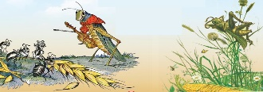
But we ants never
borrow; we ants never
lend.
But tell me, dear cricket,
Did you lay anything by
When the weather was
warm?” Quoth the cricket,
“Not I!”
My heart was so light
That I sang day and night,
For all nature looked gay.”
“For all nature looked gay”.
“You sang, Sir, you say?
Go then”, says the ant, “and dance the winter away”.
Thus ending, he hastily lifted the wicket,
And out of the door turned the poor little cricket.
Folks call this a fable. I'll warrant it true:
Some crickets have four legs, and some have two.
-Adapted from Aesop's fables
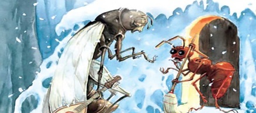
About the Author
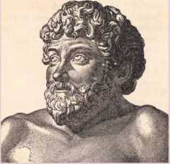
'Aesop's fables' is a collection of fables credited to Aesop, a slave and a story teller believed to have lived in ancient Greece between
620 and 564 B.C.E. These fables became popular when they emerged in print. Several stories are attributed to Aesop even today. The process of inclusion is continuous and new stories are being added. Collections of Aesop's fables were among the earliest books to be printed in many languages.
accustomed to (v) - be used to
gay (adj.) - glad, joyful
crumb (n) - piece of bread
famine (n) - extreme scarcity of food
miserly (adj.) - hesitant to spend money
quoth (v) - said (old English usage, used only in first and third person singular befor the subject)
hastily (adv.) - hurriedly
warrant (v) - guarantee, promise
DO YOU KNOW?
Cricket- a brown or black insect related to the grasshopper but with shorter legs. It is a small insect that produces short, loud sounds by rubbing its wings together.
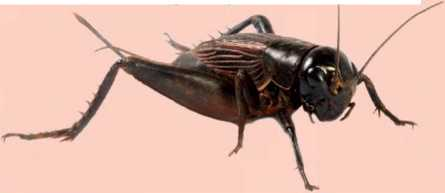
1. A silly young cricket accustomed to sing Through the warm, sunny months of gay summer and spring.
a) What was the routine of the cricket?
b) Name the seasons mentioned here.
2. Began to complain when he found that, at home,
His cupboard was empty, and winter was come.
a) Who does he refer to?
b) Why was his cupboard empty?
3. Not a crumb to be found
On the snow-covered ground;
a) What couldn't he find on the ground?
b) Why was the ground covered with snow?
4. At last by starvation and famine made bold, All dripping with wet, and all trembling with cold,
a) What made the cricket bold?
b) Why did the cricket drip and tremble?
5. Away he set off to a miserly ant, To keep if, to keep him alive, he would grant
Him shelter from rain,
And a mouthful of grain.
a) Whom did the cricket want to meet?
Why?
b) What would keep him alive?
6. But we ant never borrow; we ants never lend.
a) Why do you think ants neither borrow nor lend?
b) Who says these lines to whom?
7. “Not I!
My heart was so light
That I sang day and night,
For all nature looked gay”
a) Who does 'I' refer to?
b) What was the nature of the cricket?
How do you know?
8. Thus ending, he hastily lifted the wicket, And out of the door turned the poor little cricket,
a) The ant refused to help the cricket. Why?
b) Explain the second line.
9. He wished only to borrow;
He'd repay it tomorrow;
a) Pick out the rhyming words in the above lines.
b) Give more examples of rhyming words from the poem.
10. My heart was so light
that I sang day and night,
For all nature looked gay.
“You sang, Sir, you say”?
a) Mention the rhyme scheme employed in the above lines.
B. Based on your understanding of the poem, complete the summary using the phrases given below.
In this narrative poem, the poet brings out the idea that is essential for every creature. He conveys this message to the readers through a story of (dash)The ant spends all its summer saving (dash). The cricket (dash)happily in the summer. He (dash)anything for the winter. When winter comes, he is worried that his (dash)is empty. So, he seeks the help of the ant to have (dash)and a (dash)to stay. The cricket was even prepared to repay it in the future. The ant made it clear that ants (dash). He also enquired the cricket if it had saved anything when the weather was fine. The cricket answered that it had sung day and night enjoying (dash). The ant threw the cricket out and stated in a stern voice it should dance in the winter season too. In his concluding lines, the poet affirms that this is not (dash)but it is true and applicable to (dash)also.
(the pleasant nature, human beings, doesn't save, warm place, kitchen cupboard, just a fable, saving for future, some grains, never borrow or lend, an ant and a cricket, sings and dances)
C. Answer each of the following questions in a paragraph about 100 words.
1. 'Some crickets have four legs and some have two'. Elucidate this statement from the poet's point of view.
2. Compare and contrast the attitude of the ant and the cricket.
3. If given a chance, who would you want to be- the ant or the cricket? Justify your answer.
A box item contains phrases where the students have to use the phrases to fill the blanks given in the passage.
For read and enjoy a poem city mouse and country mouse exchange visits and change their role. The poem has a moral.
Read and Enjoy
A wealthy city mouse once came
To view his country cousin's clutter,
He stayed for lunch but all they ate
Were sandwiches of peanut butter.
You call that lunch? the rich mouse said, Call this a house?
He laughed with glee,
Come into town tonight, he said,
Step up a notch and visit me!
So in they went and to a house
With walls of stone and gardens green,
And soon were eating steaks and chops
And every kind of haute cuisine.
This is the life! said Country Mouse,
I've been a bumpkin long enough!
THEN suddenly four dogs burst in
With masters shouting, loud and gruff.
LOOK OUT! the city cousin screamed
And dove into a bag of coal,
The country mouse leaped to the floor
And ran like lightning down a hole,
And never stopped until he came
Back to his peaceful country door.
Enough! he said, of city life,
It's great-but not worth dying for.
MORAL: Peace of mind is the greatest wealth.
Matsuo Basho
This Japanese folktale is also known as 'The Story of the Aged Mother'. It highlights that the aged are sharp witted. It describes the love and affection a son and his mother have for one another.
Long, long ago there lived at the foot of the mountain a poor farmer and his aged, widowed mother. They owned a bit of land which supplied them with food, and they were humble, peaceful, and happy.
The country Shining was governed by a despotic leader who though a warrior, had a great and cowardly shrinking from anything suggestive of failing health and strength. This caused him to send out a cruel proclamation. The entire province was given strict orders to immediately put to death all aged people. Those were barbarous days, and the custom of abandoning old people to die was not uncommon. The poor farmer loved his aged mother with tender reverence, and the order filled his heart with sorrow. But no one ever thought twice about obeying the mandate of the governor, so with many deep and hopeless sighs, the youth prepared for what at that time was considered the kindest mode of death.
Just at sundown, when his day's work was ended, he took a quantity of unwhitened rice which was the principal food for the poor, and he cooked, dried it, and tied it in a square cloth, which he swung in a bundle around his neck along with a gourd filled with cool, sweet water.
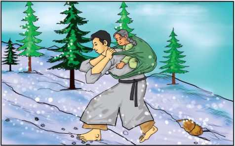
Then he lifted his helpless old mother to his back and started on his painful journey up the mountain. The road was long and steep; the narrow road was crossed and recrossed by many paths made by the hunters and woodcutters. In some place, they lost and confuses, but he gave no heed. One path or another, it mattered not. On he went, climbing blindly upward - ever upward towards the high bare summit of what is known as Obatsuyama, the mountain of the “abandoning of the aged”.
The eyes of the old mother were not so dim but that they noted the reckless hastening from one path to another, and her loving heart grew anxious. Her son did not know the mountain's many paths and his return might be one of danger, so she stretched forth her hand and snapping the twigs from brushes as they passed, she quietly dropped a handful every few steps of the way so that as they climbed, the narrow path behind them was dotted at frequent intervals with tiny piles of twigs. At last the summit was reached. Weary and heart sick, the youth gently released his burden and silently prepared a place of comfort as his last duty to the loved one. Gathering fallen pine needles, he made a soft cushion and tenderly lifted his old mother onto it. He wrapped her padded coat more closely about the stooping shoulders and with tearful eyes and an aching heart he said farewell.
The trembling mother's voice was full of unselfish love as she gave her last injunction. “Let not thine eyes be blinded, my son.” She said. “The mountain road is full of dangers. LOOK carefully and follow the path which holds the piles of twigs. They will guide you to the familiar path farther down”. The son's surprised eyes looked back over the path, then at the poor old, shriveled hands all scratched and soiled by their work of love. His heart broke within and bowing to the ground, he cried aloud: “Oh, honorable mother, your kindness breaks my heart! I will not leave you. Together we will follow the path of twigs, and together we will die!”
Once more he shouldered his burden (how light it seemed now) and hastened down the path, through the shadows and the moonlight, to the little hut in the valley. Beneath the kitchen floor was a walled closet for food, which was covered and hidden from view. There the son hid his mother, supplying her with everything she needed, continually watching and fearing she would be discovered. Time passed, and he was beginning to feel safe when again the governor sent forth heralds bearing an unreasonable order, seemingly as a boast of his power. His demand was that his subjects should present him with a rope of ashes.
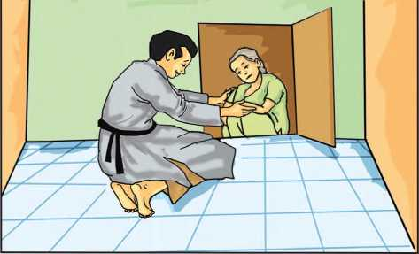
The entire province trembled with dread. The order must be obeyed yet who in all Shining could make a rope of ashes? One night, in great distress, the son whispered the news to his hidden mother. “Wait!” she said. “I will think. I will think” On the second day she told him what to do. “Make rope of twisted straw,” she said. “Then stretch it upon a row of flat stones and burn it on a windless night.” He called the people together and did as she said and when the blaze died down, there upon the stones, with every twist and fiber showing perfectly, lay a rope of ashes.
The governor was pleased at the wit of the youth and praised greatly, but he demanded to know where he had obtained his wisdom. “Alas! Alas!” cried the farmer, “the truth must be told!” and with deep bows he related his story. The governor listened and then meditated in silence. Finally he lifted his head. “Shining needs more than strength of youth,” he said gravely. “Ah, that I should have forgotten the well-known saying, “with the crown of snow, there cometh wisdom!” That very hour the cruel law was abolished, and custom drifted into as far a past that only legends remain.
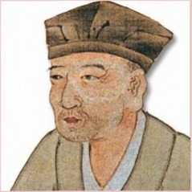
Matsuo Basho (1644-1694) is one of the most famous poets of Japan. In Japan, many of his poems are seen on monuments and traditional sites. Basho was introduced to poetry at a young age, and he quickly became well known throughout Japan. He made a living as a teacher but later travelled throughout the country to gain inspiration for his writing.
despotic (adj.) - tyrannical, cruel
proclamation (n) - announcement
barbarous (adj.) - extremely brutal or mercilessly harsh
abandon (v) - desert, give up completely
reverence (n) - deep respect
mandate (n) - an official order
summit (n) - the topmost point of a hill or mountain
injunction (n) - an order restraining someone from performing an act
shriveled (adj.) - wrinkled and contracted due to old age or due to strain
gravely (adv.) - seriously
A)Rearrange the sentences given below in the correct sequence.
1. The son made up his mind to take back his mother home.
2. A farmer decided to leave his old mother on top of a mountain.
3. The governor realized his mistake and abolished the law.
4. Once in Shining, a cruel ruler declared that all old people must be put to death.
5. Using the clever idea of his mother, the farmer made a rope of ashes.
6. When the farmer bade farewell, she advised him to return home with the aid of twigs.
7. Filled with dread, he hid his mother in his home.
8. The mother dropped the small twigs as markers on the way to help her son return.
B. Answer the following questions in one or two sentences.
1. What was the cruel announcement made by the leader?
2. Why was the farmer filled with sorrow?
3. What were the things carried by the farmer to the summit of the mountain?
4. Why did the mother become anxious as they climbed up the mountain?
5. What did the mother drop along the way?
6. What was the advice given by his mother for the safe return of her son?
7. Why did the farmer's burden seem to be light on his way back home?
8 Where did the farmer hide his mother?
9. How did the farmer make the rope of ashes? On whose suggestion did he do it?
10. How did the Governor realize his mistake?
C. Answer each of the following in a paragraph of 120 to 150 words.
1. Narrate the circumstances that led to the abandoning of the aged in Shining.
2. Describe the farmer's painful journey up the mountain.
3. 'The old are wise'. Prove this with reference to the story 'The Aged Mother.
D. Identify the character/speaker.
1. He gave orders for the aged to be put to death.
2. He considered the order to be the kindest mode of death.
3. She quietly dropped some twigs on the way.
4. Let not thine eyes be blinded.
5. Together we will follow the path , together we will die.
6. I will think. I will think.
7. The truth must be told.
8. He listened and meditated in silence.
9. Shining needs more than the strength of the youth.
10. With the crown of snow there cometh wisdom.
E. Choose the appropriate answer and fill in the blanks.
1. Shining was governed by a (dash)
leader.
a) strict
b)kind
c) cruel
d)diplomatic.
2. The (dash)was the principal food for the poor.
a) wheat
b) brown rice
c) unwhitened rice
d) millet.
3. The road was crossed and re-crossed by many path made by the (dash).
a) hunters and woodcutters
b) robbers and thieves
c) vendors and tradesmen
d) wildlife photographers and trekkers
4. Gathering (dash)he made a soft cushion and tenderly lifted his old mother onto it.
a) dry leaves
b) fallen pine
c) broken twigs
d) flowers
5. The governor demanded that his subjects should present him with a(dash)
a) basket of fruits
b) rope of ashes
c) flesh of animals
d) bag of silverwares
where QR Code and Browser for phrases and clauses is given. The students can select a content and start playing.
❖ To learn the Phrases
❖ To use appropriate verbs and create phrases
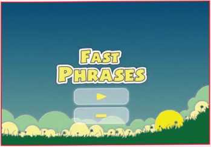
Steps
1. Type the URL link given below in the browser or scan the QR code.
2. Enable flash to play the game
3. Select any one content and start playing
4. Click the correct parts of sentences and frame meaningful sentence
5. Check your scores at the end of the game
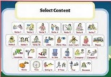
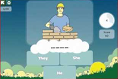
Download Link
Click the following link or scan the QR code to access the website.
https://www.gamestolearnenglish.com/fast-phrases/
** Images are indicatives only.
Four cartoon strips are given. The first picture shows a boy explaining anti rain app to his father. The second picture is about a small boy explaining the symbol of w-fi to his grandfather who has misunderstood it for a rainbow. In the third picture a small boy carries a wireless bag. The fourth picture tells about a boy who asks his father to share his wi-fi password and not to share his property. All the cartoon pictures show the advancement in technology and its influence on the younger generation.
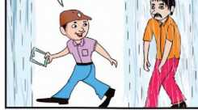
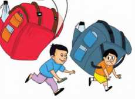
What do you infer from the above pictures?
Long Dash given to write on it.
Look at the above electronic gadgets. If you were given a chance to remodel a device, in which device you would bring in changes and what would be those changes ?
dash given. Write in three lines.
This lesson talks about the use of technology by a normal person and in empowering the disabled to do their day to day chores of life - to travel, to communicate, to learn, to do business and to live in comfort. Alisha and David's life has changed with the use of technology. Technology impacts the environment, people and the society as a whole. The way we use technology determines if its impacts are positive to the society or negative.
Have you ever thought that your refrigerator can order stuff on its own? Well, anything which is below a predefined limit or below certain threshold, can be self-ordered by the appliance. Your refrigerator can directly link to the ecommerce site and order for milk if it is about to be exhausted. Consumable products such as ink cartridges may be capable of self-ordering replacements when the current level falls below a certain threshold.
Have you ever wished you were better informed? Managing entertainment and home appliances by voice commands or by swapping the finger is a reality now. Getting bored by the program you watch on TV? Just tell your smart TV that you want to view your social feed instead. If you are struck in a traffic jam, just let your kettle make some tea for you which you can sip, piping hot, the moment you reach home. Your entire water and energy management can be taken care by automating all the activities.
Technology has not only made a normal person's life easier but it is also a boon to citizens with special needs. India is home to 2.7 crore people living with one or the other kind of disability. According to the 2011 Census, 2.21 percent of India's population is disabled. Unlike the developed world, India's disabled are deprived by attitudinal barriers as they continue to grapple with the challenges of access, acceptance and inclusion.
a. What is the future of technology?
b. How many people in India suffer with disability?
Alisha says, “I would probably still have done it because I want everyone to know the difference technology has made in my life. But it would have been frustrating and difficult.”
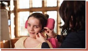
“I have cerebral palsy and I can't physically type as fast as I think or anywhere near. But right now, that's what I'm doing. I bet you're wondering how!
I am using a piece of technology called Dragon Dictate. I speak, and the words appear on my screen and then I can print them out. It's made a huge difference to me. It's made me achieve things I only dreamt of.
DO YOU KNOW?
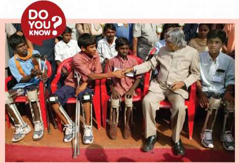
Former President A.P.J. Abdul Kalam was concerned about people with disability and, along with his team, developed lightweight prosthetics from space-age material to enable disabled children to walk easily.
I used to have a teacher, she's passed away now and one day she said to me. 'You're going to do your Maths GCSE (General Certificate of Secondary Education).' I said, 'No I'm not. Don't be silly.' I didn't think I could do anything like that. Studying was so difficult because I had to rely on someone to type everything into a computer for me.
But that's changed now. I can do it myself with my voice.
Kim, who is the Assistive Technologist at my school, introduced me to Dragon Dictate and it has opened up the world to me.
Kim showed me how to train it to understand my voice, it took a few hours. Now I use it in class and at home as well. It has made me more independent and I am now able to study on my own. So now I'm doing my Maths GCSE. I know my teacher will be proud of me.
I never thought I'd be able to do one GCSE in my life, but I'm going to do two. And I feel like I want to push myself even further. Kim says technology can help me do that, it is opening up the world for young disabled people like me.
There are many different types of technology that can help a young disabled person become independent. For example, if someone has very limited movement they can control a computer screen with Eye Gaze. That means when they're reading they can move from page to page using the pupils of their eyes. They don't need to press a button or anything.
Just one person, Kim, works with all 42 students here at my school and helps us use technology in different ways. She's amazing. I don't know what we'd do without her we'd lose out on so many opportunities.
It has opened up the world to me.
c. Who is Kim?
d. How does Kim help Alisha?
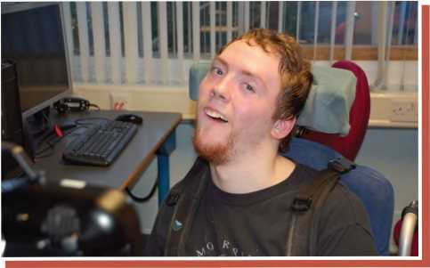
21 year old David says, “Technology is very important because it ,enables me to be communicate and be independent . which gives me freedom”
For verbal communication, David uses a Liberator Communication Device, which he controls with his eye movements. It has a Bluetooth adaptor, so it lets him use any PC or Mac by sending commands through the Liberator.
“It was a great feeling when I learnt to use it, it took me a couple of weeks. Communicating with people was very difficult before.”
He has an ACTIV controller also in the headrest of his chair in his bedroom, which means he can control his TV, Blu-Ray and music players.
David was born with Athetoid Cerebral Palsy and attends a specialist school and college. He has been using a high tech communication aid since he was eight years old and has been interested in AAC (Augmentative and Alternative Communication) and technology ever since!
When David first started out with AAC, he used a head switch to access his AAC device running a page - based system, which took lots of navigation and required a lot of effort combined with switching.
He now uses an ECO2 with ECO point, making his selections with a foot switch once he has fixed his gaze on the icon that is required. He has a smaller communication aid. It has been mounted on his walker. It is essential that much of his spare time is spent in the performing arts! David is also a keen sportsman, regularly playing football, boccia, hockey and baseball. He is a sports leader and uses his ECO2 linked to an interactive white board to teach PE lessons.
David has 144 icons on the screen that he uses with ECO point Eye Gaze. When David first tried this access method, his response was “I like it, it makes me faster, when can I have one?” Now David uses his ECO2 and ECO point to access the curriculum, study for his GCSE, order food and communicate while he is in restaurants and argue with his brother. You name it, David can communicate it!
David will now use his ECO2 to speak in complete sentences with correct syntax. It has increased the number of words he uses meaningfully and comment socially using the language of his peers, thereby becoming a confident and competent communicator. David has recently been working on idioms with his SLT, his latest being “Mum has got a lot on her plate!” David is also an advocate to other students who use AAC and shows them how easy it is to communicate using the AC method.
He controls his Play Station with a bespoke switch system, drives his electric wheelchair with head switches and uses the ECOpoint Eye Gaze system to communicate, access the computer to check on how the Chelsea football team is doing and send and receive text messages. When he is at home he also plays MP3 on his ECO2 from morning till night.
David has recently been selected to travel to Brazil to work with the Olympic opening ceremony team as part of the Remix Drama Group.
e. Why is technology important according to David?
f. Which instrument does David control with his eye movements?
g. What devices help David to move from one place to other?
INDIAN INNOVATIONS
Lechal Shoes by Krispian Lawrence: This GPS &Blutooth enabled shoes help the disabled navigate streets, based on instructions from map software on smartphone. The App also records route and counts steps.
Blee Watch by industrial designers Nupura Kirloskar and Janhavi Joshi of Mumbai. This Smart watch for the hearing impaired converts soundwaves into vibrations and colour codes to alert users to emergency sounds, and ringing doorbells. It even helps them feel the rhythm of music.
IGEST by Anil Prabhakar, IIT-M professor and co-founder of enability technologies: This wearable device tracks gestures of speech-impaired people and speaks for them.
I guess technology makes your life easier. Maybe it meansyou can keep in touch with your family, you can talk to and even see relatives who live far away. Well, Kim has shown me that technology can do even more for young disabled people like me. It can help us make friends, communicate and control our environment (like turning the lights on and out). It can help us study, get qualifications and find opportunities for work. It can make us confident and independent.
World renowned physicist Stephen Hawking is probably the best example of how Assistive Technology has helped a talented mind overcome physical impairments and contribute productively to the world. So we can now look forward to a more inclusive way of learning, instead of the cloistered existence that most differently- abled learners had to face in the past. Newer technology allows differently- abled learners to learn with their peers as well as contribute fruitfully to the collaborative process of learning. This is indeed the new era of learning - truly learning for all.
grapple (v) - to fight, especially in order to win something
cerebral palsy (n) - permanent tightening of the muscles caused by damage to the brain
Dragon Dictate (n) - a software which recognizes speech and converts it to text assistive technologist (n)- a person who assists with technological gadgets to overcome disability
gaze (v)- stare at something for a long time
Liberator Communication Device (n) - a special device used to communicate with eye movements
inclusion (n) - the act of including someone or something
cloister (adj) - enclosed by
collaborative process (adj) - produced by or involving two or more parties working together
A)Answer the following questions in two or three sentences.
l. What are the benefits of the internet to the
common man?
2. Do you think technology has improved communication? How?
3. How does David operate computers with the Liberator Communication Device?
4. Which devices are controlled using ACTIV controller?
5. Who says these words: “I want everyone to know the difference technology has made in my life”?
6. Which sftware helps Alisha to overcome her difficulty in typing?
7. Name a few Indian innovations which are helpful to the disabled and make their day to day life easier.
8. Is it possible to control the computer screen with eye gaze?
9. Suggest ways of making our society inclusive.
10. How would you help the people with disabilities in your neighborhood?
B. Answer in a paragraph of about 100-150 words.
1. How do we use technology in our day to day lives?
2. “Technology is a boon to the disabled”. Justify.
Abbreviations and acronyms are shortened forms of words or phrases. An abbreviation is typically a shortened form of words used to represent the whole (such as Dr. or Prof.) while an acronym contains a set of initial letters from a phrase that usually form another word (such as radar or scuba).
Abbreviations and acronyms are often interchanged, yet the two are quite distinct. The main point of reference is that abbreviations are merely a series of letters while acronyms form new words.
We use contractions (I'm, were) in everyday speech and informal writing. Contractions, which are sometimes called 'short forms', commonly combine a pronoun or noun and a verb, or a verb and not, in a shorter form.
Contractions with I, you, he, she, it, we, and they
'm = am (I'm)
're = are (you're, we're, they're)
s = is and has (he's, she's, it's)
've = have ('ve, you've, we've, they've)
'll = will (I'll, you'll, he'll, she'll, it'll, we'll, they'll)
'd = had and would (I'd, you'd, he'd, she'd, it'd, we'd, they'd)
Contractions with auxiliary verb and not
The contraction for not is n't:
aren't = are not (we aren't, you aren't)
can't = cannot
couldn't = could not
didn't = did not (I didn't, they didn't)
C. Pick out the contractions from the lesson and expand them.
To fill in this tabular column you have to pick out contractions from the lesson and expand them.
Contractions |
|||
Expansions |
|||
ACRONYM Acronym is a type of abbreviation where a new word is formed from the first letters of a series of words |
|||
ACRONYM Pronounced as a separate word ACRONYM All acronyms are abbreviations |
|||
ABBREVIATION refers to any shortened or contracted form of a word or phrase |
|||
ABBREVIATION Some abbreviations are not pronounced as new words |
|||
ABBREVIATION But not every abbreviation is an acronym |
|||
We can abbreviate the following: Titles before names: Mr.=Mister(for men) (plural - Misters) Mrs.=Mistress(for women) Prof=Professor(plural -Profs.) St. = Saint (plural - Sts.) Rev=Reverend(plural Revs) Hon=Honourable(plural-Hons) Jr. = Junior Pres. = President |
Names of a Few Objects: VCR = Videocassette Recorder CD = Compact Disc DVD=DigitalVideo/VersatileDisk GPS = Global Positioning System VR = Virtual reality AR = Augmented Reality TV = Television |
5.Terms of mathematical units: ft = feet ft2=square feet kg= kilogram km=kilometre mm=millimetre ml = milliliter °F=degrees Fahrenheit °C=degreesCelsius |
2. Names of Familiar Institutions: CBI = Central Bureau of Investigation IB=Intelligence Bureau IMF = Internation al Monetary Fund UN = United Nations EC = Election Commission EU = European Union IIT = Indian Institute of Technology |
Words used with numbers: a.m. = ante meridiem (before noon) p.m. = post meridiem (after noon) A.D.=anno domini B.C.E.=before common era C. E. = common era |
Common Latin terms: etc. = et cetera (and so forth) i.e. = id est(that is) e.g. = exempligratia (for example) et al. = et alii (and others) vs. = versus |
3. Names of Countries: USA = United Stated of America UK = United Kingdom UAE = United Arab Emirates |
6. Long, common phrases IQ = Intelligence Quotient mph = miles per hour mpg = miles per gallon |
In this tabular column you are asked to abbreviate the given titles names, names of objects, words used with numbers, common Latin forms, forms of mathematical units, names of familiar institutions, names of countries, and long ,common phrases.
D.Expand the following abbreviations or acronyms
SIM ISRO WHO CCTV HDMI LASER MRI CRY RAM ROM CPU ALU
E. Complete the sentences with the correct abbreviations or acronyms from the given list.
a.m. etc. BCE e.g HD m IQ GPS p.m. vs
1. My dad wakes up very early in the morning because he has to be at work at 6.00 (dash)
2. Socrates, the famous Classical Greek Athenian philosopher, died in 399 (dash)
3. Leonardo Da Vinci was a famous Italian polymath, a painter, a sculptor, an architect, a
musician, a scientist . (dash)
4. I usually return home from work at 10.30 . (dash)
5. John downloaded a clip from You Tube in(dash) quality.
6. There are many irregular verbs in the English language, (dash) break, do, make.
7. I'm watching a great football match, Barcelona(dash) Real Madrid.
8. Humans who dive without protection can survive 300 (dash)under water.
9. A 11-year-old girl just beat Einstein on an(dash) test.
10. We used the(dash) facility to track the location.
F. Listen to the passage and state whether the statements are true (T), false (F) or no information (N)?
1 Santhiya can't live without her mobile phone.
2 She got her mobile in January.
3 Her parents bought her the mobile phone one year ago.
4 There's a calculator in her mobile.
5 She can connect to the Internet on her mobile.
6 She usually listens to music on her mobile.
7 She can't read emails on her mobile.
8 There are often a lot of problems with mobile phones.
9 Santhiya always talks on her mobile to her friends.
10 She doesn't like mobile phones.
G. Listen to the passage again and answer the questions.
1 Where does Santhiya keep her mobile? (dash)
2 What can she use it for? (dash)
3 When was she cycling? (dash)
4 What happened there? (dash)
5How did Santhiya solve the problem? (dash)
H. Complete the sentences after reading the passage.
1 Santhiya's parents and friends can always(dash) her.
2 Her mobile phone is also a kind of . (dash)
3 On the cycling holiday after the accident Santhiya phoned for . (dash)
4Mobile phones often (dash)at the wrong moment.
5 Children can feel (dash)when they have their mobile phones with
them.
* Listening text is on Page - 216
PUBLIC SPEAKING SKILLS
Public speaking involves communicating information before a large audience. In public speaking, the information is purposeful and meant to inform, influence or entertain a group of listeners.
A few starters are also given for proposing the vote of thanks in the next tabular column.
A FEW STARTERS FOR WELCOME ADDRESS
❖ It is our pleasure to introduce our chief guest as the speaker for this evening. We cannot think of a person more qualified to address the audience.
❖ Young minds are like sponges and they are looking for the right input to soak it in. We cannot think of a person more suited to this than our guest of honour to whom we extend a warm and hearty welcome.
❖ It's my pride and privilege to introduce our chief guest Mr/Mrs. (or) Thiru/ Thirumathi who is very well known to you because of his service to mankind in the field of education.
A FEW STARTERS FOR VOTE OF THANKS
❖ Respected Chief guest, Principal, teachers, students, ladies, and gentlemen, good evening. It is my honour and privilege to propose the vote of thanks to this august gathering. I would like to thank Principal madam for giving me this opportunity.
❖ Today my words are not enough to express my gratitude. On behalf of the organizing committee and our school, I would like to thank our Chief Guest for the day, Mrs./ Mr./Thiru/Thirumathi, who graced the occasion with his/her presence and guidance.
❖ We are grateful to all the parents present here, your encouragement has helped us to organise such important events.
I. Prepare on any one of the topics given below and present before your English teacher.
» Prepare a welcome address on the occasion of Republic day celebration.
» Prepare a Vote of thanks on the occasion of Independence Day celebration.
» Mock anchoring for annual day celebration
» Collect images of some electronic gadgets and play a JAM (just a minute) game by picking one image and talking for a minute about it in your classroom.
To improve our reading skill a cartoon strip is given. The story of the cartoon strip is about Kavi who gets the help of her brother to complete the assignment given by her teacher. Her brother explains Kavi about the ethics of internet. The cartoon strip gives a clear picture about the vast knowledge we can get through internet. Though Kavi wanted to complete her assignment on pendulum , she gains more and enough knowledge about internet ethics
kavi’s teacher gives assignment on pendulum,she gets help from her brother
Brother ,could you explain me what is a pendulum and how it works?
I don't know exactly about it ,but we can check it out from internet and learn
He switches on the computer and connects to the internet
Come on, let's browse
A character parts of on the computer and start talking
Before searching about the pendulum do you know about Internet Ethics?
Internet Ethics??
There's a lot of information available online but we cannot own it .That's why it is not a right and its only a privilege
The world has many continents and countries which are separated by their own borders
People in different countries live with their own societies, traditions, religions, cultures, & ethics
I
Internet is a privileged to everybody but not a right
Everybody has their own values according to their tradition and history .We need to respect the value sentiments and as a part of global network .
Wow !! thank you for the information about Internet Ethics
Okay now, let's search about pendulum
Got it ! let's copy this content about pendulum.
wait for a moment do you know what is a copyright??
Mmm…Wait, copyright??
Now, you have such content and try to copied everything in internet is own by someone so how can we use it?
Oh!! Now I feel very bad it's more like stealing.
Yes ,you are right .so ,even when they put it on the internet it belongs to
them sometimes the owner attaches a note to they work asking to mention the credits.
Now I will use the copyrighted content after getting permission from the author . Thanks anna I learnt about internet ethics and I have finished my assignment.
J. Read the comic strip and answer the following questions.
1. What do you mean by cyber safety?
2. How do you behave in a virtual platform?
3. Can we read and access the information free of cost?
4. Do you think that all the information online can be used without any permission?
5. Which website do you often access? Why?
Short for electronic mail, e-mail or email is information stored on a computer that is exchanged between two users over telecommunications. More plainly, e-mail is a message that may contain text, files, images, or other attachments sent through a network to a specified individual or group of individuals.
Sample email
To Receivers email id
Cc Carbon copy to email ids
Bcc Blind carbon email ids
Subject Application for job
Your Name and Address with ZIP Code
Your Phone Number
Greetings,
I am sending this email in response to the job posting for [position] via [source of job posting]. My name is [name] and I believe I will be a good addition to your company. I graduated with a degree in [degree subject] from [name of school or university] with a focus on [major if applicable]. [Include list of achievements and credentials relevant to the job.] Attached as a file in this email is a digital copy of my resume, along with a list of my credentials. Please feel free to call me at [insert contact number] so that we may arrange for an interview. Thank you very much for your consideration, I look forward to hearing from you soon.
Sincerely yours,
[Your name and signature]
DO YOU KNOW?
The first e-mail was sent by Ray Tomlinson in 1971. Tomlinson sent the e-mail to himself as a test e-mail message, containing the text “something like QWERTYUIOP.” However, despite sending the e-mail to himself, the e-mail message was still transmitted through ARPANET.
Example greetings:
Dear + name; Hi + name; Hi; Hello + name;
Hello; To whom this may concern
Example opening sentences:
Following our recent telephonic
conversation, I'm attaching...
Please find attached the documents you
With regard to...
As we agreed at our meeting...
In response/reply to...
Example closing sentences:
I look forward to hearing from you
Please don't hesitate to contact me
Thank you in advance
I await receipt of
Finish with:
Sincerely,
Best Regards/Regards
Best wishes
K. In this given email some words are missing. You have to complete the email by filling the missing words.
EXERCISE
K. Fill in the missing words in this
email.
Dear sir,
In (dash)to your mail, I have prepared a (dash)for the Science Fest. Please find (dash)the (dash)for your kind perusal. I look (dash)to hearing from you.
Sincerely
L. Write an email to your teacher about the interesting English model that you have prepared for the literary fest.
A short description is given about , message writing. A message is an informal means of communication. The person who receives the message must be able to reproduce the information by picking out the vital bits.
MESSAGE WRITING
A Message is an informal means of communication. The receiver of the message has to sift through the given message and pick out the most vital bits of information.
Then, he/she should be able to reproduce that information in order to convey it to the person for whom it is intended.
Format
❖ Date:
❖ Time:
❖ Name of person to whom the message is directed
❖ Body of the message
❖ Name of the writer
Points to remember
❖ While writing the body of the message, the following points have to be kept in mind
❖ Only the most important details should be written.
❖ No new information should be added.
❖ Grammatically correct sentences should be used.
❖ Indirect or reported speech should be used.
❖ The message should be presented within a box.
❖ The word limit for a message is 50 words (only the words in the body of the notice are counted).
Example Message
Riya, a student of class ten, is instructed by her teacher to convey to her classmates about the English Literary club competitions which are to be held on 10 .04.2019 in a nearby Government school.
An example message is given. Riya is instructed by her teacher to convey to her classmates about the English Literary club competition. The message is given by Riya with necessary details like date, venue and the matter needed.
MESSAGE
Box text begins
04 April 2019
Dear Friends
Our teacher has asked me to inform all of you about the English Literary club competitions to be held on 9th of April at the nearby Government Higher Secondary School. Kindly get permission from your parents to attend the event. If you wish to participate in the competitions contact me at the earliest.
Srikanth
Box text ends
In this given message blank you have to write a message , imagining yourself as the receptionist of your school. Your headmaster has asked you to send a message to all the parents of class 10, to attend the PTA meeting.
M. PRACTICE EXERCISE
You are the receptionist of your school. Your Head master instructs you to send a message to all the parents of class ten to attend a PTA (Parent Teacher Association) meet which is to be held
(dash)
(dash)
(dash)
Creative Writing
Let us Become Blog writers
Box text begins
A blog is a type of website that focuses mainly on written content, also known as blog posts. In popular culture we most often hear about news blogs or celebrity blog sites. Bloggers often write from a personal perspective that allows them to connect directly with their readers.
In addition, most blogs also have a “comments” section where readers can correspond with the blogger. Interacting with your readers in the comments section helps to further the connection between the blogger and the readers
How to Start a Blog?
Create a blog in about 20 minutes following these steps:
Pick a blog name. Choose something descriptive.
Get your blog online. Register your blog and get hosting.
Customize your blog. Choose a free template and tweak it.
Write and publish your first post. The fun part!
N. Write about Your Favourite Sports person/ Famous personality/Hobby/ Recipe by starting your own blog.
A pronoun is a word or phrase that substitutes a noun or a noun phrase. There are ten types of pronouns generally used.
Read the stories of Ravi and Rani.
Two different descriptions are given about Ravi and Rani. In the image given their names are repeated often. After reading the descriptions, you have to rewrite the passage with the help of pronouns wherever necessary.
Ravi is an intelligent boy. Ravi lives in a small village. A chill breeze touches the skin, a cool lake with swans swimming on the lake catches the eyesight. Ravi loves nature a lot. Ravi is studying in class ten in a government school. Ravi loves helping others. When a woman was crossing the road with heavy luggage, Ravi asked the woman, “May I help you?” and carried the luggage and dropped the luggage at home. The woman thanked Ravi for the help.
Rani is a brilliant girl. Rani lives in an urban area where huge buildings touch the sky, buzzing noise of traffic hit the ears and crowds move busily towards work. One day when Rani was on the way to school, Rani saw a dog hurt by a moving scooter. At once Rani went near the dog, lifted the dog and rushed to a veterinary doctor. The dog, after recovering, shook the tail to thank Rani.
A. Write the words that can replace Ravi, Rani, woman, luggage and the dog when we use them for the second and subsequent times in the passage , , (dash) (dash) (dash)
These words are called (dash)?
A flow chart which explains the various types of relative pronoun and personal pronouns are given with explanations and examples.
Whom, Which |
Which shows relation |
Relative |
Pronoun |
Personal |
Pronoun that indicates person |
He, She, It We, You, They |
|
Demonstrative |
Interrogative |
||||||
This, That, These, Those |
Indefinite |
Distributive |
|||||
Which demonstrates a noun, an object, a complement |
Emphatic |
Reflexive |
|
Which, Who, Whom whose |
|||
Reciprocal |
Which ask a question |
||||||
All, some, one, many, few somebody, nobody |
Exclamatory |
||||||
Which distributes a group or a pair |
Each, Every, Either, Neither, Anyone, None |
||||||
Myself, Himself, Herself |
Which reflects the action towards the subjects used after the verb |
||||||
Which is indefinite |
Herself Yourself, Himself, Ourself |
||||||
What |
Which is used for emphasis before the verb |
||||||
one Another, Each other |
|||||||
hich express surprise or sudden feeling |
Which shows relation with one another |
||||||
B. Fill in the gaps with personal pronouns.
Kumaravel lives in Thiruvannamalai. (dash) is a doctor. All the people like (dash)because of (dash) helping nature. (dash) hospital is located at Car street and most of (dash) patients are poor so (dash) does not charge much money.
(dash) daughter goes to school. (dash) studies in 5th Standard. (dash) teachers love (dash) very much. (dash) friends are also very good. (dash)
always encourage (dash). (dash) have given (dash) good advice. (dash)
mother is also a teacher. (dash) always encourages (dash) to keep studying. I also
like her as (dash) often comes to (dash) house. One day (dash) told my mother that (dash) wants to learn cooking. (dash) mother taught (dash) cooking.
Now, (dash) cooks well.
C. Fill in the gaps with appropriate Pronouns.
1. (dash) is an excellent opportunity.
2. (dash) of these two students can solve this question.
3. (dash) books have been written by a great Indian writer.
4. (dash) have come to know the truth.
5. (dash) of the students have passed the exam.
6. (dash) of your friends can guide you.
7. (dash) is your story based on your real life.
8. (dash) All your friends will guide (dash)
9. (dash) of his family members would come to visit you.
10. (dash) of those books will be helpful to you.
11. (dash) is your bag, you can take it anytime.
12. (dash) He (dash) is responsible for the downfall of his life.
D. Join the sentences using ' Relative Pronouns'.
1. I have book. It is written by Rabindranath Tagore.
2. Kavita is my teacher. She teaches us English.
3. This is Varun. His father is an architect.
4. She invited most of her friends. They attended the party.
5. Give me a pen to write a letter. It was gifted to you on your birthday.
6. I have sold the house. It was located at the bank of a river.
7.Here is your watch. It has been found in the garden.
REPORTED SPEECH
1. There are two main types of speech: direct speech and indirect or reported speech.
2. Direct speech repeats the exact words the person used, or how we remember their words.
3. Reported speech is how we represent the speech of other people or what we ourselves say.
E. Read the different verb forms where they remain the same in the direct and indirect speech in the following cases. Fill in the blanks with missing indirect speech.
1. If the reporting verb is in the present tense.
I am enjoying my holiday.”)
Krish says that he is enjoying his holiday.
I will never go to work.
Kavi says that (dash)
2. When we report a universal truth (something that is always true)
Asia is the largest continent.
Balu said that Asia is the largest continent.
People in Africa are starving.
Alisha said that (dash)
(dash)
3. With modal verbs would, might, could, should, ought to, used to.
I might come.
Shalini said that she might come.
I would try it.
Vinoth said that (dash)
(dash)
4 With would rather, had better
I would rather fly.
Chitti said that he would rather fly.
They had better go.
Sophia said that
(dash)
5. In if-clauses and time-clauses
If I tidied my room, my dad would be happy
Sriram said that if he tidied his room, his dad would be happy.
When I was staying in Madurai I met my best friend.
Jaheer said that (dash)
(dash)
6. We do not usually change the modal verbs must and needn't. But must can become had to or would have to and needn't can become didn't have to or wouldn't have to if we want to express an obligation. Would/wouldn't have to are used to talk about future obligations.
I must wash up.
She said that she must wash up / she had to wash up.
We must do it in June.
He said that (dash)
The different verb forms which remain the same in direct and indirect speech are given with the help of pictures which depicts conversations. When the reporting verb is in present tense, when it is a universal truth, the modal verbs, with would, when if-clause and time clause we don’t change some words. You find some blanks also which has to be filled in after understanding the examples.
F. Read the following dialogue and report it.
Johnson : “What are you doing here, Suganthi? I haven't seen you since June.”
Suganthi : “I've just come back from my holiday in Ooty.”
Johnson : “Did you enjoy it?”
Suganthi : “I love Ooty. And the people were so friendly.”
Johnson : “Did you go to Coakers Walk?”
Suganthi : “It was my first trip. I can show you some pictures. Are you doing anything tomorrow?”
Johnson : “I must arrange a couple of things. But I am free tonight.”
Suganthi : “You might come to my place. At what time shall we meet?”
Johnson : “I'll be there at eight. Is it all right?”
Johnson asked Suganthi (dash). And he said (dash) since June.
Suganthi explained that (dash) back from her holiday in Ooty. Johnson wondered
if (dash) it. Suganthi told him that she (dash) Ooty and that the people (dash) so friendly. Johnson wanted to know (dash) to the Coakers Walk. Suganthi said that it (dash) first trip and that she (dash) some
pictures. And then she asked him if he (dash) Johnson explained that he (dash) a couple of things. But he added that he (dash) free at night. Suganthi suggested that he (dash) place and asked him at what time (dash).
Johnson said he (dash) there at eight. And finally he asked (dash) all right.
In this given tabular column direct speech is given on one side and the various indirect speech formats are given in the other side. You have to tick the correct form of indirect speech for the given statement or question.
G. Tick the right choice (Indirect Speech).
Direct Speech 1. “Who took my English book?” He was curious to know who...
2. “Where does Helen live?” Jim wants to know where...
3. “Why do volcanoes erupt?” She wondered why...
4. “Do you know why she is unhappy?” He asked me if .... unhappy
5. “How many photos have you got?” He wants to know how many.... |
Indirect Speech a. took my English (dash) b. had taken his English book. (dash) c. takes his English book. (dash) d. has taken my English book. (dash) a. Helen lived. (dash) b. Helen lives. (dash) c. Helen had lived. (dash) d. does Helen live? (dash) a. volcanoes erupt. (dash) b. volcanoes had erupted. (dash) c. volcanoes erupted. (dash) d. did volcanoes erupt? (dash) a. I know why she is (dash) b. you know why she was (dash) c. did I know why she was (dash) d. I knew why she was (dash) a. photos I had got. (dash) b. photos you have got. (dash) c. photos had I got? (dash) d. photos I have got. (dash) |
Rudyard Kipling
The poem deals with the problem of modern technology and automation. In the beginning the reader gets informed about how machines are produced and what kind of treatment they need. Afterwards the machines explain how they can serve humanity. The poem ends with the statement that machines, although capable of great deeds, are still nothing more than creations of the human brain.
We were taken from the ore-bed and the mine,
We were melted in the furnace and the pit
We were cast and wrought and hammered to design,
We were cut and filed and tooled and gauged to fit.
Some water, coal, and oil is all we ask,
And a thousandth of an inch to give us play:
And now, if you will set us to our task,
We will serve you four and twenty hours a day!
We can pull and haul and push and lift and drive,
We can print and plough and weave and heat and light,
We can run and race and swim and fly and dive,
We can see and hear and count and read and write!
But remember, please, the Law by which we live,
We are not built to comprehend a lie,
We can neither love nor pity nor forgive,
If you make a slip in handling us you die!
Though our smoke may hide the Heavens from your eyes,
It will vanish and the stars will shine again,
Because, for all our power and weight and size,
We are nothing more than children of your brain!
Rudyard Kipling
About the poet
Rudyard Kipling was born on December 30, 1865, in Bombay, India. He was educated in England but returned to India in 1882. A decade later, Kipling married Caroline Balestier and settled in Brattleboro, Vermont, where he wrote The Jungle Book (1894), among a host of other works that made him hugely successful. Kipling was the recipient of the 1907 Nobel Prize in Literature. He died in 1936.
Glossary
furnace (n) - an enclosed structure in which material is heated to very high temperatures
wrought (adj.) - beaten out of shape by hammering
gauge (n) - an instrument that measures perfection in appearance and quality
thousandth (adv.) - a fraction of thousand
haul (v) - pull or drag with effort or force
comprehend(v) - grasp, understand
vanish(v) - disappear suddenly and completely
A. Answer the following questions briefly.
1. Who does 'we' refer to in first stanza?
a. Human beings b. Machines
2. Who are the speakers and listeners of this poem?
3. What metals are obtained from ores and mines? Iron ore
4. Mention a few machines which are hammered to design.
5. Mention the names of a few machines that run on water, coal or oil.
6. Mention a few machines used for pulling, pushing, lifting, driving, printing, ploughing, reading, and writing etc.
7. Are machines humble to accept the evolution of human brain? Why?
8. What feelings are evoked in us by the machines in this poem?
9. And a thousandth of an inch to give us play:'
Which of the following do the machines want to prove from this line?
a. Once Machines are fed with fuel, they take a very long time to start.
b. Once Machines are fed with fuel, they start quickly.
10. And now, if you will set us to our task,
We will serve you four and twenty hours a day!
a. Who does the pronoun 'you' refer to here?
b. Whose task is referred to as 'our task' here?
c. Open conditional clause is used in the given line. Why is the future tense 'will set' and 'will serve' used both in the 'if clause' and in the 'main clause?'
d. Do the machines serve us twenty four hours a day?
e. Rewrite the given lines with the ending '365 days a year.'
POETIC DEVICES
1) Rhythm and rhyme:
Rhyme Scheme
Rhyme scheme is a poet's deliberate pattern of lines that rhyme with other lines in a poem or a stanza. The rhyme scheme, or pattern, can be identified by giving end words that rhyme.
But remember, please, the Law by which we live (dash)a
We are not built to comprehend a lie (dash)b
We can neither love nor pity nor forgive (dash)a
If you make a slip in handling us you die (dash)b
It has a clear rhyming words with a,b,a,b so the rhyming scheme is a,b,a,b.
The rhyme is also clear with the same sound.
E.g. pit-fit, ask-task, play-day
2) Imagery:
E.g. The descriptions create a picture in the reader's mind
We can see and hear and count and read and write!
The example explains to us the many tasks that could be completed by the machine.
3) Personification:
Personification is a figure of speech in which a thing - an idea or an animal - is given human attributes.
E.g. We can pull and haul and push and lift and drive
4) Assonance:
Repetition of two or more vowel sounds
E.g. all we ask
5) Connotation:
Suggests beyond what it expresses
E.g. Though our smoke may hide the Heavens from your eyes,
6) Alliteration:
Repetition of two or more consonant sounds
E.g. We can print and plough and weave and heat and light,
Activity
B. Write your favourite stanza from the poem and find the rhyming scheme.
(dash)
(dash)
(dash)
(dash)
C. Read the poem and find the lines for the following poetic devices or write your own example.
Alliteration
(dash)
(dash)
Assonance
(dash)
(dash)
Personification
(dash)
(dash)
Simile
(dash)
(dash)
Jules Verne
This story speaks about the people of the twenty-ninth century who live in fairyland. Surfeited as they are with marvels, they are indifferent to the presence of each new marvel. To them all seem natural.
The year is 2889, the date 25th July and the place is the office block of the Managing Editor of the Earth Herald, the world's largest newspaper.
In this futuristic story written in 1889, the writer describes how he visualizes the world a thousand years later - a world of technological advancements where newspapers are not printed but 'spoken'.
Read the following excerpt for a glimpse of this future world.
That morning Francis Bennett awoke in rather a bad temper. This was eight days since his wife had been in France and he was feeling a little lonely. As soon as he awoke, Francis Bennett switched on his phonotelephote whose wires led to the house he owned in the Champs-Elysees.
The telephone, completed by the telephote, is another of our time's conquests! Though the transmission of speech by the electric current was already very old, it was only since yesterday that vision could also be transmitted. A valuable discovery, and Francis Bennett was by no means the only one to bless its inventor when, in spite of the enormous distance between them, he saw his wife appear in the telephotic mirror. 'Francis ... dear Francis!...'
His name, spoken by that sweet voice, gave a happier turn to Francis Bennett's mood. He quickly jumped out of bed and went into his mechanized dressing room. Two minutes later, without needing the help of a valet, the machine deposited him, washed, shaved, shod, dressed and buttoned from top to toe, on the threshold of his office. The day's work was going to begin.
Francis Bennett went on into the reporters' room. His fifteen hundred reporters, placed before an equal number of telephones, were passing on to subscribers the news which had come in during the night from the four quarters of the earth. In addition to his telephone, each reporter has in front of him a series of commutators, which allow him to get into communication with this or that telephotic line.
Thus the subscribers have not only the story but the sight of these events.
Francis Bennett questioned one of the ten astronomical reporters - a service which was growing because of the recent discoveries in the stellar world.
'Well, Cash, what have you got?'
'Phototelegrams from Mercury, Venus and Mars, Sir.'
'Interesting! And Jupiter?'
'Nothing so far! We haven't been able to understand the signals the Jovians make. Perhaps ours haven't reached them?
'Aren't you getting some result from the moon, at any rate?'
'Not yet, Mr Bennett.'
'Well, this time, you can't blame optical science! The moon is six hundred times nearer than Mars, and yet our correspondence service is in regular operation with Mars. It can't be telescopes we need...'
'No, it's the inhabitants,' Corley replied.
'You dare tell me that the moon is uninhabited?'
'On the face it turns towards us, at any rate, Mr Bennett. Who knows whether on the other side...'
'Well, there's a very simple method of finding out.'
'And that is?'
'To turn the moon round!'
And that very day, the scientists of the Bennett factory started working out some mechanical means of turning our satellite right round.
On the whole, Francis Bennett had reason to be satisfied. One of the Earth Herald's astronomers had just determined the elements of the new planet Gandini. It is at a distance of 12,841,348,284,623 metres and 7 decimetres that this planet describes its orbit round the sun in 572 years, 194 days, 12 hours, 43 minutes, 9.8 seconds. Francis Bennett was delighted with such precision.
'Good!' he exclaimed. 'Hurry up and tell the reportage service about it. You know what a passion the public has for these astronomical questions. I'm anxious for the news to appear in today's issue!'
The next room, a broad gallery about a quarter of a mile long, was devoted to publicity, and it well may be imagined what the publicity for such a journal as the Earth Herald had to be. It brought in a daily average of three million dollars. They are gigantic signs reflected on the clouds, so large that they can be seen all over a whole country. From that gallery a thousand projectors were unceasingly employed in sending to the clouds, on which they were reproduced in colour, these inordinate advertisements.
At that moment the clock struck twelve. The director of the Earth Herald left the hall and sat down in a rolling armchair. In a few minutes he had reached his dining room half a mile away, at the far end of the office.
The table was laid and he took his place at it. Within reach of his hand was placed a series of taps and before him was the curved surface of a phonotelephote, on which appeared the dining room of his home in Paris. Mr and Mrs Bennett had arranged to have lunch at the same time - nothing could be more pleasant than to be face to face in spite of the distance, to see one another and talk by means of the phonotelephotic apparatus.
Like everybody else in easy circumstances nowadays, Francis Bennett, having abandoned domestic cooking, is one of the subscribers to the Society for Supplying Food to the Home, which distributes dishes of a thousand types through a network of pneumatic tubes. This system is expensive, no doubt, but the cooking is better. So, not without some regret, Francis Bennett was lunching in solitude. He was finishing his coffee when Mrs Bennett, having got back home, appeared in the telephote screen.
When he had finished his lunch, he went across to the window, where his aero-car was waiting.
'Where are we going, Sir?' asked the aero-coachman. 'Let's see. I've got time...' Francis Bennett replied. 'Take me to my accumulator works at Niagara.'
The aero-car shot across space at a speed of about four hundred miles an hour. Below him were spread out the towns with their moving pavements which carry the wayfarers along the streets, and the countryside, covered, as though by an immense spider's web, by the network of electric wires.
Within half an hour, Francis Bennett had reached his works at Niagara, where, after using the force of the cataracts to produce energy, he sold or hired it out to the consumers. Then he returned, by way of Philadelphia, Boston and New York, to Centropolis, where his aero-car put him down about five o'clock.
The waiting-room of the Earth Herald was crowded. A careful lookout was being kept for Francis Bennett to return for the daily audience he gave to his petitioners. Among their different proposals he had to make a choice, reject the bad ones, look into the doubtful ones, and welcome the good ones.
He soon got rid of those who had only useless or impracticable schemes. A few of the others received a better welcome, and foremost among them was a young man whose broad brow indicated a high degree of intelligence.
'Sir', he began, 'though the number of elements used to be estimated at seventyfive, it has now been reduced to three, as no doubt you are aware?'
'Perfectly,' Francis Bennett replied.
'Well, Sir, I'm on the point of reducing the three to one. If I don't run out of money I'll have succeeded in three weeks.'
'And then?'
'Then, Sir, I shall really have discovered the absolute'.
'And the results of that discovery?'
'It will be to make the creation of all forms of matter easy - stone, wood, metal, fibrin....'
'Are you saying you're going to be able to construct a human being?'
'Complete... The only thing missing will be the soul!'
Francis Bennett assigned the young fellow to the scientific editorial department of his journal.
A second inventor, using as a basis some old experiments that dated from the 19th century, had the idea of moving a whole city in a single block. He suggested, as a demonstration, the town of Saaf, situated fifteen miles from the sea; after conveying it on rails down to the shore, he would transform it into a seaside resort. Francis Bennett, attracted by this project, agreed to take a half-share in it.
The proposals heard and dealt with, Francis Bennett went to stretch himself out in an easy-chair in the audition-room. Then, pressing a button, he was put into communication with the Central Concert. After so busy a day, what charm he found in the works of our greatest masters, based on a series of delicious harmonicoalgebraic formulae! During his meal, phonotelephotic communication had been set up with Paris.
'When do you expect to get back to Centropolis, dear Edith?' asked Francis Bennett.
'I'm going to start this moment'.
'By tube or aero-train?'
'By tube'.
'Then you'll be here?'
'At eleven fifty-nine this evening'.
'Paris time?'
'No, no!... Centropolis time'.
'Goodbye then, and above all don't miss the tube!'
These submarine tubes, by which one travels from Paris in two hundred and ninety-five minutes, are certainly much preferable to the aero-trains, which only manage six hundred miles an hour.
Francis Bennett, very tired after so very full a day, decided to take a bath before going to bed. There was always a bath already in the office. He touched the button. A rumbling sound began, got louder, increased... Then one of the doors opened and the bath appeared, gliding along on its rails...
About the author
Jules Verne (1828-1905) was a French poet, playwright and novelist but he earns his place on this list of great writers because of his futuristic adventure novels. He has been called the father of science fiction and has had an incalculable influence on the development of science fiction writing. More interesting, perhaps, is his place as a prophet or predictor of technology which wasn't to be invented until long after his death. He put a man on the moon, including its launch from a Florida launchpad to its splashdown in the Pacific; in 1863 he predicted the internet: Paris in the 20th Century (1863) depicts the details of modern life: skyscrapers, television, Maglev trains, computers, and a culture preoccupied with the Internet.
phonotelephote(n) - A means of transmitting and receiving both voice and picture for a personal conversation
Champs-Elysees(n) - a prestigious avenue in Paris, famous for the Cafes, cinemas and shops
phototelegrams (n) - A telegraphic transmission including images
jovians(n - inhabitants of planet Jupiter
inhabitants(n) - a person or animal that lives in or occupies a place.
Centropolis (n) - (in this story) the new name of New York in 2889
valet(n) - a man's personal male attendant, who is responsible for his clothes and appearance
A)Answer the following questions in two or three lines.
1. Why did Francis Bennett wake up with a bad temper?
2. What was a mechanized dressing room?
3. How was food served to him?
4. Why was Bennett curious about astronomy?
5. Why did he visit Niagara?
6. How did Bennett travel?
7. Give three instances of how mechanization has changed life at home in 2889?
8. How is advertising in this age different from what we have today?
B. Identify the character/speaker.
1. As soon as he woke up, he switched on his phonotelephote.
2. Well, Cash, what have you got?
3. 'Phototelegrams from Mercury, Venus and Mars, Sir.'
4. 'Interesting! And Jupiter?'
5. 'Not yet, Mr.Bennett.'
6. 'No, it's the inhabitants.'
7. 'Where are we going, Sir?'
8. 'Then, Sir, I shall really have discovered the absolute.'
9. 'Are you saying you're going to be able to construct a human being?'
10. 'I'm going to start this moment.'
C. Choose the best answer.
1. Bennette's wife was in (dash) ,
i) Germany ii) Australia iii) France iv)Holland
2. The data from the stellar world was gathered by (dash).
i)Bennette ii)astronomical reporters iii) the computer iv) telephote
3. The food was being delivered through (dash) tubes.
i) pneumatic ii) shallow iii) hollow iv) virtual
4. The wayfarers were carried to one place to another by the (dash).
i) bullet train ii) jet iii) moving pavement iv) heli-taxi
You have to fill in the story map which has various headings like title, setting, characters, problems and provision is given to share your views too.
D. Fill in the story map given below.
Title (dash)
Setting (dash)
Characters (dash)
Problems (dash)
Your views (dash)
ICT Corner usage of pronouns to make meaningful sentences. Step by step process is given for easy understanding A QR code is also given .
❖To learn the usage of Pronouns
❖ To make meaningful
sentences
Steps
1. Type the URL link given below in the browser or scan the QR code.
2. Read the notes related to pronouns
3. Enable flash to play game 1.
4. Click the balloons in correct order to create sentences
5. Click the second game link and practice framing sentences using pronouns.
Download Link
Click the following link or scan the QR code to access the website.
https://learnenglishkids.britishcouncil.org/grammar-practice/ pronouns
** Images are indicatives only.
The given picture of a globe is to be filled in with an Acrostic poem(Sentence beginning with the first letter of P-E-A-C-E)
A. Fill the globe with an acrostic poem.
B. Picture of two hands holding the earth - How can you, make the world a better place for others.
C. Picture of dove- What does it symbolise ?
D. The logo of various UN organisations are given. We have to fill in the blanks with the names of the organisations.
Dash
Dash
Dash
Dash
D. Find the names of the various UN organizations with the logo given below and fill in the blanks.
Alphonse Daudet
This lesson is set in the days of France-Prussian war. France was ruled by Bismarck. Prussia then consisted of what now are the nations of Germany, Polland, and parts of Austria. The Prussians defeated the French and the districts of Alsace and Lorraine fell into the hands of the Prussians. The oppressors not only wanted the territory but dominated over the language and culture of the Germans, thus to take away their identity. Read the lesson to find out what impact this had on life at school.
I started for school very late that morning and was in great dread of a scolding, especially because M. Hamel had said that he would question us on participles, and I did not know the first word about them. For a moment I thought of running away and spending the day out of doors. It was so warm, so bright! The birds were chirping at the edge of the woods; and in the open field back of the saw mill the Prussian soldiers were drilling. It was all much more tempting than the rule for participles, but I had the strength to resist, and hurried off to school.
When I passed the town hall there was a crowd in front of the bulletin-board. For the last two years all our bad news had come from there - the lost battles, the draft, the orders of the commanding officer - and I thought to myself, without stopping, “What can be the matter now?”
Then, as I hurried by as fast as I could go, the blacksmith, Wachter, who was there, with his apprentice, reading the bulletin, called after me, “Don't go so fast, bub; you'll get to your school in plenty of time!”
I thought he was making fun of me, and reached M. Hamel's little garden all out of breath.
Usually, when school began, there was a great bustle, which could be heard out in the street, the opening and closing of desks, lessons repeated in unison, very loud, with our hands over our ears to understand better, and the teacher's great ruler rapping on the table. But now it was all so still! I had counted on the commotion to get to my desk without being seen; but, of course, that day everything had to be as quiet as Sunday morning. Through the window I saw my classmates, already in their places, and M. Hamel walking up and down with his terrible iron ruler under his arm. I had to open the door and go in before everybody. You can imagine how I blushed and how frightened I was.
But nothing happened. M. Hamel saw me and said very kindly, “Go to your place quickly, little Franz. We were beginning without you.”
a. What kind of news was usually put up on the bulletin board?
b. What was the usual scene when school began everyday?
I jumped over the bench and sat down at my desk. Not till then, when I had got a little over my fright, did I see that our teacher had on his beautiful green coat, his frilled shirt, and the little black silk cap, all embroidered, that he never wore except on inspection and prize days. Besides, the whole school seemed so strange and solemn. But the thing that surprised me most was to see, on the back benches that were always empty, the village people sitting quietly like ourselves; old Hauser, with his three-cornered hat, the former mayor, the former postmaster, and several others besides. Everybody looked sad; and Hauser had brought an old primer, thumbed at the edges, and he held it open on his knees with his great spectacles lying across the pages.
While I was wondering about it all, M. Hamel mounted his chair, and, in the same grave and gentle tone which he had used to me, said, “My children, this is the last lesson I shall give you. The order has come from Berlin to teach only German in the schools of Alsace and Lorraine. The new master comes tomorrow. This is your last French lesson. I want you to be very attentive.”
What a thunderclap these words were to me!
Oh, the wretches; that was what they had put up at the town-hall!
My last French lesson! Why, I hardly knew how to write! I should never learn anymore! I must stop there, then! Oh, how sorry I was for not learning my lessons, for seeking birds' eggs, or going sliding on the *Saar! My books, that had seemed such a nuisance a while ago, so heavy to carry, my grammar, and my history of the saints, were old friends now that I couldn't give up. And M. Hamel, too; the idea that he was going away, that I should never see him again, made me forget all about his ruler and how cranky he was.
c. Other than the students, who were present in the class?
d. Why did Mr. Hamel say it was the last French lesson?
Poor man! It was in honour of this last lesson that he had put on his fine Sunday clothes, and now I understood why the old men of the village were sitting there in the back of the room. It was because they were sorry, too, that they had not gone to school more. It was their way of thanking our master for his forty years of faithful service and of showing their respect for the country that was theirs no more.
While I was thinking of all this, I heard my name called. It was my turn to recite. What would I not have given to be able to say that dreadful rule for the participle all through, very loud and clear, and without one mistake? But I got mixed up on the first words and stood there, holding on to my desk, my heart beating, and not daring to look up.
I heard M. Hamel say to me, “I won't scold you, little Franz; you must feel bad enough. See how it is! Every day we have said to ourselves, 'Bah! I've plenty of time. I'll learn it tomorrow.' And now you see where we've come out. Ah, that's the great trouble with Alsace; she puts off learning till tomorrow. Now those fellows out there will have the right to say to you, 'How is it; you pretend to be Frenchmen, and yet you can neither speak nor write your own language?' But you are not the worst, poor little Franz. We've all a great deal to reproach ourselves with.”
“Your parents were not anxious enough to have you learn. They preferred to put you to work on a farm or at the mills, so as to have a little more money. And I? I've been to blame also. Have I not often sent you to water my flowers instead of learning your lessons? And when I wanted to go fishing, did I not just give you a holiday?”
e. What was Franz asked to tell? Was he able to answer?
f. Why did Mr.Hamel blame himself?
Then, from one thing to another, M. Hamel went on to talk of the French language, saying that it was the most beautiful language in the world - the clearest, the most logical; that we must guard it among us and never forget it, because when a people are enslaved, as long as they hold fast to their language it is as if they had the key to their prison. Then he opened a grammar and read us our lesson. I was amazed to see how well I understood it. All he said seemed so easy, so easy! I think, too, that I had never listened so carefully, and that he had never explained everything with so much patience. It seemed almost as if the poor man wanted to give us all he knew before going away, and to put it all into our heads at one stroke.
After the grammar, we had a lesson in writing. That day M. Hamel had new copies for us, written in a beautiful round hand - France, Alsace, France, Alsace. They looked like little flags floating everywhere in the school-room, hung from the rod at the top of our desks. You ought to have seen how everyone set to work, and how quiet it was! The only sound was the scratching of the pens over the paper. Once some beetles flew in; but nobody paid any attention to them, not even the littlest ones, who worked right on tracing their fish-hooks, as if that was French, too. On the roof the pigeons cooed very low, and I thought to myself, “Will they make them sing in German, even the pigeons?”
Whenever I looked up from my writing I saw M. Hamel sitting motionless in his chair and gazing first at one thing, then at another, as if he wanted to fix in his mind just how everything looked in that little school-room. Fancy! For forty years he had been there in the same place, with his garden outside the window and his class in front of him, just like that. Only the desks and benches had been worn smooth; the walnut-trees in the garden were taller, and the hopvine that he had planted himself twined about the windows to the roof. How it must have broken his heart to leave it all, poor man; to hear his sister moving about in the room above, packing their trunks! For they must leave the country next day.
g. What did M. Hamel say about the French language?
h. How many years had M. Hamel been in the village?
But he had the courage to hear every lesson to the very last. After the writing, we had a lesson in history, and then the babies chanted their ba, be bi, bo, bu. Down there at the back of the room old Hauser had put on his spectacles and, holding his primer in both hands, spelled the letters with them. You could see that he, too, was crying; his voice trembled with emotion, and it was so funny to hear him that we all wanted to laugh and cry. Ah, how well I remember it, that last lesson!
All at once the church-clock struck twelve. Then the *Angelus. At the same moment the trumpets of the Prussians, returning from drill, sounded under our windows. M. Hamel stood up, very pale, in his chair. I never saw him look so tall.
“My friends,” said he, “I-I-” But something choked him. He could not go on.
Then he turned to the blackboard, took a piece of chalk, and, bearing on with all his might, he wrote as large as he could ―* “Vive La France!”
Then he stopped and leaned his head against the wall, and, without a word, he made a gesture to us with his hand - “School is dismissed - you may go.”
About the author
Alphonse Daudet (1840-1897) was a French novelist and short-story writer. The Last Lesson is set in the days of the Franco-Prussian War (18701871) in which France was defeated by Prussia led by Bismarck. Prussia then consisted of what now are the nations of Germany, Poland and parts of Austria. In this story the French districts of Alsace and Lorraine have passed into Prussian hands.
chirping (v) - making a short, sharp high pitched sound (usually by small. birds or insects)
bustle (v) - move in an energetic manner
unison (n) - simultaneous utterance of words
rapping (v) - striking with a series of rapid audible blows
thumbed (v) - a book which has been read often and bearing the marks of frequent handling
cranky (adj.) - strange
Saar - a river in northeastern France and western Germany
Angelus (n) - a Roman Catholic devotion commemorating the Incarnation of Jesus and including the Hail Mary, said at morning, noon, and sunset.
“Vive la France!” - is an expression used in French to show patriotism. It›s difficult to translate the term literally into English, but it generally means “Long live France!”
A)Answer the following questions in two or three sentences:

1. Why did Franz dread to go to school that day?
2. What were the various
things that tempted Franz to spend his day outdoors?
3. Why was the narrator not able to get to his desk without being seen?
4. What was Frank sorry for?
5. Why were the old villagers sitting in the last desk?
6. What were the thoughts of the narrator's parents?
7. Why does M. Hamel say that we must guard our language?
8. M. Hamel was gazing at many things. What were they?
9. When and how did M. Hamel bid farewell to the class?
B. Answer the following questions in about 100-150 words:
1. We appreciate the value of something only when we are about to lose it. Explain this with reference to the French language and M.Hamel.
2. Give an account of the last day of M.Hamel in school.
In the given tabular column A the idiomatic expression has to be matched with a single word equivalent given in column B.
C. In column A are some of the idiomatic phrases from the essay. Match them with equivalent single words in column B:
A |
B |
go far |
reveal |
blow up |
submit |
show up |
explode |
call on |
succeed |
break off |
finish |
knuckle under |
require |
D. Frame sentences of your own using the above idiomatic phrases.
In this tabular column you have the find the meanings of the idiomatic expression with the help of a dictionary.
E. Given below are some idiomatic phrases. Find the meaning of it using the dictionary:
A |
B |
put on |
walk away |
come in |
time out |
try again |
Go on |
F. Listen to the article titled “Remembering Nel Jayaraman”
In pairs, present an interview. One student will be the interviewer and the other would be Nel Jayaraman himself. Two sets of conversations has been given as examples for your help.
* Listening text is on Page - 216
Student A : (interviewer) - Vanakkam sir. For what cause do you organise festivals ?
Student B: (NJ) - I organise these festivals with a difference. I present seeds to all the participating farmers.
Student A : (interviewer) - Oh ! That's really good, Sir. What do you expect in return?
Student B : (NJ) - In return I expect them to have double the harvest next year.
Student A : (interviewer) - Where did you organise the NEL festival ?
Student B : (NJ) - (dash)
Student A : (interviewer) - Can you mention how many people congregated for the meeting ?
Student B : (NJ) - (dash)
Student A : (interviewer) - What did you distribute to the farmers?
Student B : (NJ) - (dash)
Student A : (interviewer) - How did you commute to each these villages?
Student B : (NJ) - (dash)
Student A : (interviewer) - Ayya, Do you plan your schedules ?
Student B : (NJ) - (dash)
Student A : (interviewer) - How could you remain so cool an clam sir ?
Student B : (NJ) - I have an alternative (dash).
Student A : (interviewer) - Where was your heart and soul ?
Student B : (NJ) - (dash).
Student A : (interviewer) - People say when your popularity grew, you spent less time in the field ?
Student B : (NJ) - (dash).
Student A : (interviewer) - What is your message to the world ?
Student B : ( NJ) - (dash).
Student A : (interviewer) - Thank you, Sir. Nandri
Student B : (NJ) - Nandri.
Giving directions is sometimes not an easy job. Here is an example of how to give directions.

Instructions
You are waiting for your friend Raja at the shopping mall. He will get down from the bus at the bus stop in Main street. Give him directions to reach the mall.
After you get down, walk forward along the main street and cross smith street at the zebra crossing. You can see a hospital to your left. Walk straight and you can see the park to your left. Cross the road at the second zebra crossing to reach the shopping mall opposite the park. I will be waiting at the entrance.
G. A road map is given below. Answer the questions that follow with the help of the road map. Work in pairs and discuss to give directions to get to one place from another.

Market
Swimming Pool
Bank
Book Shop
Library
Police Station
Museum
Central
School
North Road
Bakery
Hotel
Post Office
Shoe Shop
South Road
Art Gallery
Gift shop
Hospital
Pharmacy
1. You are at the market. You need directions to go the pharmacy.
2. You are in a book shop. Ask your partner to direct you to the Art Gallery.
3. Give your partner the directions to go from the Bank to the hotel.
4. Direct your partner from the post office to the market.
5. Your partner wants to go the library from school. Give suitable directions.
Reading
H. Read the poem carefully and answer the questions that follow:
Festivals
Festival of harvest
Celebrations at its best
Festival of Light
To our heart's delight
Festival of Dance
Leaves us in a trance
Festival of Music
Where they sing the joyous lyric
Festival of flowers
That brightens up with colours
Festival of decorated cars
That twinkle like the stars
Festival of Love
That spreads treasures on a tree,
To share the word from above
That makes us happy and free.
Festival of sacrifice
To unfurl the joy of giving,
Celebrate them well and nice
To make life worth living.
Fill in the blanks.
(a) (dash) is the festival
which fills our hearts with delight.
(b) (dash) is referred to as a
festival of sacrifice.
2. What kind of joy is unfurled during the festival of sacrifice?
3. How can we make our life worth living?
4. What does the poet mean by 'Festival of flowers'?
5. When are we in a state of trance?
6. What do the people do when the festival of Music is celebrated?
7. What makes us happy and free, according to the poet?
8. Find out the rhyme scheme employed in the fourth stanza.
9. Pick out the rhyming words from the first stanza of the poem.
10. Write down the words that alliterate in the poetic lines below.
(a) Festival of Flowers
(b) That spreads treasures on a tree
Writing
Posters
What is a poster?
Posters are placards displayed in a public place announcing or advertising something. Posters are notices, advertisements and invitations - all in one.
What is the purpose of a Poster?
It is to create social awareness about current problems and needs, or to advertise or invite and display something.
Layout of a poster
❖ It should be attractive, colourful and tempting
❖ The title should be catchy
❖ Slogans or jingles should be used
❖ Sketches or simple drawings may be used
❖ Letters may be of different sizes and shapes
❖ Proper spacing should be given
Content of a poster
❖ The theme or subject
❖ Descriptions along with it
❖ Essentials like time, date, venue etc. to be given, in case of an event
❖ Names of issuing authority/ organisation to be given
Expression of Poster
❖ Slogans/ phrases can be used
❖ Sequencing to be correct
❖ Creativity to be appreciated
Example 1 : You are Vikram/ Vikasini. Design a poster in not more than 50 words for your school library to highlight the value of books and reading habits. You may use good slogans/ phrases.
Books
Inform
Initiate
Instruct
Inculcate
A book a day
improves
your language
everyday!
Our school library has 1000 books.
When you are tired and sad
your best friend is a book!
Read, read, and re-read it!
Reading books make a literate man!

The second poster is for a election campaign. The election is for the school pupil leader. It focuses to impress the students of the school to vote for the deserving candidate.
Example 2 : You are Ajay/ Aruna. You are contesting for the post of the School Pupil Leader of the Student Council of your school. Design a poster in not more than 50 words to impress your friends as to why they should vote for you. You may use good slogans/ phrases.
A for Arise! Awake A for Aruna! Ajay • Better security on campus • Good and improved canteen facilities • Playground with new equipment |
Note my work and then vote You can trust and believe in me ARUNA / AJAY Std XII for School Pupil Leader of STUDENTS'COUNCIL |
I. Create posters for following
1. You are Raja/ Ranjani. Draft a poster to create awareness about the harmful effects of using plastics, in not more than 50 words
2. Say 'No to Drugs' - Design a poster for it in not more than 50 words. You may use slogans/ phrases.
3. “Save our Earth” is the need of the hour. Draft a poster with attractive slogans/ phrases
for the same in not more than 50 words. Use attractive drawings.
4. You are Sita/ Sudhan. Design a poster in not more than 50 words to focus on not wasting water. Be creative.
5. Good handwriting is the index of an individual. Design a poster on the importance of good handwriting. Use catchy slogans or phrases. Your poster should not exceed 50 words.
Letter To Editor
This is a formal type of letter
The format is as follows:
❖ Sender's address
❖ Date
❖ Receiver's address
❖ Salutation
Sir / Madam
❖ Subject
❖ Subscriptions
Yours faithfully
Signature
Designation
Main body of the letter
Introductory paragraph - stating the problem
❖ 2nd paragraph - stating the causes of the problem (at least two)
❖ 3rd paragraph - stating the effects (at least two)
❖ 4th paragraph - suggestions or remedial measures (at least two)
❖ Concluding paragraph - the benefits and need for resolving the problem (each paragraph can be of just two or three sentences)
Some useful expressions
❖ Through the esteemed columns of your daily/ newspaper, I wish to bring to your kind notice (dash)
❖ In my opinion
❖This is a very shocking/ disturbing use of (dash)
Example:
You are Raja. You are upset about the bad influence of TV channels on the young children. You decide to write a letter to the editor of a leading newspaper suggesting measures to upgrade the standard. Write this formal letter in about 100-120 words
2, Sundar Court
Egmore
Chennai
27 November 20--
The Editor
The Hindu
ABC Road
Chennai - 600002
Sir
Sub.: Negative influence of TV channels
Through the esteemed columns of your newspaper, I wish to bring about a public awareness on the negative influence of TV channels on young children.
Children spend the evening watching channels that instigate only negative thoughts in their minds.
They are unwilling to go out and play in the fresh air. These depictions spoil their minds and negate their character.
Television is an effective social media and also a powerful tool for communication; it should telecast more and more value based programmes that would impress the children.
I humbly request you to publish this letter so that television channels improve their standard of telecast.
Thank you
Yours faithfully
Raja
Example 2:
You are Gomathi, a resident of a colony adjacent to the Thamirabarani River. Daily you see many people throwing waste into it, spoiling the pure water. Write a letter to a newspaper showing your concern about it and also voicing your worry. Give your suggestion to solve this problem.
1, Salai Street
Selvi Nagar
Thirunelveli
23.8.18
The Editor
The Thanthi
PQR Road
Thirunelveli
Sir
Sub.: Stop polluting the Thamirabarani River
Through your daily, I would like to bring to the notice of the authorities concerned the pollution of the Thamirabarani river.
It is sad to note that people residing in and around the river bed, throw all their waste or dump garbage into the river water. It has also been observed that they throw plastic bags too.
Though dustbins and containers have been provided there, the public do not make use of it.
Through this letter, let me appeal to the public that they need to keep the river clean and not pollute it. I appeal to the authorities to take the necessary action to prevent this from happening in the future.
Thank you Yours faithfully
Gomathi
J. Draft Letters for the following
1. You are Ajeet, living in a remote village in Tirunelveli. You participated in a health camp organised by your school. You were surprised to observe that most of the residents were unaware of health and hygiene. As a concerned citizen, write a letter to the editor stating the need to organise such camps focusing on the importance of health and hygiene.
2. You are Sanjay. Your colony utilises solar energy to light the common areas. You find many friends of your colony forgetting to switch off the lights in the common area. As a responsible citizen, write a letter to a newspaper, echoing the importance to conserve and preserve solar energy.
3.You are Sadasivam. You recently visited your native town in Vellore. You happened to accompany your grandmother to your family temple. You were shocked to notice the poor condition and maintenance of the temple. Write a letter to the Editor of local newspaper highlighting the poor condition of the temple. Also give some suggestions and request the HRC to take steps to improve the situation.
4. You are Sudha. Your neighbour has a pet dog that barks continuously. Write a letter to the Editor of a weekly newspaper of your locality, highlighting the nuisance and noise pollution created thus. Also suggest ways to solve the problem.
5. You are Raja. The street lights of your area do not work properly. As a responsible citizen, write a letter to the newspaper enlightening them about the problem and also suggest ways to brighten the area.

The subject and verb of a sentence should be in agreement with each other.
A verb agrees with the subject in number and person. A singular subject takes a singular verb and a plural subject takes a plural verb.
E.g. for singular verb in a sentence
1. She is a good speaker.
2. Ramu is an intelligent student.
3. Subhasini is an excellent dancer.
4. Sunita is a great artist.
5. He is a good person.
E.g. for plural verb in a sentence
1. Children are playing.
2. They have finished their work.
3. Geeta and Sita have won the prize.
4. You and I are friends.
5. Two and two make four.
Rules
1. Two or more singular subjects joined by “and” take a plural verb
E.g. You and I love music
2. When two subjects are joined by “as well as”, the verb agrees with the first subject
E.g. Her cousins as well as she are hard working
3. Either, neither, each, every and everyone are followed by a singular verb
E.g. Each of them is lovable
4. When two singular nouns refer to the same person or thing, the verb must be singular
E.g. My sister and friend has come
5. When two subjects express one idea, the verb is in the singular
E.g. Three and three make six
6. When a plural noun expresses some specific quantity or amount considered as a whole, the verb is in singular
E.g. Thirty litres of milk is too much for payasam
7. When two or more singular subjects are connected by “with”, “together with”, “and not”, “besides”, “no less than”, the verb is in singular
E.g. He and not she is to blame
8. The verb agrees with the number of the nouns that follow the verb
E.g. There are ten students in the crowd
9. Some nouns that are plural in form but singular in meaning, take a singular verb
E.g. News never comes too late
10. A plural noun which is in the name of a country, province, a book, is followed by a singular verb
E.g. Around the world in Eighty Days is an adventure novel
11. A collective noun takes a singular verb
E.g. The whole class is attentive.
12. A relative pronoun must agree with its gender, number and person
E.g. It is I, who is to write
A. Fill in the blanks appropriately
1. Mahatma Gandhi (dash) the father of our nation.
2. There ten dogs in my street.
3. They to write the exercises neatly.
4. Butter milk good for health.
5. Fruits good for health.
B. Fill in the blanks with the appropriate
verb:
1. The quality of dal (dash) not good.
2.The horse carriage (dash) at the door.
3. My friend and teacher (dash) come.
4. (dash) your father and mother at home?
5.Honour and glory (dash) his reward.
6.The ship with its crew (dash) sailing good.
7.Gullivers Travels (dash) an excellent story.
8. Neither food nor water (dash) found here.
9. Mathematics (dash) a branch of study.
10. Fifteen minutes (dash) allowed to read
the question paper.
In the given tabular column you have to change the singular names to plurals by either adding ‘s’ , ‘ies’, ‘ves’.
C. Change the singular nouns to plurals by either adding 's', 'ies', 'es', 'ves
1. 2. 3. 4. 5. 6. 7. 8. 9. 10. |
Singular leaf lorry bat clock table lamp doll biscuit knife loaf |
Plural leaves lorries bats clocks tables lamps dolls biscuits knives loaves |
Non Finites
Verbs are action words. They are divided into two: Finite and Non Finites.
Finite Verbs....
1. act as a verb.
2. act as a main verb of a sentence or a clause.
3. indicate number, person and tense.
4. are used in the present tense and the past tense.
5. have to agree with the subject and change accordingly.
On the other hand, Non Finite verbs
1. do not act as a verb.
2. act as nouns, adjectives and adverbs.
3. do not indicate number. person or tense.
4. are usually gerunds, infinitives or participle.
The different kinds of Non Finites are:
1. Infinitives
2. Gerund
3. Participles
Infinitives:
1. Full infinitives - It is “to+ a verb.
Example: Pushpa eats lunch with me.
{to+a verb}
'eats' is a third person singular, simple present tense, main verb.
2. Bare infinitives - It is a verb without 'to'
Example: Reena will help me.
Gerund:
Gerund functions as a noun, so it is called a verbal noun. It also functions as an adjective.
A gerund has the same form as a present participle.
Gerunds are used in the following ways.
1. As a subject and a kind of a noun.
a) Reading is a good habit.
b) Learning a language is always useful.
2. As an object:
Rita likes cooking.
3. As a complement:
Her liking is cooking.
4. Used in compound nouns:
bath tub {a tub to bathe}
Participles:
Participles come after an object to describe it and express the state the object is in. A present participle indicates an activity that is continuing and is in progress. A present or past participle can function as an adjective phrase to describe a noun placed before it.
Example- 1. The baby singing in the room is my child.
2. The bird flying in the sky is the lark.
The different forms of Participles are:
1. Present participle- verb + ing sleep+ing=sleeping
2. past participles - verb+d/ed/en like+d=liked
3. perfect participles - having + past participles having + finished = having finished
4. present - {passive} - being + past participle being + toed = being toed
5. perfect {passive} having been + past participle having been written
Participles are used as a verb Example Sita is sleeping.
It is used as an adjective Example She is a retired Principal.
D. Identify the non-finites in the following sentences and underline them
E.g., Children love eating chocolates
1. Roshan dreams of becoming an architect.
2. We must aim at fulfilling Dr APJ Abdul kalam's dream to make India the most developed country by 2020.
3. Taking the children to the museum is Seema's responsibility.
4. Having finished the work, the manager decided to return home.
5. Travelling with her family, Tara enjoyed every minute of it.
E. Fill in the blank with the correct alternative:
1. (dash) on the flute, Krishna returned it. {played/having played}
2.We wish she continues (dash) healthy. {being /be}
3. The doctor advised him against (dash) in the sun. {wander / wandering}
4. I like (dash) rasam. {drinking / drink}
5. (dash) the scissors I returned it to her. {using / having used}
G) In the given tabular column , tick the correct sentence.
G. Tick the correct sentences:
1. I had desired to eat a cake. |
|
|||||
2. My son is fond of music. |
||||||
3. Sreena avoids eating fruits. |
||||||
4. Bravery is not to pick a quarrel.
|
||||||
5. It is easier to say than do. |
James Falconer Kirkup
Read on the poem to know why we mustn't hate our brethren because they belong to a different country or speak a different language. The poet reminds us of that how all people are similar and part of the brotherhood of men. By the end of the poem we get to know how it is unnatural to fight against ourselves
 .
.
Remember, no men are strange, no countries foreign
Beneath all uniforms, a single body breathes
Like ours: the land our brothers walk upon
Is earth like this, in which we all shall lie.
They, too, aware of sun and air and water,
Are fed by peaceful harvests, by war's long winter starv'd.
Their hands are ours, and in their lines we read
A labour not different from our own.
Remember they have eyes like ours that wake
Or sleep, and strength that can be won
By love. In every land is common life
That all can recognise and understand.
Let us remember, whenever we are told
To hate our brothers, it is ourselves
That we shall dispossess, betray, condemn.
Remember, we who take arms against each other
It is the human earth that we defile.
Our hells of fire and dust outrage the innocence
Of air that is everywhere our own,
Remember, no men are foreign, and no countries strange.
About the poet

James Falconer Kirkup (1918-2009)born James Harold Kirkup, was an English poet, translator and travel writer. He wrote over 30 books, including autobiographies, novels and plays. Kirkup wrote his first book of poetry, The Drowned Sailor at the Downs, which was published in 1947. His home town of South Shields now holds a growing collection of his works in the Central Library, and artefacts from his time in Japan are housed in the nearby Museum. His last volume of poetry was published during the summer of 2008 by Red Squirrel Press, and was launched at a special event at Central Library in South Shields.
Condemn - express complete disapproval
Labour - hardwork
Betray - disloyal
Defile - damage the purity or appearance
Outrage - extremely strong reaction of anger, shock
Based on the understanding of the poem, read the following lines and answer the questions given below.

1. Beneath all uniforms, a single body breathes
Like ours: the land our brothers walk upon
Is earth like this, in which we all shall lie.
a) What is found beneath all uniforms?
b) What is same for every one of us?
c) Where are we all going to lie finally?
2. They, too, aware of sun and air and water,
Are fed by peaceful harvests, by war's long winter starv'd.
a) What is common for all of us?
b) How are we fed?
c) Mention the season referred here?
3. Their hands are ours, and in their lines we read
A labour not different from our own.
a) Who does 'their' refer to?
b) What does the poet mean by 'lines we read'?
c) What does not differ?
4. Let us remember, whenever we are told
To hate our brothers, it is ourselves
That we shall dispossess, betray, condemn.
a) Who tells us to hate our brothers?
b) What happens when we hate our brothers?
c) What do we do to ourselves?
5. Our hells of fire and dust outrage the innocence
Of air that is everywhere our own,
Remember, no men are foreign, and no countries strange.
a) What outrages the innocence?
b) Who are not foreign?
c) What is not strange?
Literary devices:
Transferred Epithet
A transferred epithet is a figure of speech where an adjective or epithet describing a noun is transferred from the noun it is meant to describe to another noun in the sentence. In the lines, They, too, aware of sun and air and water,
Are fed by peaceful harvests, by war's long winter starv'd. “starv'd” is an epithet which is placed beside the noun 'winter'. However, it does not describe the 'winter' as being starved, but describes the pronoun 'they'. Historically many wars were fought during the winter, while the harvest season was essentially peaceful. 'They' refers to the soldiers in uniform who had to starve during winter while fighting for their land.
e.g., Winter starv'd - transferred epithet
Metaphor
A figure of speech in which a word or phrase is applied to an object or action to which it is not literally applicable. Recorded from the late 15th century, the word comes via French and Latin from Greek metaphora, from metapherein 'to transfer'.
e.g., Hells of fire - metaphor
Repetition
Poets often repeat single words or phrases, lines, and sometimes, even whole stanzas at intervals to create a musical effect; to emphasize a point; to draw the readers' attention or to lend unity to a piece. In “No Men are Foreign” James Kirkup repeats the word 'Remember' five times in the poem to emphasize the serious message the poem has to convey. Similarly, the last line of the last stanza (“Remember, no men are foreign, and no countries strange”) though reversed, is the same as the first line of the first stanza (“Remember, no men are strange, no countries foreign”). This repetition emphasizes the core message of the oneness of mankind.
Based on your understanding of the poem complete the following by choosing the appropriate words/phrases given in brackets:
This poem is about the (dash) of all men. The subject of the poem is the (dash) race, despite of the difference in colour, caste, creed, religion, country etc. All human beings are same. We walk on the (dash) and we will be buried under it. Each and everyone of us are related to the other. We all are born same and die in the same way. We may wear different uniforms like' ,' (dash) during wars
the opposing side will also have the same (dash) like ours. We as human do they same labour with (dash) and look at the world with the (dash) Waging war against others as they belong to a different country is like attacking our own selves. It is the (dash) we impair. We all share the same (dash) We are similar to each other. So the poet concludes that we shouldn't have wars as it is (dash) to fight against us. (unity of human, dreams and aspirations, same land, our hands, unnatural, breathing body, same eyes, brotherhood, language, human earth)
Based on your understanding of the poem answer the following questions in a paragraph of about 100-150 words.
1. What is the central theme of the poem 'No men are foreign?
2. The poem 'No men are foreign has a greater relevance in todays world. Elucidate.

This is a true story of a little boy with a brave heart and passionate love for his village. Read on the story to find what the little hero of Holland did to save his fellowmen.
Holland is a country where much of the land lies below sea level. Only great walls called dikes keep the North Sea from rushing in and flooding the land. For centuries the people of Holland have worked to keep the walls strong so that their country will be safe and dry. Even the little children know the dikes must be watched every moment, and that a hole no longer than your finger can be a very dangerous thing.
Many years ago there lived in Holland a boy named Peter. Peter's father was one of the men who tended the gates in the dikes, called sluices. He opened and closed the sluices so that ships could pass out of Holland's canals into the great sea. One afternoon in the early fall, when Peter was eight years old, his mother called him from his play. “Come, Peter,” she said. “I want you to go across the dike and take these cakes to your friend, the blind man. If you go quickly, and do not stop to play, you will be home again before dark.”
The little boy was glad to go on such an errand, and started off with a light heart. He stayed with the poor blind man a little while to tell him about his walk along the dike and about the sun and the flowers and the ships far out at sea. Then he remembered his mother's wish that he should return before dark and, bidding his friend goodbye, he set out for home.

As he walked beside the canal, he noticed how the rains had swollen the waters, and how they beat against the side of the dike, and he thought of his father's gates.
“I am glad they are so strong,” he said to himself. “If they gave way what would become of us? These pretty fields would be covered with water. Father always calls them the 'angry waters.' I suppose he thinks they are angry at him for keeping them out so long.”
As he walked along he sometimes stopped to pick the pretty blue flowers that grew beside the road, or to listen to the rabbits'soft tread as they rustled through the grass. But oftener he smiled as he thought of his visit to the poor blind man who had so few pleasures and was always so glad to see him.
Suddenly he noticed that the sun was setting, and that it was growing dark. “Mother will be watching for me,” he thought, and he began to run toward home.
Just then he heard a noise. It was the sound of trickling water! He stopped and looked down. There was a small hole in the dike, through which a tiny stream was flowing,
Any child in Holland is frightened at the thought of a leak in the dike.
Peter understood the danger at once. If the water ran through a little hole it would soon make a larger one, and the whole country would be flooded. In a moment he saw what he must do. Throwing away his flowers, he climbed down the side of the dike and thrust his finger into the tiny hole.
The flowing of the water was stopped!
“Oho!” he said to himself. “The angry waters must stay back now. I can keep them back with my finger. Holland shall not be drowned while I am here.”
This was all very well at first, but soon it grew dark and cold. The little fellow shouted and screamed. “Come here; come here,” he called. But no one heard him; no one came to help him.
It grew still colder, and his arm ached, and began to grow stiff and numb.
He shouted again. “Will no one come? Mother! Mother!”
But his mother had looked anxiously along the dike road many times since sunset for her little boy, and now she had closed and locked the cottage door, thinking that Peter was spending the night with his blind friend, and that she would scold him in the morning for staying away from home without permission. Peter tried to whistle, but his teeth chattered with the cold. He thought of his brother and sister in their warm beds, and of his dear father and mother. “I must not let them be drowned,” he thought. “I must stay here until someone comes, if I have to stay all night.”
The moon and stars looked down on the child crouching on a stone on the side of the dike. His head was bent, and his eyes were closed, but he was not asleep, for every now and then he rubbed the hand that was holding back the angry sea.
“I'll stand it somehow,” he thought. So he stayed there all night keeping the sea out.

Early the next morning a man going to work thought he heard a groan as he walked along the top of the dike. Looking over the edge, he saw a child clinging to the side of the great wall.
“What's the matter?” he called. “Are you hurt?”
“I'm keeping the water back!” Peter yelled. “Tell them to come quickly!”
The alarm was spread. People came running with shovels and the hole was soon mended.
They carried Peter home to his parents, and before long the whole town knew how he had saved their lives that night. To this day, they have never forgotten the brave little hero of Holland.
About the author

Mary Mapes Dodge (1831-1905) was an American children's author and editor, best known for her novel Hans Brinker. She was the recognized leader in juvenile literature for almost a third of the nineteenth century. Dodge conducted St. Nicholas for more than thirty years, and it became one of the most successful magazines for children. She was able to persuade many of the great writers of the world to contribute to her children's magazine - Mark Twain, Louisa May Alcott, Robert Louis Stevenson, Tennyson etc.
dikes (n) - an embankment for controlling or holding back the waters of the sea or a river.
sluices (n) - a sliding gate or other device for controlling the flow of water, especially one in a lock gate.
trickling (v) - flowing in a small stream (a liquid)
numb (adj.) - deprived of the power of sensation.
chattered (v) - feeling cold and frightened that one can't stop the upper teeth from against ones lower teeth.
crouching (v) - adopting a position where the knees are bent and the upper body is brought forward and down.
groan (v) - make a deep inarticulate sound conveying pain
shovels (n) - tool resembling a spade with a broad blade and typically upturned side, used for moving earth, coal, snow etc.
A graphic organiser is given with various headings like Title, Setting, Character, Theme, Plot, Climax, and the values highlighted in the story. You have to fill in the space provided.
A. Based on the understanding of the story, complete the Graphic Organiser suitably.
Title:
Setting:
Characters:
Theme:
Plot:
Climax:
Values highlighted in the story:
B)Based on the understanding of the story answer the following questions in one or two sentences:

1. What are the little children of Holland, aware of?
2. What was the work assigned to Peter's father?
3. Why did Peter's mother call him?
4. How did Peter spend his time with his blind friend?
5. Why did the father always say 'angry waters'?
6. What did Peter see when he stopped near the dikes?
7. What were the thoughts of the mother when Peter didn't return home?
8. How did Peter spend his night at the dikes?
9. Who found Peter in the dikes and what did he do?
10. How did the villagers mend the hole?
C. Based on your understanding of the story answer the following question in about 100-150 words.
1. Narrate in your own words the circumstances that led Peter to be a brave little hero.
D. Identify the character/speaker:
1. “I want you to go across the dike and take these cakes to your friend, the blind man.”
2. “I am glad they are so strong”.
3. “Holland shall not be drowned while I am here.”
4. “What's the matter?” he called. “Are you hurt?”
5. “Tell them to come quickly!”

In this ICT corner you learn about subject, verb agreement for appropriate usage. Step by step explanation is given with images. A QR code is also given.
❖ To learn the subject verb agreement
❖ To use appropriate verbs
Steps
1. Type the URL link given below in the browser or scan the QR code.
2. Enable flash to play the game
3. Click the correct letters to join with the verb by pushing green and red buttons at right side corner.


Download Link
Click the following link or scan the QR code to access the website.
https://www.education.eom/game/sv-agreement-game/game-section
** Images are indicatives only.

Solve the crossword using the list of words and the clues.
infer
observe
examine
revealed
inconceivable
aspects
link
detective
inquisitive
inspect
conclude
inquiry
analyze
mental
deduce
investigate
Across
2. a question
5. unimaginable
6. to examine all the parts of something in order to understand it
9. to look into a situation (often a crime, but it can also be a mystery
12. a connection; one part of a chain
14. to notice or watch
15. to figure out something unknown by considering all its known aspects and reasoning it through
16. to consider the evidence and then decide what is true or correct (OR to end something)
Down
1. curious; wants to understand things
3. related to the mind
4. a person whose job is to find or recognize the hidden information needed to solve a crime
7. to look closely at something
8. shown or made known
10. different sides or ways of looking at something
11. to make a logical guess that something is true based on the evidence, although the evidence is not clear enough to be absolutely certain
13. to look at something carefully to find problems or specific information
Arthur Conan Doyle
The detective Sherlock Holmes was seriously ill. He wanted to meet his assistant Watson. He asks his landlady to get him. Watson was surprised to see the condition of his master. Was Watson able to save his master? Read on to know more about the underlying story behind Holmes' sickness.
Mrs. Hudson, the landlady of Sherlock Holmes, came to me and said, “Mr. Holmes is dying, Mr. Watson. For three days he has been sinking, and I doubt if he will last another day He would not let me get a doctor. I told him I could not stand it anymore and would get a doctor.” He replied, “Let it be Watson then.”
I was horrified for I had not heard about his illness before. I rushed for my hat and coat. As we drove back, I asked her about the details.
“There is little I can tell you, sir. He has been working on a case down at Rotherhithe, near the river, and has brought this illness back with him. He took to bed on Wednesday afternoon and has never moved since. For three days neither food nor drink has passed his lips.” “Why did you not call a doctor?” I asked.
“He wouldn't have it, sir. I didn't dare to disobey him.”
a. How did Watson feel when he heard of Holmes illness?
b. Why didn't the landlady call the doctor?
He was indeed a sad sight. In the dim light of a foggy November day, the sick-room was a gloomy spot, but it was the gaunt face staring form the bed that brought chill to my heart. His eyes had the brightness of fever, his cheeks were flushed, and his hand twitched all the time. He lay listless.
“My dear fellow!” I cried approaching him. “Stand back! Stand right back!” he cried.
“But why? I want to help you,” I said. “Certainly, Watson, but it is for your own sake.”
“For my sake?” I was surprised.
“I know what is the matter with me. It is the disease from Sumatra. It is deadly and contagious, Watson - that's it, by touch.”
“Good heavens, Holmes! Do you think this can stop me?” I said advancing towards him.
“If you will stand there, I will talk. If you don't you must leave the room,” said my master.
I have always given in to Holmes' wishes. But now my feelings as a doctor were aroused. I was at least his master in the sick-room.
“Holmes,” I said, “you are not yourself whether you like it or not. I will examine your symptoms and treat you.”
“If I am to have a doctor,” said he, “let me at least have someone in whom I have confidence.”
“Then you have none in me?”
“In your friendship, certainly. But facts are facts, Watson. You are a general practitioner, not a specialist of this disease.”
“If so, let me bring Sir Japer Meek or Penrose Fisher, or any other best man in London.”
“How ignorant you are! Watson!” he said with a groan.
“What do you know about Tarpaunli fever or the black Formosa plague?”
“I have never heard of them,” I admitted.
c. What was the condition of Holmes when Watson saw him?
d. According to Holmes what was the disease he was suffering from?
“There are many problems of the disease in the East. I have learnt that much during my recent researches. And during this course I caught this illness,” he said.
“I will bring Dr. Ainstree then,” I said going towards the door. Never have I had such a shock when the dying man bolted the door and locked it, shouted in an uncontrolled way and in a moment he was back in his bed.
“You won't have the key by force from me Watson. Be here till 6 o'clock. It is four now”
“This is madness, Holmes,” I said.
“Only two hours, Watson. Then you can get a doctor of my choice. You can read some books, over there. At six we will talk again.”
Unable to settle down to reading, I walked slowly round and round, looking at the pictures. Finally I came to the mantel piece, where among other things I saw a small black and white ivory box with sliding lid. As I held it in my hand to examine it, I heard a dreadful cry. “Put it down! Down at once, Watson,” he said, “I hate to have my things touched. Sit down man, and let me have my rest!”

Then I sat in silent dejection until the stipulated time had passed.
“Now Watson,” he said, “Have you any change?”
“Yes,” I replied.
“How many half- crowns? Put them in your watch - pocket. And all the rest in your trouser pocket. You will light the gas lamp, but it must be half on. You will have the kindness to place some letters and paper on the table within my reach. Now place the ivory box on the table within my reach. Slide the lid a bit with tongs. Put the tongs on the table. Good! Now you can go and fetch Mr. Culverton Smith, of 13 Lower Burke Street”.
I was hesitant to leave him now. He was delirious.
“I have never heard of the name,” I said.
“Well, he is the man who has the knowledge of this disease but he is not a medical man. He is a planter. He lives in Sumatra, now visiting London. I didn't want you to go before six, because you wouldn't have found him in his study. I hope you will be able to persuade him to come. You will tell him exactly how you have left me.” He said, “You must tell him that I'm dying - plead with him, Watson.”
“I'll bring him in a cab,” I said.
“No. You will persuade him to come and return before him. Make any excuse. Remember this, Watson.”
I saw Mrs. Hudson was waiting outside, trembling and crying. Below, as I waited for the cab, I met Inspector Morton of the Scotland Yard. He was not in his uniform.
“How is he?” asked Inspector Morton.
“He is very ill,” I answered.
I reached Mr. Culverton Smith's house. The butler appeared at the doorway. Through the half-open door I heard a man's voice telling the butler, “I am not at home, say so.” I pushed past the butler and entered the room. I saw a frail man with bald head sitting. “I am sorry,” I said, “but the matter cannot be delayed. Mr. Sherlock Holmes .”

The mere mention of his name had a different effect on the man.
“Have you come from Holmes? How is he?” he asked.
“He is very ill. That is why I have come. Mr. Holmes has a high opinion of you and thought you are the only man in London who can help him.”
The little man was startled.
“Why?” he asked.
“Because of your knowledge of the Eastern diseases,” I replied.
“How did he get it?” he asked.
I told him everything. He smiled and agreed to come. Pretending that I had some other appointment. I left him. With a sinking heart I reached Holmes' room. I told him that Mr. Smith was coming.
“Well done! Watson!” he said. “You have done everything that a good friend could do. Now you disappear to the next room. And don't speak, or come here.”
e. Who did Watson see when he entered the room?
f. What were the instructions given by Holmes to Watson?
I heard the footsteps. I heard a voice say, “Holmes! Holmes! Can you hear me?”
“Is that you Mr. Smith?” Holmes whispered. “You know what is wrong with me. You are the only one in London who can cure me.”
“Do you know the symptoms?” asked Smith.
“Only too well, Mr. Smith,” and he described the symptoms.
“They are the same, Holmes,” Smith said, “Poor Victor was a dead man on the fourth day -a strong and healthy young man. What a coincidence indeed!”
“I know that you did it,” said Holmes.
“Well, you can't prove it.”
“Give me water, please,” Holmes groaned.
“Here.” I heard Smith's voice.
“Cure me, please. Well, about Victor Savage's death. You did it. I'll forget everything, but cure me. I'll forget about it.”
“You can forget or remember, just as you like. It doesn't matter to me how my nephew died. Watson said you got it from the Chinese sailors. Could there be any other reason?”
“I can't think. My mind is gone, help me,” pleaded Holmes.
“Did anything come by post? A box by chance? On Wednesday?”
“Yes I opened it and there was a sharp spring inside it. A joke perhaps. It drew blood,” said Holmes.
“No, it was not a joke, you fool, you've got it. Who asked you to cross my path? You knew too much about Victor's death. Your end is near, Holmes. I'll carry this box in my pocket. The last piece of evidence!”
“Turn up the gas, Smith,” said Holmes in his natural voice.
“Yes I will, so that I can see you better.” There was silence. Then I heard Smith say, “What's all this?”
“Successful acting,” said Holmes, “for three days I didn't taste anything - neither food nor drink.”
g. Why did Holmes plead with Smith?
h. Who was responsible for Victor Savage's death? What was the evidence for it?
There were footsteps outside. The door opened and I heard Inspector Morton's voice. “I arrest you on charge of murder,” he said.
DO YOU KNOW?

Joseph Bell (1837-1911). He was a lecturer in medicine whose detective approach to diagnosis inspired Arthur Conan Doyle's character Sherlock Holmes. The wider picture in Scotland at the time is set out in our Historical Timeline. Joseph Bell was born in Edinburgh.

“If so, let me bring Sir Jaspet Meek or Penrose fisher, or Holmes”.
There was a sudden rush and scuffle, followed by the clash of iron and sudden cry of pain. There was a click of handcuffs. Holmes asked me to come in.
“Sorry, Watson, I was rude to you. I undermined your capability as a doctor. It was just to get Smith here. And I didn't want you to know that I was not ill.”
“Oh! That was only to prove that I was delirious,” he laughed. “I need to eat now, Watson. Mr. Smith killed his nephew and he wanted to kill me the same way to avoid imprisonment. I need to eat now, Watson. I think that something nutritious at Simpsons' would not be out of place. And thank you, Watson,” he said.
i. What explanation did Holmes give for speaking rudely to Watson?
j. How was Holmes able to look sick?
About the Author

Sir Arthur Ignatius Conan Doyle (1859-1930) was a British writer best known for his detective fiction featuring the character of Sherlock Holmes, which are generally considered milestones in the field of crime fiction. Doyle wrote forty-six short stories featuring the famous detective. The story is narrated by the character, Dr.Watson. Originally a physician, in 1887 he published A Study in Scarlet, the first of four novels about Holmes and Dr. Watson. In addition, Doyle wrote over fifty short stories featuring the famous detective. The Sherlock Holmes stories are generally considered milestones in the field of fiction. His notable works include Stories of Sherlock Holmes and The Lost World.
gaunt (adj.) - lean, especially because of suffering, hunger or age.
twitched (v) - give short, sudden jerking movements.
contagious (adj.) - spreading of a disease from one person to another by direct contact
groan (v) - make a deep inarticulate sound conveying pain or despair.
plague (n) - a contagious bacterial disease characterized by fever.
bolted (v) - closed the door with a bar that slides into a socket.
mantle piece (n) - a structure of wood or marble above or around the fireplace.
half-crown (n) - a former British coin equal to two shillings and sixpence (12 l/2p).
tongs (n) - a device used for picking up objects consisting of two long pieces free at one end and pressed together at the other end.
delirious (adj.) - disturbed state of mind characterized by restlessness.
frail (adj.) - weak and delicate.
startled (v) - felt sudden shock or alarm.
scuffle (v) - to have a sudden short fight
A)Answer the following questions in one or two sentences.

1. Who was Mrs. Hudson? Why was she worried?
2. Why didn't Holmes let Watson examine him?
3. Why did Holmes warn Watson against touching his things? What was Watson's reaction?
4. What did Watson find on the table near the mantlepiece?
5. Who is Mr. Culverton Smith?
6. What did Holmes ask Watson to do before leaving his room?
7. What instructions did Holmes give Watson to get Mr. Smith?
8. Why did Holmes want Smith to treat him?
9. According to Smith how did Holmes get the disease?
10. Who arrested Smith? What were the charges against him?
B. Answer the following questions in a paragraph of about 100-150 words.
1. How did Holmes trap Mr. Culverton Smith to confess the murder?
2. How did Watson help his friend to arrest the criminal?
Vocabulary
Homophones are words that sound the same but have different meanings and spellings. The text has many homophones such as : see-sea, hear-here, knew-new.
C. Complete the following sentences by choosing the correct options given.
1. Niteesh bought a (dash) (knew/ new) cricket bat.
2. The shepherd (dash) (herd/heard) the cry of his sheep.
3. Lakshmi completed her baking (dash) (course/coarse) successfully.
4. Priya has broken her (dash) (four/fore) limbs.
5. Leaders of the world must work towards the (dash) (peace/piece) of human race.
Use the given examples and make sentences of your own.
Commonly confused words
English has a lot of commonly confused words. They either look alike or look and sound alike, but have completely different meanings and usage. Here are some examples from the text.
brought (v) - past participle of bring.
E.g. Anitha had brought a book from the library.
bought (v) - past participle of buy. E.g. Lalitha had bought a new dress last week.
affect (v) - to have an effect on. E.g. The pet's death affected his master.
effect (n) - anything brought about by a cause or agent; result. E.g. Both El Nino and La Nina are opposite effects of the same phenomenon.
D. Complete the tabular column by finding the meaning of both the words given in the boxes. Use them in sentences of your own.
Santa filled his pocket with candies.
|
Maheswari carried a packet of ribbons. |
Puppies are fond of soft balls. Rosalin found a 100 rupee note on her way back home. |
D. This tabular column Some homophones are given. You have to frame sentences of your own using them.
pocket(n)-a small bag sewn into or on clothing to keep carry small things |
packet (n)-a paper or cardboard container,typically one in which goods are sold
|
fond(adj.)-having an affection or liking for found(v)-having been discovered by chance or unexpectedly |
lost (v) last (adj.) |
paused (v) passed (v) |
pitcher (n) picture (n) |
Listening
E. Listen to the story and answer the questions given below
1. Where does this story take place?
a. in a bakery
b. at the police station
c. in Ms. Gervis' house
d. in Ms. Gervis' apartment
2. Near the beginning of the story, “Ms. Gervis' eyes are full of tears. Her hands are shaking.” How does Ms. Gervis probably feel?
a. She is upset.
b. She is tired.
c. She is hungry.
d. She is confused.
3. What makes the detective sure that the robber did not come through the windows?
a. The windows are locked.
b. The windows face the police station.
c. The windows have not been used in months.
d. The windows are too small for a person to fit through.
4. What else was stolen from the apartment?
a. crystal
b. jewelery
c. money
d. nothing
5. “And the robber definitely did not use the front door.” Which is the best way to rewrite this sentence?
a. “And the robber may not have used the front door.”
b. “And the robber probably did not use the front door.”
c. “And the robber was not able to use the front door.”
d. “And the robber certainly did not use the front door.”
6. What does Ms. Gervis do with her cakes?
a. She eats them.
b. She sells them.
c. She hides them.
d. She gives them away.
7. What does the detective seem to think will happen if he solves the mystery?
a. Ms. Gervis will start baking cakes again
b. Ms. Gervis will bake him extra cakes
c. Ms. Gervis will give him her secret recipe
d. Ms. Gervis will give him money and jewels
8. Do you like mysteries? What is your favorite kind of story? Explain.
(dash)
(dash)
(dash)
Listening text is on page-217
Speaking
REVIEW
A review is a critical assessment of a book, play, film, an event, etc. published in a newspaper or magazine.
Review process: (present it in info graphics)
❖ First, choose the piece/work (a book, movie, an article or event).
❖ Read the selected piece (a book/an article) or watch it (a movie/an event) cautiously until you understand it thoroughly.
❖ Focus on the main idea of the piece and its purpose.
❖ Critically evaluate the work.
❖ Make a note of all that is worthy of analysis.
❖ Summarise it in a brief way.
❖ Present it orally or in written form.
F. Exercise
1. Present the review of a movie that you have watched recently.
2. Give the review of a book that has interested you a lot.
3. Review an event which your school has hosted recently.
Read the story carefully and answer the questions asked below
A Mystery Case
For a man of ease, John Mathew kept an arduous schedule. On Wednesdays, for example, he was awakened at 9.00 and served breakfast in bed by Emanuel, his chef. Next came a quick fitness session with Basky, his personal trainer. Then, at 10.30, John Mathew answered his mail, returned phone calls and rearranged his social calendar helped by Louise, his secretary. At noon, John Mathew drove his Jaguar to the station and took a commuter train into Guindy for his weekly lunch with Lalli and Lolly, his two oldest and dearest friends. Then, on to a little shopping. The 4:05 nonstop would bring him back to Tambaram. As John Mathew drove up to the house at 5:00, Basky would have already set up the massage table and warmed the scented oils for a soothing herbal wrap. It was a gruelling life but John seemed to thrive on it. On this Wednesday, however, there was an unexpected change of plans. Today John's shopping errand involved taking his diamond bracelet into the jeweler’s for cleaning. He threw the expensive jewel into his purse and proceeded on to lunch. As John waved his friends good-bye and exited the restaurant, he sensed he was being followed. The feeling continued until he reached Tenth Avenue. Then, as he joined the throng of shoppers, John felt a hug. Within a split-second, a man riding pillion on a bike rode past him, grabbing his purse. He couldn't guess who the culprit was?
G. Match the following.
1. A man of ease -Emanuel
2. John's trainer - Lalli and Lolly
3. Mathew's secretary - John Mathew
4. John's chef - Louise
5. Mathew's friends - Basky
H. State whether the given statements are true or false. If false correct the statements.
1. Mathew is a very busy man.(dash)
2. He woke up very late in the morning.(dash)
3. He always had lunch with his family.(dash)
4. He exercised with Louise every day.(dash)
5. He preferred handling mail by himself.(dash)
Pamphlet
❖ A Pamphlet is a small booklet or leaflet containing information or arguments about a single subject.
❖ They are helpful in presenting information in a more attractive way and also easily accessible and economical to distribute.
❖They are generally used for describing the product or instructions, commercial information, promotion of events or promoting tourism.
HOW TO CREATE A PAMPHLET
Step 1: Finalise your text
Step 2: Choose a layout
Step 3: Add appropriate images
Step 4: Ensure your pamphlet is cohesive and appealing
I.Create a pamphlet for the following:

1. Make a pamphlet on 'Dengue Awareness' (Focus on its causes, preventions, symptoms and precautions).
2. Make an attractive pamphlet for your school's Fair organised for raising funds for (any) relief (Specify the date, time, types of stalls and the reasons for the fair).
3. Make a pamphlet on the latest gadgets (Mention the variety of models, uses, need and availability).
Letter of Enquiry
A letter of enquiry is a formal letter, written to get more details / information about something. In this letter the word limit should not exceed 200 words. It is used to enquire and get details to purchase an item, to know about a course for study, a place for a trip, etc It must include sender's details.
A model enquiry letter is given with from and to address. The enquiry is about a damage replacement of a Lenovo laptop.
Model of Enquiry Letter
Vimala had purchased a laptop last year. She writes the following letter to the shop enquiring about the warranty coverage for the damage caused.
Mrs. Vimala
342, Annai Theresa street
Chennai-16.
vimala1958@gmail.com
4th August 2019
The Manager
Digital Electronics
Chennai-4
Subject: Enquiry about damage replacement-regarding.
Madam / Sir,
Last year, I purchased a new Lenovo laptop in your shop during the New year offer.
Now, the laptop's display is damaged. So I need to know whether there is any free replacement coverage or warranty period that covers the cost of repair. Please, let me know the best way to address this issue.
Thank you,
Yours faithfully,
Vimala. M
Write a letter of enquiry for the following
1. Your a librarian in a newly established school. Write a letter to the book dealer inquiring about the list of newly arrived English children's story books and various subject books relevant to 10-14 age groups.
2. Venkat hails from a remote village of Kancheepuram District, Tamil Nadu who aspires to become an IAS officer. Currently, he is in class X. He notices an advertisement on free classes for the IAS aspirants by a trust in a news paper. He writes a letter to the coordinator of the trust inquiring for further details.
3. Write a letter to the head of the BSNL office enquiring regarding the internet broadband scheme launched recently.
Some points to be recalled , regarding gerunds, phrases, clause, finite verbs and non-finite verbs are given.
One line explanation is given for Simple, Compound and Complex sentence is given.
Let us recall some important points that we learnt in the previous unit.
❖ Gerunds, Infinitives and Participles are Non Finite Verbs.
❖ Phrase is a group of words which does not contain a Finite Verb.
❖ Clause is a group of words which has a Finite Verb.
❖ Finite Verbs indicate the tense and time of actions.
❖ Non Finite Verbs do not indicate tense and time of actions.
Now, let us study about the three different kinds of sentences.
1. Simple 2. Complex 3. Compound
❖ A Simple sentence consists of only one Finite Verb.
❖ A Complex sentence has one Main Clause and one or more Subordinate Clauses.
❖ A Compound sentence has two Main Clauses combined by a Coordinating Conjunction.
SIMPLE SENTENCE
Examples
1. Ramu is too poor to buy a bicycle.
2. Despite his old age, Raghav walked fast.
3. In the event of not consulting a doctor, you cannot recover.
4. On seeing the teacher, the children stood up.
5. Due to a heavy downpour, the match was cancelled.
(In the above sentences, finite verbs are highlighted)
COMPLEX SENTENCE
Examples
1. Ramu is so poor that he cannot buy a bicycle.
2. Though Raghav was old, he walked fast
3. Unless you consult a doctor, you cannot recover.
4. As soon as the children saw the teacher, they stood up
5. As there was a heavy downpour, the match was cancelled.
(The parts of the sentences highlighted are main clauses)
COMPOUND SENTENCE
Examples
1. Ramu is very poor and he cannot buy a bicycle.
2. Raghav was old yet he walked fast.
3. You consult a doctor otherwise you cannot recover
4. The children saw the teacher and they stood up
5. There was a heavy downpour and the match was cancelled
(In the above sentences, the words highlighted are conjunctions)
A. Transform the following sentences as instructed.
1. On seeing the teacher, the children stood up. (into Complex)
2. At the age of six, Varsha started learning music. (into Complex)
3. As Varun is a voracious reader, he buys a lot of books. (into Simple)
4. Walk carefully lest you will fall down. (into Complex)
5. Besides being a dancer, she is a singer. (into Compound)
6. He is sick but he attends the rehearsal. (into Simple)
7. If Meena reads more, she will become proficient in the language. (into Compound)
8. He confessed that he was guilty. (into Simple)
9. The boy could not attend the special classes due to his mother's illness. (into Compound)
10. He followed my suggestion. (into Complex)
B. Combine the pairs of sentences below into simple, complex and compound
1. Radha was ill. She was not hospitalised
2. The students were intelligent. They could answer the questions correctly
3. I must get a visa. I can travel abroad
4. I saw a tiger it was wounded
5. There was a bandh. The shops remained closed
Nadia Bush

It sat alone
What happened there is still today unknown.
It is a very mysterious place,
And inside you can tell it has a ton of space,
But at the same time it is bare to the bone.
At night the house seems to be alive,
Lights flicker on and off.
I am often tempted to go to the house,
To just take a look and see what it is really about,
But fear takes over me.
I drive past the house almost every day.
The house seems to be a bit brighter
On this warm summer day in May.
It plays with your mind.
To me I say, it is one of a kind.
Beside the house sits a tree.
It never grows leaves,
Not in the winter, spring, summer or fall.
It just sits there, never getting small or ever growing tall,
How could this be?
Rumors are constantly being made,
And each day the house just begins to fade.
What happened inside that house?
I really don't know.
I guess it will always be a mystery.
About the Poet
Nadia Bush the house of ‘Elm Street’ was published by Nadia Bush a budding Poetess ,in April 2017. Born on September 24th she lives in somerset pennsylvania. she is this poem for her English class because she was told to write a ‘dark poem’ the poem describe the mysterious house and never- growing tree .the poet fears going inside the house.

A. Read the given lines and answer the questions given below.
1. It sat alone.
What happened there is still today unknown.
It is a very mysterious place,
And inside you can tell it has a ton of space,
But at the same time it is bare to the bone.
a. What does 'It' refer to?
b. Pick out the line that indicates the size of the house?
2. I drive past the house almost every day.
The house seems to be a bit brighter.
On this warm summer day in May.
It plays with your mind.
a. To whom does 'I' refer to?
b. Pick out the alliterated words in the 2nd line.
3. It never grows leaves,
Not in the winter, spring, summer or fall.
It just sits there never getting small or ever growing tall
a. What does 'it' refer to?
b. In what way the tree is a mystery?
4. Rumors are constantly being made,
And each day the house just begins to fade.
What happened inside that house?
a. Does the house remain the same every day?
b. How does the poet consider the house to be a mystery?
5. What happened inside that house?
I really don't know
I guess it will always be a mystery
a. Does the poet know what happened in the house?
b. What is the mystery about the house?
B. Answer the following in a paragraph.
1. Where is the house located? Why is it a mysterious place?
2. How is the mystery depicted in the poem?
C. For the given tabular column read the poem and fill in the blanks with rhyming words and rhyme scheme.
C. Read the poem and write the rhyming words and rhyme scheme for the given
.Stanza |
Rhyming words |
Rhyme Scheme |
1 |
alone – (dash) (dash) |
|
|
(dash)- space |
|
3 |
(dash) - May |
|
|
Mind (dash) |
|
4 |
tree --(dash) |
|
|
tall - (dash) |
|
D. In this tabular column read the poem and identify the figure of speech and fill in the blanks provided. Explanation is given for various figure of speech like, Synecdoche, Paradox, Onomatopoeia and Rhetorical questions are given with examples.
D. Identify the poetic lines where the following figures of speech are employed and complete the tabular column.
Figure of speech |
Meaning |
Lines |
Synecdoche |
A figure of speech in which a part is made to represent the whole or vice versa. e.g. “The Western wave was all a-flame.” The “Western wave” is a synecdoche as it refers to the sea by the name of one of its parts i.e. wave. |
|
Paradox |
A figure of speech in which a statement appears to contradict itself. e.g. To bring peace we must war. Be cruel to be kind. |
|
Onomatopoeia
Rhetorical Questions |
Afigure of speech wherein the word imitates the sound associated with the object it refers to. e.g. Pitter patter, pitter patter Raindrops on my pane. |
|
A figure of speech in the form of a question that is asked to make a point rather than to elicit an answer. |
||
e.g. And what is so rare as a day in June? |
Silas Weir Mitchell

I was just thirty-seven when my Uncle Philip died. A week before that event he sent for me; and here let me say that I had never set eyes on him. He hated my mother, but I do not know why. She told me long before his last illness that I need expect nothing from my father's brother. He was an inventor, an able and ingenious mechanical engineer, and had much money by his improvement in turbine-wheels. He was a bachelor; lived alone, cooked his own meals, and collected precious stones, especially rubies and pearls. From the time he made his first money he had this mania. As he grew richer, the desire to possess rare and costly gems became stronger. When he bought a new stone, he carried it in his pocket for a month and now and then took it out and looked at it. Then it was added to the collection in his safe at the trust company.
At the time he sent for me I was a clerk, and poor enough. Remembering my mother's words, his message gave me, his sole relative, no new hopes; but I thought it best to go.
When I sat down by his bedside, he began, with a malicious grin:
“I suppose you think me queer. I will explain.” What he said was certainly queer enough. “I have been living on an annuity into which I put my fortune. In other words, I have been, as to money, concentric half of my life to enable me to be as eccentric as I pleased the rest of it. Now I repent of my wickedness to you all, and desire to live in the memory of at least one of my family. You think I am poor and have only my annuity. You will be profitably surprised. I have never parted with my precious stones; they will be yours. You are my sole heir. I shall carry with me to the other world the satisfaction of making one man happy.
“No doubt you have always had expectations, and I desire that you should continue to expect. My jewels are in my safe. There is nothing else left”.

When I thanked him he grinned all over his lean face, and said:
“You will have to pay for my funeral.”
I must say that I never looked forward to any expenditure with more pleasure than to what it would cost me to put him away in the earth. As I rose to go, he said:
“The rubies are valuable. They are in my safe at the trust company. Before you unlock the box, be very careful to read a letter which lies on top of it; and be sure not to shake the box.” I thought this odd. “Don't come back. It won't hasten things.”
He died that day next week, and was handsomely buried. The day after, his will was found, leaving me his heir. I opened his safe and found in it nothing but an iron box, evidently of his own making, for he was a skilled workman and very ingenious. The box was heavy and strong, about ten inches long, eight inches wide and ten inches high.
On it lay a letter to me. It ran thus:
The image of a letter from Uncle Philip to Tom is given. The letter has all the details of the treasure box its contents and instructions to open it is also given.

“DEAR TOM: This box contains a large number of very fine pigeon-blood rubies and a fair lot of diamonds; one is blue-a beauty. There are hundreds of pearls-one the famous green pearl and a necklace of blue pearls, for which any woman would sell her soul-or her affections.” I thought of Susan. “I wish you to continue to have expectations and continuously to remember your dear uncle. I would have left these stones to some charity, but I hate the poor as much as I hate your mothers son,-yes, rather more. “The box contains an interesting mechanism, which will act with certainty as you unlock it, and explode ten ounces of my improved, supersensitive dynamiteno, to be accurate, there are only nine and a half ounces. Doubt me, and open it, and you will be blown to atoms. Believe me, and you will continue to nourish expectations which will never be fulfilled. As a considerate man, I counsel extreme care in handling the box. Don't forget your affectionate
UNCLE”
I stood appalled, the key in my hand. Was it true? Was it a lie? I had spent all my savings on the funeral, and was poorer than ever.
Remembering the old man's oddity, his malice, his cleverness in mechanic arts, and the patent explosive which had helped to make him rich, I began to feel how very likely it was that he had told the truth in this cruel letter.
I carried the iron box away to my lodgings, set it down with care in a closet, laid the key on it, and locked the closet.
Then I sat down, as yet hopeful, and began to exert my ingenuity upon ways of opening the box without being killed. There must be a way.
After a week of vain thinking I bethought me, one day, that it would be easy to explode the box by unlocking it at a safe distance, and I arranged a plan with wires, which seemed as if it would answer. But when I reflected on what would happen when the dynamite scattered the rubies, I knew that I should be none the richer. For hours at a time I sat looking at that box and handling the key.
At last I hung the key on my watchguard; but then it occurred to me that it might be lost or stolen. Dreading this, I hid it, fearful that someone might use it to open the box. This state of doubt and fear lasted for weeks, until I became nervous and began to dread that some accident might happen to that box. A burglar might come and boldly carry it away and force it open and find it was a wicked fraud of my uncle's. Even the rumble and vibration caused by the heavy vans in the street became at last a terror.
Worst of all, my salary was reduced, and I saw that marriage was out of the question.
In my despair I consulted Professor Clinch about my dilemma, and as to some safe way of getting at the rubies. He said that, if my uncle had not lied, there was none that would not ruin the stones, especially the pearls, but that it was a silly tale and altogether incredible. I offered him the biggest ruby if he wished to test his opinion. He did not desire to do so. Dr. Schaff, my uncle's doctor, believed the old man's letter, and added a caution, which was entirely useless, for by this time I was afraid to be in the room with that terrible box.

At last the doctor kindly warned me that I was in danger of losing my mind with too much thought about my rubies. In fact, I did nothing else but contrive wild plans to get at them safely. I spent all my spare hours at one of the great libraries reading about dynamite.
Indeed, I talked of it until the library attendants, believing me a lunatic or a dynamite fiend, declined to humor me, and spoke to the police. I suspect that for a while I was “shadowed” as a suspicious, and possibly criminal, character. I gave up the libraries, and, becoming more and more fearful, set my precious box on a down pillow, for fear of its being shaken; for at this time even the absurd possibility of its being disturbed by an earthquake troubled me. I tried to calculate the amount of shake needed to explode my box.
The old doctor, when I saw him again, begged me to give up all thought of the matter, and, as I felt how completely I was the slave of one despotic idea, I tried to take the good advice thus given me.
Unhappily, I found, soon after, between the leaves of my uncle's Bible, a numbered list of the stones with their cost and much beside. It was dated two years before my uncle's death. Many of the stones were well known, and their enormous value amazed me.
Several of the rubies were described with care, and curious histories of them were given in detail. One was said to be the famous “Sunset ruby,” which had belonged to the Empress-Queen Maria Theresa. One was called the “Blood ruby,” not, as was explained, because of the color, but on account of the murders it had occasioned. Now, as I read, it seemed again to threaten death.
The pearls were described with care as an unequalled collection. Concerning two of them my uncle had written what I might call biographies-for, indeed, they seemed to have done much evil and some good. One, a black pearl, was mentioned in an old bill of sale as-She-which seemed queer to me.
It was maddening. Here, guarded by a vision of sudden death, was wealth “beyond the dreams of avarice.” I am not a clever or ingenious man; I know little beyond how to keep a ledger, and so I was, and am, no doubt, absurd about many of my notions as to how to solve this riddle.
At one time I thought of finding a man who would take the risk of unlocking the box, but what right had I to subject anyone else to the trial I dared not face? I could easily drop the box from a height somewhere, and if it did not explode could then safely unlock it; but if it did blow up when it fell, good-by to my rubies. Mine, indeed! I was rich, and I was not. I grew thin and morbid, and so miserable that, I at last carried my troubles to my father confessor. He thought it simply a cruel jest of my uncles, but was not so eager for another world as to be willing to open my box.

He, too, counselled me to cease thinking about it. Good heavens! I dreamed about it. Not to think about it was impossible. Neither my own thought nor science nor religion had been able to assist me.
Two years have gone by, and I am one of the richest men in the city, and have no more money than will keep me alive. Susan said I was half cracked like Uncle Philip, andbroke off her engagement. In my despair I advertised in the Journal of Science, and have had absurd schemes sent me by the dozen. At last, as I talked too much about it, the thing became so well known that when I put the horror in a safe, in a bank, I was promptly desired to withdraw it. I was in constant fear of burglars, and my landlady gave me notice to leave, because no one would stay in the house with that box. I am now advised to print my story and await advice from the ingenuity of the American mind. I have moved into the suburbs and hidden the box and changed my name and my occupation. This I did to escape the curiosity of the reporters. I ought to say that when the government officials came to hear of my inheritance, they were reasonably desired to collect the succession tax on my uncle's estate.
I was delighted to assist them. I told the collector my story, and showed him Uncle Philips letter. Then I offered him the key, and asked for time to get half a mile away. That man said he would think it over and come back later.
This is all I have to say. I have made a will and left my rubies and pearls to the Society for the Preservation of Human Vivisection. If any man thinks this account a joke or an invention, let him coldly imagine the situation:
SOCIETY FOR THE PRESERVATION OF HUMAN VIVISECTION
Given an iron box, known to contain wealth, and to contain dynamite, arranged to explode when the key is used to unlock it - what would any sane man do? What would he advise?

About the author:

Silas Weir Mitchell (1829-1914) was a neurologist by profession. He was among the famous physicians of his time and a prolific writer of both scientific and literary works. He was born in Philadelphia, studied at the University of Pennsylvania and received the degree of M.D. in 1850. He is considered the father of neurology as well as a pioneer in scientific medicine. He published more than 25 literary titles and his medical experiences and background enabled him to write historical fiction with much psychological insight. Many honorary degrees were conferred upon him by several Universities at home and abroad. The American Academy of Neurology award for young researchers is named after him.
ingenious (adj.) - clever, original and inventive
mania (n) - an extensive, persistent
desire, an obsession
malicious (adj.) - spiteful, intended to harm or upset someone
queer (adj.) - strange, odd
appalled (adj.) - horrified, shocked
oddity (n) - the quality being strange or peculiar
closet (n) - cupboard
incredible (adj.) - impossible to believe
contrive (v) - cook up, hatch a plan by deliberate use of skills
despotic (adj.) - tyrannical, autocratic
avarice (n) - extreme greed for wealth
jest(n) - a joke
vivisection (n) - a surgery conducted on a living organism for experimental purposes.
A)Read the given lines carefully and identify the character / speaker:

1. I suppose you think me queer. I will explain.
2. Don't come back. It won't hasten things.
3. He thought it simply a cruel jest.
4. He did not desire to do so.
5. He would think it over and come back later.
B. Based on your understanding of the story, answer the following briefly.
1. What did the uncle do as soon as he bought a stone?
2. What did the uncle bequeath to the narrator?
3. What was the condition laid by the uncle to inherit his property?
4. Why do you think Tom happily looked forward to the expenditure for his uncles funeral?
5. Write a few words about the mechanism used in the iron box.
6. What was the counsel offered to the narrator?
7. Why and when was the narrator shocked?
8. What was the doctors warning to Tom?
9. Why didn't Tom dare to assign the task of unlocking the box to someone?
C. Answer the questions given below in a paragraph of 150 words.
1. Describe briefly the contents of the letter written by Tom's uncle.
2. Explain the efforts taken by Tom to open the iron box? Did he succeed? Why?
D. Fill in the blanks with the right option and write down the summary of the story 'A dilemma'.
1. The narrator was sent for, by his uncle when he was .
(on his deathbed / on his travels / in his workplace)
2. The uncle had collected precious (dash). (jewels / stones / articles)
3. His uncle announced Tom as his heir and wanted him to pay for his (dash). (rented house / marriage / funeral)
4. Leaving an iron box for Tom, his uncle instructed him not to (dash) the box. (throw / carry / shake)
5. The letter read that the box contained (dash). (a sensitive dynamite / jewels / money)
6. He started thinking of all possible ways to open the box without being (dash). (wounded / killed / maimed)
7. He planned to explode the box at (dash) but dropped the plan in fear of losing the rubies. (home / a safe distance / a waste land)
8. His consultation with (dash) did not yield him any fruitful solution. (Uncle Philip / Professor Clinch / Susan)
9. He failed in his attempts to open the box. His efforts to read about explosives led to (hopes / confusions / suspicions) and he had to change his (dash). (name and occupation / lodgings / appearance)
10. At last, he bequeathed the box to (dash). (his offspring / his friends / the Society)
❖ To learn the sentence types
❖ To identify Simple,Complex
and compound sentences
This ICT corner focuses on how to identify simple, compound and complex sentences. Various steps are given for easy understanding with images. A QR code is also given.

Steps
1. Type the URL link given below in the browser or scan the QR code.
2. Display the questions on screen.Select Classic or team mode
3. Type game pin in your mobile to start quiz
4. Click on the Correct colour symbol options in your mobile for the displayed questions.
5. Check your scores at the end of the game and announce the top three winners


Download Link
Click the following link or scan the QR code to access the website.
https://create.kahoot.it/share/simple-complex-and-compoundsentences/10e6f440-33al-46ba-aca3-cec7233ec54a
** Images are indicatives only.
A Trip to Remember Forever

Our trip to this wonderful city, Darjeeling started with a breathtaking view. We parted the curtains of our hotel room and there it was, Kanchenjunga, the third highest mountain in the world! The entire range was in front of us in full view, snow-capped and dazzling in the sun. Our trip started early in the morning the next day. We woke up at 4 a.m. and reached Tiger hill at 5 a.m. to view the sunrise as the place has earned international fame for the best sunrise view. Tiger hill is situated at an altitude of 2590 meters and is 13 kilometers away from the city. Although Kanchenjunga was visible from the window of our hotel room, viewing it from tiger hill was a different experience altogether. It was not a very cloudy day so we were lucky enough to get a glimpse of the Mount Everest. After Tiger hill, we visited Senchal Lake which is another picnic spot nearby. We were told that the lake supplies drinking water to the city.
The next spot on our list was Batasia Loop, a spiral railway near Ghum. The loop is situated 5 kilometer from the city and is a gigantic railway loop where the toy train runs and takes a 360 degree turn. It is a beautiful place with manicured garden, streams and waterfalls. While travelling on the toy train, one gets a breath-taking view of Darjeeling's scenic beauty. We would suggest the toy train only for people with lot of patience as the train travels at a speed of 15 kilometers per hour and covers 14 kilometers in three hours which might be an utter disappointment for some. Altogether we had a memorable and enjoyable school trip with our friends and it will linger in our thoughts forever.
A Short Story:
Three Simple Rules

This Short Story Three Simple Rules is quite interesting to all the people. Enjoy reading this story.
Once there was a rich man in Thailand. His name was Chulong. He was a very rich man. Yet he wanted more riches, more money.
One day he was walking in his garden. He saw a strange bird in a bush. It was very small. But it had very beautiful and colorful features. Its voice was also very sweet. Chulong had never seen such a bird in his life. He slowly went near the bush unseen. He caught the bird. Now the bird began to speak.
“Why have you caught me?” the bird asked.“I want to make money. I can sell you for a big amount,” replied Chulong
“But you are already rich. Why do you want more?” asked the bird.
“Because I want to become richer and richer,” replied Chulong.
“But do not dream of making money through me!” said the bird. It further added, “You can not sell me. Nobody will buy me, because, in imprisonment, I lose my beauty and my sweet voice.” Then it slowly turned into a black bird.
The beautiful features were now looking like the feathers of a crow.
Chulong hopes of making money were shattered. He said angrily, “I will kill you, and I will eat your meat.”
“Eat me! I am so small. You will not get any meat out of me,” replied the bird.
Chulong could not answer. The bird then suggested, “Well set me free. In return
I shall teach you three simple but useful rules.”
“What is the use of the rules? I want only money,” said Chulong. He was irritated.
“But these rules can profit you greatly,” added the bird.
“Profit me! Really? Then I shall set you free. But how can I trust you? You may fly away,” said Chulong.
“I give you my word. And I always keep my word,” said the bird.
Chulong wanted to take a chance. He released the bird. It flew up at once. Then it sat on the branch of a tree. Its color started changing. It became beautiful again.
Chulong asked, “Now teach me the rules.”
“Certainly,” said the bird.
Then it added, “The first rule is Never Believe everything others say. The second rule is Never be sad about something you do not have. The third rule is Never throw away what you have in your hand.”
“You silly bird,” shouted Chulong. And he added, “These three rules are known to every one. You have cheated me.”
But the bird said, “Chulong, just sit down for a while. Think about all your actions of today. You had me in your hands, but you threw me away (released me). You believed all that I said. And you are sad about not having me. The rules are simple. But you never followed them. Now do you see the value of the rules?” so saying the bird flew away and disappeared from his sight.
Acknowledgement - thanks to
Mr. E. Mageesh,
Director, ISEA, CDAC.

Preethi Srinivasan is a former cricketer from Tamil Nadu who played domestic cricket in the 1990's. At the age of eight, she was the youngest girl to play in the State cricket team. At the age of 17, she captained the Tamil Nadu women's under-19 cricket team in a national tournament in 1997, and registered its only victory ever. She was also a state-level gold winner in 50 m breaststroke swimming event. But the following year, she suffered a spinal cord injury in an accident in Puducherry that left her quadriplegic. Her own trauma inspired her to create Soul Free, a foundation that aims to help Indian youth to cope with disabilities related to spinal cord injuries, and how suitable precautions can help them out. Instead of the term 'differently abled', Soul Free employs the term 'positively-abled' for those suffering from a disability. She is active in social life and earned many honours too. In 2018, she received the Kalpana Chawala Award for Courage and Daring Enterprise.

Step 1
♦ Login to your irctc account on irctc.co.in
Step 2
♦ Now fill in the information asked in Book Your Ticket section. Choose from and fill in the starting point of your journey. Fill in the destination in To. Choose date and class.
Step 3
♦ Click find trains... List of available trains will appear. Choose the train and then click on check availability and fare for the train of your choice.
Step 4:
♦ Click on Book now.
Step 5:
♦ Now fill your personal details like name, date of birth, berth preference, mobile number, any valid ID proof number and email( ticket will be sent to this number and email). After filling information and captcha click on continue booking.
Step 6:
♦ This is the final step where you have to make payment for your ticket. There are various methods through which irctc accepts payment. You can make the payment by credit / debit card or e-wallets.

Hello! I'm Santhiya. I want to write about my mobile phone. I got it from my parents for my birthday two years back. I like it very much and I think it's sometimes good to have it in my bag.
I always keep it in my bag or in my pocket so my parents and my friends can always call me. It's got a calculator in it so I use it frequently to calculate. It's also a kind of information file. I can use my mobile phone to connect to the Internet and look through the news or read emails. Isn't it fantastic?
Last year I was cycling with my friend on a holiday with my friend. We went cycling but the weather wasn't good. It was cold and windy. It started to rain and it got dark. Suddenly my friend fell off her bike and broke her leg. At first I didn't know what to do but then I thought about my phone. It was in my backpack so I telephoned for help. After fifteen minutes a doctor arrived.
Sometimes people are not keen on mobile phones. They are a real problem because they always ring at the wrong moment. I'm not crazy about my mobile phone but I feel safe when I have it with me.
Unit – 6

It must have been eight years ago I was at Thiruvarur to attend the Nel Thiruvizha (seed festival) organised by Jayaraman.
I went there to volunteer; I'd heard about him from organic farming poneer G. Nammalvar and wanted to see if we could bring the varieties Jayaraman revived, to the market.
It was just a small affair then; some people attended. But the festival grew exponentially from then on; from 500, the number of participants went up to 1,500 next year; and then to 2,500, 5,000... there was no looking back. When I entered the village Adhirangam where the festival took place, I saw men carrying sacks of paddy, they came with five kilograms and returned with 10 kilograms the next year. That was how the seed exchange work.
I remember how Jayaraman cycled across villages to find traditional paddy seeds and distribute them. I asked him how he planned to carry his vision forward; what would he do for funds/ But he replied, “What do I need funds for ? I have seeds and my cycle will take me to everywhere. Or I'll take a bus”.
If people called him asking for his number of varieties of seeds, he went directly to see to it that they got what they wanted. I participated in the planning of his seed festivals.
But the man didn't believe I going by a strict plan. He was always cool when those around him panicked. For instance, if I told him there were many people coming for the event and that we had to paln for meals and plates, he would respond unfettered, “Thambi, it'll fall in place. If there is no plates we can buy banana leaves; if there's no food. We can cook and serve rice, we have it in plenty, don't we?”
What if the sound system doesn't work, I insisted and he said.”Then we might have to speak louder”. I joked that I would refuse to come for planning meetings, because anyway, he didn't need them. On a serious note, all the festivals he organised went on smoothly , like he believed.
During floods or droughts , he took the collector of Nagapattinam to show him how our traditional paddy withstood the forces of Nature. He visited collectorates to submit petitions against genetically modified crops whenever he encountered them. Later in life, when his popularity grew, he spent more time in the field; but that's where his heart was. Hundreds of people called me from India and abroad, enquiring about his health during his final days. He showed that if you worked selflessly for the society, it will give back.
Unit – 7

“Something is very wrong,” says the detective.
“I know!” says Ms. Gervis. “It is wrong that someone has stolen from me!” The detective looks around Ms. Gervis' apartment. “That is not what I am talking about, ma'am. What is wrong is that I do not understand how the robber got in and out.”
Ms. Gervis and the detective stand in silence. Ms. Gervis' eyes are full of tears. Her hands are shaking.
“The robber did not come through the window,” says the detective. “These windows have not been opened or shut in months.”
The detective looks at the fireplace. “The robber did not squeeze down here.”
The detective walks to the front door. He examines the latch. “And since there are no marks or scratches, the robber definitely did not try to break the lock.”
“I have no idea how he did it,” says a bothered Ms. Gervis. “It is a big mystery.”
“And you say the robber stole nothing else?” asks the detective. “No money, no jewelry, no crystal?”
“That's right, detective. He took only what was important to me,” Ms. Gervis says with a sigh. “There is only one thing I can do now.”
“And what is that?” the detective asks with surprise.
“I will stop baking cakes,” Ms. Gervis says. “They are mine to give away. They are not for someone to steal.”
“You can't do that!” says the detective with alarm. “Who will bake those delicious cakes?” “I am sorry. I do not know,” says Ms. Gervis.
“I must solve this case immediately!” says the detective.
We express our gratitude to the writers and publishers whose contributions have been included in this book. Copyright permission for use of these materials have been applied for, however information on copyright permission for some of the material could not be found. We would be grateful for information for the same.
Prose
His First Flight - Liam O Flaherty
The Night the Ghost Got in - James Grover Thurber
Empowered Women Navigating The World
The Attic - Satyajit Ray
Tech Bloomers
The Last Lesson - Alphonse Daudet
The Dying Detective - Arthur Conan Doyle
Poem
Life - Henry Van Dyke
The Grumble Family - L.M. Montgomery
I am Every Woman - Rakhi Nariani Shirke
The Ant and the Cricket - Aesops Fables
The Secret of the Machines - Rudyard Kipling
No Men Are Foreign - James Falconer Kirkup
The House on Elm Street - Nadia Bush
Supplementary
The Tempest - William Shakespeare
Zigzag - Asha Nehemiah
The Story of Mulan
The Aged Mother - Matsuo Basho
A day in 2889 of an American Journalist - Jules Verne
The Little Hero of Holland - Adapted from Etta Austin Blaisdell and Mary Frances Blaisdel
A Dilemma - Silas Weir Mitchell
LISTENING
Studentswill be able to
❖ Listen to passages, poems, stories, dialogues and commentaries and answer short questions, complete tabular columns and fill in the blanks based on their comprehension.
❖ Listen and note down exact details for further reference.
❖ Listen critically to understand content and distinguish main points from supporting details.
SPEAKING
❖ Speak effectively with the help of the guidelines given.
❖ Frame questions to elicit the desired response, and respond appropriately to questions.
❖ Take active part in discussions on familiar topics.
WRITING
❖ Plan and organize and present ideas coherently in different kinds of formats and genres.
❖ Organize thoughts and ideas to write for various purposes (formal, informal).
❖ Use a range of grammatical structures and vocabulary accurately and appropriately, to extend, link and develop ideas with sensitivity to meaning and intent.
LITERATURE
❖ Read literary (both contemporary and classic) books in English and understand, interpret, evaluate and respond to the characters, plot and setting.
❖ Discuss authors' intent/ purpose or ideas.
❖ Discuss texts using own knowledge and experience.
GRAMMAR
❖ Use verb forms, phrases, sentence types and structure words accurately.
❖ Use a range of grammatical structures fairly accurately and appropriately to support the four skills.
❖ Correct and edit short passages for accuracy.
VOCABULARY
❖ Learn the meaning of new words and use them when speaking and writing.
❖ Use context clues to determine the meanings of unfamiliar words.
❖ Use print and electronic vocabulary tools such as dictionaries.
EXTENDED READING
Leads short stories and other longer, standard literary pieces.
Read for pleasure and general understanding.
Review and comment on the events, characters plot and language in the book or stories.